| デート・ア・ライブ アンコール3 <デート・ア・ライブ> (富士見ファンタジア文庫) | |
| 橘 公司 & つなこ | |
| Kadokawa / 富士見書房 (2014) | |
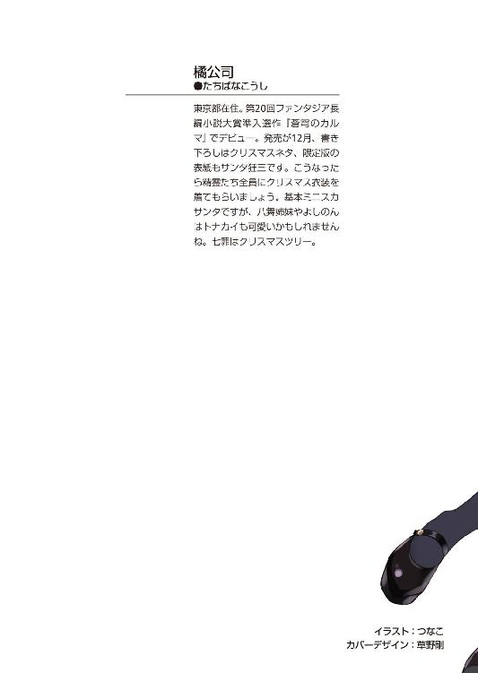
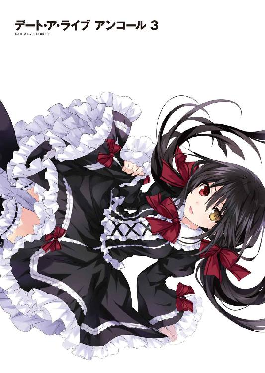
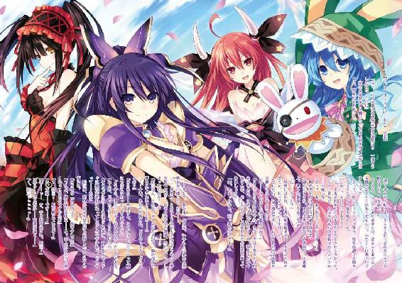
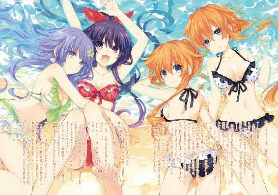
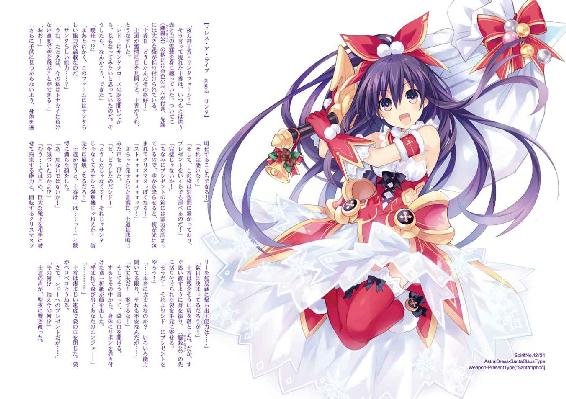
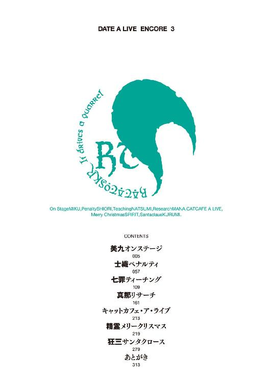
デート・ア・ライブ アンコール３
橘 公司

富士見ファンタジア文庫
本作品の全部または一部を無断で複製、転載、配信、送信したり、ホームページ上に転載することを禁止します。また、本作品の内容を無断で改変、改ざん等を行うことも禁止します。
本作品購入時にご承諾いただいた規約により、有償・無償にかかわらず本作品を第三者に譲渡することはできません。
本作品を示すサムネイルなどのイメージ画像は、再ダウンロード時に予告なく変更される場合があります。
本作品は縦書きでレイアウトされています。
また、ご覧になるリーディングシステムにより、表示の差が認められることがあります。
口絵・本文イラスト つなこ
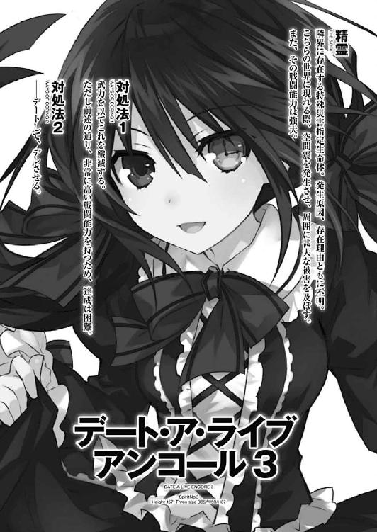
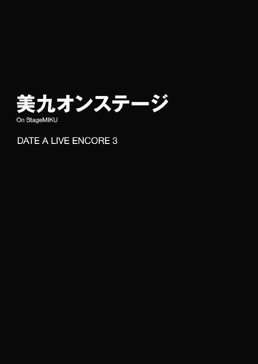
「......はい、ありがとうございましたー！ 次の方、どうぞー！」
五河士道が声を発すると、列の先頭に並んでいた中学生くらいの女の子が、どこか緊張した面持ちで足を踏み出し、士道の前を横切って、一人の少女の前に立った。
「は、初めまして......」
そして、上擦った声でそう言って、微かに震える手を少女に差し出す。
すると少女は、その手を両手で優しく包み込んだ。
「はい、初めましてー。いつも応援ありがとうございますー」
言って、少女が女の子の手を握りながらにこりと微笑む。
可愛らしい衣装を纏った、背の高い少女である。長い紫紺の髪に、愛らしい面。しかし彼女を構成する要素の中で最も印象に残るものは何かと言われたなら、多くの人間がその声を挙げただろう。優しく響く鈴の音のような、透き通った声音。それは聞く者の鼓膜を通して、心に直接染み渡るかのような錯覚さえ覚えさせた。
それもそのはず。彼女こそは、日本でもトップクラスの人気を誇るアイドル、誘宵美九その人であったのだから。
士道がいるのは、広いドーム型の会場だった。今はその中に多くの人々が詰めかけ、長蛇の列を作っている。
そう──士道がいるのは、いわゆる握手会の会場であった。
士道は今日、美九のマネージャー......そして、いわゆる『剝がし役』としてこの場にいるのである。
相手は憧れのアイドル。となればファンは一秒でも長く握手をしていたいものである。そうすると無論、誘導員の指示に従わず、規定の時間を過ぎても握手と会話を続けようとするファンが現れる。剝がし役とは、そんなファンをアイドルから『剝がし』、握手会を円滑に進める人のことだった。
だが、剝がし役は剝がし役でも、士道の仕事は微妙に普通のそれとは異なっていた。
「あ、あの、私、美九さんの歌が大好きで......！」
「本当ですかぁ？ ふふっ、こんな可愛い女の子に応援してもらえてるだなんて嬉しいですー」
「え......!? そ、そんな......」
「うふふ、照れたお顔も可愛いですー。ねえ、どうですか、このイベントのあと、一緒にお茶でも──」
「............！」
不穏な空気を感じ取り、士道は女の子の肩をがっしと摑むと、半ば強制的に美九から遠ざけた。
「はい！ ありがとうございましたー！」
言って、女の子を出口の方に誘導してやる。女の子は一瞬驚いたように目を丸くしていたが、すぐぺこりとお辞儀をして去っていった。
そう。士道の仕事は、握手の時間を超過しそうになったファンを剝がすことではなく、美九が可愛い女の子にちょっかいを出そうとするのを未然に防ぐことだったのである。
「あーん、せっかくいい感じだったのにひどいですー」
美九がぷくー、と不満げに頰を膨らませてくる。だが、次に並んでいた女の子がまた好みだったのだろう。すぐに表情を明るくして、自分から握手をしにいった。......これは、また早めに剝がさねばならないかもしれない。
先ほどからこの調子で、士道は働きっぱなしだった。
とはいえそれも当然といえば当然だった。この会場では今、美九ともう一人のアイドルが同時に握手会を行っているのだが、美九の列には、女性ファンしか並んでいなかったのである。
以前より随分と症状が改善したとはいえ、美九の男性への苦手意識は完全に克服されたわけではない。そのため、今回の握手会は女性ファン限定のイベントとなっていたのだ。
反して、隣のブースにいるアイドルの方に並んでいるファンは、男性の比率の方が高いようだった。
何とはなしに隣で握手会を行うアイドルの方を見やる。朝倉日依。美九に勝るとも劣らない人気を誇るトップアイドルという話だ。
にこやかな表情に丁寧な所作。まさにプロの対応だった。無論、時折いる女の子のファンに色目を使ったりもしない。......少しだけ、向こうのスタッフが羨ましくなる士道だった。
「────ああん、あなたも可愛いですねえ。よかったら今度私のおうちに──」
「......！ はい、ありがとうございましたー！」
と、少し目を離した隙に、美九がファンに自分の連絡先を渡そうとしていた。士道は慌ててファンを剝がすと、はあと大きなため息を吐いた。
今からこの調子では先が思いやられる。士道はなぜこの仕事を受けてしまったのだろうと、少しだけ後悔した。
◇
昨日。士道は美九からの電話で、市内の病院の一室に呼び出されていた。
「──君が、五河士道くん？」
出会いざまにそう言ってきたのは、足をギプスに固められ、ベッドに横たわった二〇代中頃の女性だった。
「はあ......そうですけど」
士道は返事をし、ベッドの隣に立った美九に視線をやった。美九が、士道の疑問を察するようにうなずく。
「あ、こちらは昴さんです。私のマネージャーさんですよぉ」
「どうも、ミソラプロの暮林昴です」
「はあ......それで、何かご用ですか？」
士道が問うと、昴はふうとため息を吐いてきた。
「見てもらったらわかると思うんだけど......ちょっと朝事故っちゃってね」
「はあ」
「それで、マネージャーの仕事ができなくなっちゃったから、代わりの人を見つけなきゃ......と思ってたら、美九があなたの名前を出したのよ」
「は......はぁッ!?」
予想外の言葉に、士道は素っ頓狂な声を発し、美九の方を見た。美九はただニコニコとしていた。
しかし昴はどこか訝しげな表情を作って、士道の顔を覗き込んでくる。
「......ねえ、五河くん。一応訊くけど、あなた、一体美九の何なの？」
「へッ!?」
「ああ、それはぁ──」
美九が指を一本立て、声を発しようとする。士道は本能的に危険を感じ取り、大声を上げた。
「とッ、友だちです！」
「......本当？」
「本当です！ な！ 美九!?」
士道が額に汗を滲ませながら言うと、美九は意味深な顔を作ってから「そうですねー」と答えた。
「......ならいいんだけど。......ほら、アイドルはスキャンダルが怖いから」
「そ、そうですね......」
昴が肩をすくめながら言ってくる。士道は乾いた笑いを浮かべた。
「──で、お願いできるかしら、臨時マネージャー。最悪、明日だけでも受けてくれると助かるんだけど......」
「い、いやいや、ちょっと......」
突然発せられた要求に、士道は否定を示すように首を横に振った。だが、昴は気にする風もなく、勝手に話を続けていく。
「明日、ワールド・アニメ・エキスポの公式イメージソングを歌うアイドルを決めるイベントがあるのよ。敵はあの朝倉日依。美九と人気を二分する強敵よ。でもこれに勝てれば、今後スポンサーには事欠かないわ！ 絶対に落とすわけにはいかないの。だからお願い！ 日曜だし学校も休みでしょ！」
「そういう問題じゃなくて！ ていうかそんなに重要な仕事なら、余計俺なんかじゃ駄目でしょう！ 代わりのマネージャーとかいないんですか!?」
「ふははは！ 弱小プロダクションを舐めてもらっちゃ困るわね！ 社員は社長、事務員、私、以上！ 代わりのマネージャーなんていやしないわ！」
「誇って言うようなことじゃねぇ!!」
士道はたまらず大声を上げた。だがそういえば、美九は顔出しをしないシークレットアイドルとして活動を始めるにあたって、面倒事を避けるため、できるだけ小さいプロダクションを選んだと聞いたことがあった。人が少ないのは当然といえば当然のことかもしれなかった。
「安心して。そこまで専門性の高いことをしろって言ってるわけじゃあないのよ。──あなたにして欲しいことは三つだけ。一つはもちろん、美九を勝たせること」
「いやいや......超重要じゃないですか」
「別に特別なことをする必要はないわ。この子が最高のパフォーマンスをできるように環境を整えてあげるだけよ。──そうすれば、この子は自分の力でその座を勝ち取ってくるわ」
そう言って、昴はぽん、と美九の背を叩いた。美九が「えへへ」と得意げに微笑む。
と、言葉を続けようとしたところで、昴が美九に視線を向けた。
「──あ、美九。悪いんだけど、ちょっと席を外してくれないかしら。これから彼に、マネージャー心得一二〇ヶ条を叩き込まないといけないから」
「は......ッ!?」
「はいー。頑張ってくださいねー」
士道が声を上げるも、美九はひらひらと手を振って去っていってしまった。
そしてその足音が聞こえなくなってから、昴が言葉を続けてくる。
「話を止めて悪かったわね」
「いえ......」
何となく、美九に聞かせたくない話をしようとしているのは感じ取れた。小さく首を振る。
「......こんなこと、美九の前じゃあ言えないけれど──あの子は紛れもない天才よ。正直、私たちの弱小事務所にはもったいないくらいのね。私たちの力が及ばなくて逃してしまった仕事もたくさんある。美九はもっともっと輝ける子なのに。それは、申し訳なく思ってるわ」
「暮林さん......」
「だからこそ、この仕事は落とすわけにはいかないのよ。あの子が顔出しを了承してくれた今がチャンスなの。──お願い。少しの間でいいの。私に......いえ、美九に力を貸してちょうだい」
まっすぐに見つめられ、士道はしばし言葉を失った。
美九にもっと活躍して欲しいのは、士道とて同じだった。それに、もし無下に断って美九が機嫌を損ねたりしたらそれこそことである。士道ははあとため息を吐いた。
「......明日だけですよ」
「！ 本当!? 恩に着るわ！」
昴は顔をパァッと輝かせると、士道の手を握ってブンブン振ってきた。
「......それで、話が途中でしたよね。俺がすべきことのあと二つって何なんですか？」
「ああ、そうだったわね。二つ目は......美九を監視すること」
「監視？」
突然発せられた穏やかでない言葉に、士道は思わず眉をひそめた。
「ええ。実はそのイベント、午前中に握手会も行われるんだけど......そのとき美九が好みの女の子をペロペロしないようにして欲しいの」
「........................ああ、なるほど」
士道は苦笑しながら首肯した。
今話に上がっている誘宵美九というアイドル、実は可愛い女の子に目がなく、通っている女子校では好みの女の子を侍らせているのである。
「......よぉくわかりました。それで、もう一つは？」
士道が問うと、昴は不意に顔を険しくした。
「......この件は極秘だから、絶対に秘密にして欲しいんだけど......」
「は、はい......」
士道がうなずくと、昴は重苦しい調子で続けてきた。
「......実は美九、彼氏がいるらしいの」
「ぶふ......ッ!?」
士道は思わず吹き出した。
だが昴はその反応をどう受け取ったのか、ため息交じりに続けてくる。
「そりゃ驚くわよね。美九に彼氏発覚なんてなったら大スキャンダルよ。でもあの子ったら無防備だから心配で心配で。現場でも、何の躊躇いもなくだーりんだーりん言ってるし」
「い、いや、でも......それって本当に彼氏なんですか......？」
「恋人以外の人間を『だーりん♡』なんて呼ばないでしょ」
「わ、わからないですよ。ただのあだ名って可能性も......」
「あるわけないでしょ。......念のため訊いておくけど、君が『だーりん』なんてことは......ないわよね？」
昴が、殺し屋のような視線で士道を睨んでくる。士道は顔面を蒼白にしながら首を横に振った。
「......そうよね。君みたいなノーマルボーイ、美九には似合わないわよね」
「は、はあ......」
「あ、気を悪くしたらごめんなさい。悪い意味じゃないの。......とにかく、ファンや関係者の前でうっかりそのだーりんの話題を出させないよう注意してちょうだい。美九のアイドル生命に関わることだから、慎重にね」
「......ぜ、善処します」
士道は力なくうなずいた。
......なんというか、それはこの世で一番士道に向いていない仕事である気がしてならなかった。
◇
「つ、疲れた......」
握手会後。士道はおぼつかない足取りで、会場裏の廊下を歩いていた。
とはいえそれも当然である。握手会中、美九がお茶に誘おうとしたファン、実に一〇九名。美九が連絡先を渡そうとしたファン、七二名。美九がハグしようとしたファン、四六名。美九がほっぺにチューしようとしたファン、八名。計二三五名もの少女たちを、士道は美九の魔の手から救っていたのである。
無論、この仕事を受けることについては、昨日のうちに〈ラタトスク〉に確認を取っていた。美九は比較的精神状態が安定しているということで、この件に関しては全権を委任されているのだが......こんな調子が続くようならば応援を要請することも考えた方がいいかもしれない。
「ふう......まあ、とりあえずステージイベントまで一休みさせてもらうか」
そんなことを考えながら廊下を歩き、控え室の扉を開ける。すると──
「──あらー？」
なんて吞気な声を発しながら、部屋の中にいた美九が士道の方に振り向いてきた。
「............ッ!?」
それを見て、思わず息を詰まらせる。
当然だ。なぜなら今美九は、先ほどまで着ていた衣装をはだけ、ほぼ下着だけの状態になっていたのである。
「な......ッ！ 何してんだよ美九!?」
顔を真っ赤にし、叫びを上げる。だが美九はさして慌てた様子も見せずに首を傾げてきた。
「え？ 着替えですけどー？ ほら、汗もかいちゃいましたし、もう早めに次の衣装に着替えちゃおうかと......」
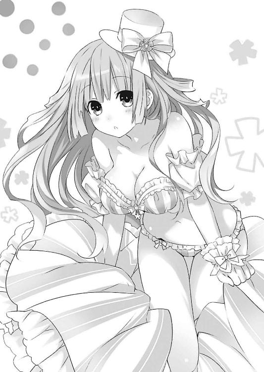
「更衣室でやれよ!? こんなとこじゃ誰が来るかわからないだろ!?」
「大丈夫ですよぉ。今日のスタッフさんは女性ばかりですしー......」
「俺がいるだろうが俺がッ!?」
そこまで叫んだところで、士道は美九の艶姿をジッと凝視してしまっていることに気づいた。ハッと肩を揺らし、慌てて目を逸らす。
「もう、だーりんは特別なんですから、そんなこと気にしなくても──」
と、なぜか美九が何かに気づいたようにそこで言葉を切った。そして、
「えーん、男の人に肌を見られてしまいましたぁ。もうお嫁にいけませんー」
今度はなんだかやたらと棒読みな口調でそう言ってきた。
「な......っ」
明らかに先ほどまでと言っていることが違う。士道は顔中に汗を滲ませた。
「もうお終いですう。美九の身体は傷物になってしまいましたぁ」
「ちょ、ちょっと......」
士道が狼狽していると、不意に美九が士道の手を引っ張ってきた。そして、近場にあったソファに、半ば強制的に座らされる。
「お、おい......」
「だから、責任......とってくれますよねー？」
美九が、士道の逃げ道を塞ぐように膝の上に跨ってくる。
「美九......!?」
微かな香水と汗の匂いが鼻腔をくすぐる。士道は顔を真っ赤に染めた。
「おい、こんなところ誰かに見られたらどうする気だ......！」
「うふふ、そのときはマスコミ呼んで交際宣言出しちゃいましょうかー」
「んなことできるか......ッ！ と、とにかく一旦離れよう！ な!?」
「えぇー、そうですねー。じゃあ、だーりんが何でも一つお願いを聞いてくれるなら考えてもいいですよー？」
「な、何でもってのは幅が広すぎないか......!?」
士道が裏返った声を上げると、美九が悪戯っぽく微笑み、士道の首に手を回してきた。
「ひ......っ!? わ、わかった！ わかったから！」
「本当ですかー？ じゃあ──」
と。
美九が言葉を続けようとした瞬間、控え室の扉が開かれたかと思うと、可愛らしい衣装に身を包んだ少女が部屋に入ってきた。
歳は士道と同じくらいだろうか。柔らかそうな髪を、トレードマークである太陽を模した髪飾りで留めている。
その顔には覚えがあった。──先ほど美九の隣のブースで握手会をしていたアイドル、朝倉日依である。
「お疲れ様で──」
日依は、そう言って会釈をしようとしたところで、ぴたりと動きを止めた。
「......ッ！ 美九！」
「あらー？」
士道は慌てて美九を立ち上がらせると、日依に向いて弁明を述べた。
「ひッ、日依さん！ 違うんです、これは、美九のジョークというか......」
「............」
日依はしばしの間呆気にとられた様子で立ち尽くしていたが、美九を一瞥したのち、何かを納得したようにフンと鼻を鳴らした。
「なるほど......苦労されてますね、マネージャーさん。大丈夫ですよ。見なかったことにしておきます」
「ど、どうも......」
士道はぺこりと頭を下げた。
しかしその頃にはもう、日依は士道を見ていなかった。美九に目を向け、忌々しげな表情を作っている。
「......誘宵、美九さん」
「あ、日依さんじゃないですかー。うふふ、こうして会うのは初めてかもしれませんねー。ご活躍はテレビなんかで拝見してますよー。是非一度お会いしたいと思ってましたぁ」
と、そんな敵意に気づいていない調子で、美九が日依の方に寄っていく。しかし日依はひらりと身をかわすと、不機嫌そうに眉をひそめた。
「私は別に、会いたくなかったですけどね」
「あらー？」
美九が不思議そうに首を傾げる。
「私、何か嫌われるようなことしましたかー？」
そう言って美九が困り顔を作ると、日依はギリと歯を食いしばった。
「当然でしょう！ あなた、アイドルってものを舐めすぎです！」
そして突然声を荒らげ、視線をキッと鋭くする。
「えー？ そんなことはないと思いますけどぉ......」
「どの口が......！ よくない噂は以前から色々聞いていましたが、今日実物を見て確信しました。あなたに、アイドルを名乗る資格はありませんっ！」
叫び、日依がビッ！ と美九に指を突き付ける。しかし美九はショックを受ける様子もなく、「あらー」と吞気に目を丸くするのみだった。
「......あの、よくない噂って？」
士道が問うと、日依は目を伏せながら深く首肯した。
「ライブハウスのスタッフさんを無理矢理全員女性に替えさせたりだとか、シークレットライブにきたお客さんの中から、好みの女の子を選んで自宅にお持ち帰りしただとかですっ！ あまつさえマネージャーに迫るだなんて、アイドルの風上にも置けません！ 言語道断です!!」
「............」
美九の名誉のために何か反論しようとした士道だったが、悲しいかな、ぐうの音も出なかった。
「そもそも！ アイドルなのに顔出ししないってのはどういうことなんですか!? アイドルって言葉の意味をわかってるんですか!? 偶像ですよ!? アイドルっていうのは歌を歌ってはい終わりじゃあないんです！ その身！ その存在！ 全てにアイドルたる責任があるんですよ！」
「えー、でも今は顔出し解禁してますしー......」
「そこがまた許せないんですよぉぉぉぉッ！ きっとこの人にも深い事情があるに違いない......とか思っていた私の気持ちどうしてくれるんですか！」
「い、いや、それには美九にもちゃんと事情があって......」
士道が言いかけるも、バンバン！ と激しくテーブルを叩きながら、日依が続ける。
「あなたは何から何までだるっだるのゆるっゆるなんですよ！ 顔出ししたらしたでパフォーマンスは丸パクリだし！ あなたにはアイドルとしての責任感が！ 矜持が！ 覚悟が足りないの！ ああもうなんで私はこんな人のＣＤ売り上げに勝てないのよぉッ！」
日依が頭を抱えながら今までで一番大きな声を上げる。
と、そこで士道は小さく眉をひそめた。日依の言葉に一つ、気になるところがあったのである。
「パフォーマンスが丸パクリ......？ それってどういう──」
「とにかく！ 今日、直接対決ができるのを心待ちにしていました。私があなたに引導を渡してあげます！」
しかし日依は士道の言葉に気づいていない様子で、再び美九に指を突き付ける。ちなみに美九は、日依の熱い演説に感心するようにパチパチと手を叩いていた。
「うふふ、私も楽しみにしてましたよー。日依さんと一緒のステージで歌えるのを。日依さんは今いるアイドルの中でも、私の一押しですからねー」
美九の言葉に、日依が渋面を作る。
「......ッ！ 戯れ言を......！」
「本当ですよぉ。ＣＤ全部持ってますし、内緒でライブも見にいったことありますしー。歌も踊りもファンサービスも全部一級品です。すごいですよぉ」
「あなたに褒められたって──」
「でもぉ」
と、美九が指を一本立て、唇の前に置く。
「日依さん、ちょっと完璧過ぎる気もするんですよねー......いえ、そうあろうとすることを否定するつもりはないんですけど、なんか無理してませんかぁ？ 気を抜けとは言いませんけど、自由に歌った方が楽しいですし、もっと魅力的になると思いますよー？」
「勝手なことを言わないでくださいッ！ 私のファンは、私の完璧なパフォーマンスを求めて来てくれているんです！ ファンを裏切ることなんてできませんっ！」
日依が拳を固めながら叫ぶ。すると美九は難しげに眉をひそめ、考えを巡らせるように「うーん」と小さくうなった。
「なんていうか......もっとファンを信用していいと思いますよ？ ちょっとの失敗くらいじゃ、みんな日依さんから離れたりしませんってば。──なんだか日依さん、ファンの人たちを怖がってるみたいに見えます」
「......！ 何を......！」
その言葉は、日依にとってよほど耐え難いものだったらしい。まるで茹だるように日依の顔が赤くなっていく。
だが美九はまるで気にしていない様子で、数秒後、何かを思いついたようにポンと手を打った。
「あ、そうだ！ じゃあこうしましょうよぉ。どんなことがあっても私は日依さんのファンでいるって約束してあげますから、もっと自由に──」
「ふざけるなっ！」
今までにない荒い語調で叫び、日依はテーブルに拳を打ち付けた。
「──どちらが真のアイドルに相応しいか、ステージの上で見せてあげます......ッ！」
そしてそう言い残し、日依は控え室から出ていってしまった。
バタン！ と乱暴に扉が閉められ、しばしの間部屋の中に静寂が訪れる。
「......すごい剣幕だったな」
「ですねー。台風みたいでしたー」
美九があっけらかんとした調子で言う。その様子に、士道は思わず苦笑してしまった。
「にしても......珍しいな。美九が人のことにあんなに口出しするなんて」
士道が問うと、美九もそれを自覚していたのか、肩をすくめてから頰をかいた。
「うーん、なんだか放っておけないんですよねー。......よく似てるんですよ、日依さんって」
「似てる？ 誰にだ？」
「──昔の、私に」
言って、美九は感慨深げに吐息した。
「『月乃』だったころの私にそっくりなんです、あの子。なんだか、あのままじゃ自分で自分を追い詰めていってしまいそうで──」
そう。美九はかつて、『宵待月乃』という名でアイドルとして活動していたのである。今ほどの人気はなかったものの、地道に仕事を積み重ね、充実した日々を送っていた。
だがあるとき、スキャンダルを捏造され、ファンから見放され、精神的に追い詰められて声を失い、一度は死のうとさえしてしまった。
「だから、ちょっとお節介しちゃいました」
でも、と美九が息を吐く。
「だーりんのようにはいかないですねえ。やっぱりだーりんはすごいですー」
「え？」
予想外の言葉に、士道は首を傾げた。すると美九がふふっと微笑んでくる。
「やだなぁ、忘れちゃったんですかー？ 私が日依さんに言った台詞って、だーりんが私に言ってくれたのと同じですよー？」
「あ......」
言われて、士道は目を見開いた。そういえばその通りである。
あまりに自然に美九が発したため気づかなかったが、それは確かに、かつて士道が美九に言った言葉だった。
「私は、あれで救われたんですよ？ だーりんがいてくれたから、今の私がいるんです」
「ええと......」
面と向かって言われると少し恥ずかしい。士道は話題を変えるように声を発した。
「そ、そういえば美九。これだけファンがいたら、『月乃』を知ってる人もいるんじゃないのか？」
「いえ、たぶんいないと思いますよー」
「？ そうなのか？」
士道が首を捻ると、美九が説明するように指を立ててきた。
「私、過去の自分を消すために、ずっと歌に霊力を込めてたんです。──その歌を聴いた人の記憶から、『宵待月乃』の存在を薄れさせるように」
「ああ......なるほどな」
「まあ、もちろん今は霊力が封印されちゃってますけど、何かきっかけがないと思い出さないと思いますよ？ だから、このビッチめー、なんて罵られる心配はありません」
美九が冗談めかすように言う。士道はハッと肩を揺らした。
「ご、ごめん、そんなつもりじゃ──」
「うふふ、わかってますってば」
美九はそんな士道を見ながら微笑むと、その場でくるりとターンして、腰に手を当ててみせた。
「さ、じゃあ私も準備しましょうか。──日依さんのいう真のアイドルとかいうのには興味ありませんけど、せっかくだーりんが特等席で見てくれる貴重なステージですし──」
言って、人差し指と親指を伸ばして銃の形を作り、士道の心臓を撃ち抜くようなジェスチャーをしてみせる。
「惚れ直させてあげます、だーりん」
その姿は、ステージに立つまでもなく心奪われてしまうくらいに、格好良かった。
◇
──それから数十分後。ドームの中は、凄まじい熱気に溢れていた。
それはそうである。誘宵美九と朝倉日依。人気を二分する二大アイドルが直接対決をするというのだ。
今から美九と日依は順にパフォーマンスを行う。そしてそのステージに、審査員と観客がそれぞれ点を入れるのだ。実際少しでも自分が応援するアイドルを有利にしようと、双方のファンがチケット入手に躍起になっていたという話である。
だが、当の美九はさほど気負っていないようだった。
「じゃあ、いってきますねー」
なんて手を振りながら舞台袖からまだライトの灯っていないステージに出ていき、所定の位置にスタンバイする。その所作からは、緊張感やストレスといったものは感じられなかった。
──そしてそれからすぐにステージの中央にカッとスポットライトが照射され、美九のステージが、始まった。
『───────────────！』
流麗な曲調とともに美九が透き通った声を響き渡らせる。その見事な歌声に、会場は大いに沸き立った。
「......やっぱり、すげえよな」
その様を舞台袖という特等席で見ながら、士道は思わず息を吞んだ。
ステージに立ち、マイクを握る。それだけで美九は、ほわほわしたお嬢様からアイドルへと変貌する。美九が歌い始めた瞬間、別人を見ているような気分になってしまったくらいだ。
まさに歌姫という言葉が相応しい、圧倒的な存在感。自分のファンはもちろん、会場の半数近くを占めるであろう日依のファンの視線までも釘付けにしてしまっていた。
と。
「......ん？」
そこで士道は、舞台袖に自分以外の人間がやってきたことに気づいた。──朝倉日依である。
日依は先客である士道に気づいていない様子で、頰に汗を垂らしながら美九のステージを見つめていた。
「......凄い。でも、やっぱり......」
そして、独り言のように小さな声をこぼす。
「勝たなきゃ......絶対......私は、あんな人に負けるわけには──」
「朝倉さん？」
「......っ！」
士道が声をかけると、日依はビクッと肩を震わせた。
「あ、あなたは......美九さんのマネージャーさん......？」
「あ......はい。臨時マネージャーの五河です」
『臨時』を強調するも、日依はさして興味を示さず美九に視線を戻した。
否──というよりも、日依には今、士道を気にしている余裕がないように見えた。美九の歌声に、一挙手一投足に、耳を、目を奪われている。もしかしたらこの会場の中で一番熱心に美九のステージを見ていたかもしれない。
──視線はそのまま、日依が小さく唇を開いてくる。
「......神様は不公平ですよね。あんな不真面目でいい加減な人に、あんな凄い才能を与えるだなんて」
「え？ いや、別に美九はいい加減ってわけじゃ......」
「いいんですよ。誰にも言いませんから。色々苦労されているのは知っています」
「それは、その......ええと」
それを言われては何とも返しがたい。士道はごにょごにょと口ごもった。
日依は、まっすぐ美九のステージを見据えながら拳を握った。
「──私は負けるわけにはいかないんです。アイドルは......完璧じゃなきゃいけないんですから」
「......え？」
微かに震えた声に、士道は眉をひそめて日依の方を見やった。
美九のステージを見つめる日依の横顔。そこには、確かに緊張と焦燥のようなものが見て取れた。
無論、次は自分があのステージでパフォーマンスを披露するのだ。いくら場慣れしているアイドルとはいえ、緊張くらいはするだろう。しかし日依の横顔を見た瞬間、士道の脳裏に、先刻美九が発した言葉が蘇ってきた。
（なんだか、あのままじゃ自分で自分を追い詰めていってしまいそうで──）
今舞台袖から美九のステージを見る日依は、緊張で押し潰されそうな幼子のようにしか見えなかったのである。
「なんで......」
「──え？」
「なんで、日依さんはそんなに......完璧であろうとするんですか？」
士道が言うと、日依は一瞬だけ視線を寄越してきた。
「......美九さんに、訊いておくよう言われました？」
「いや、そういうわけじゃないんですけど......なんだかあまりにも、アイドルってものに対してストイックな考えを持っているみたいだったから......」
「............」
日依はしばしの間無言になってから、ふうと息を吐いてきた。
「......私、大好きなアイドルがいたんです。まだ新人で、そこまで有名ってわけじゃなかったんですけど、とても綺麗な声をした人で......聞いているだけで心が弾んでくるような歌を歌う......月並みな言い方をするなら、私の憧れでした」
「そうなんですか」
士道が相づちを打つと、日依は「ええ」とうなずいてから言葉を続けた。
「私と一つしか歳が違わないのに、歌でたくさんの人を元気にできるなんて凄いって思ったんです。それが、私がアイドルを目指したきっかけです」
「......もしかして、そのアイドルが凄い完璧主義者だったとか？」
「いえ。むしろ逆です」
「逆？」
首を傾げると、日依は遠い目をしながら唇を動かした。
「......その人、いろいろスキャンダルを起こして、ファンに見捨てられて、自殺しちゃったんです」
「え──」
唐突に告げられた情報に、士道は思わず目を見開いた。
「今になって考えてみると、あのとき週刊誌に書かれてた内容が全部本当だったかはわからないんです。でも、そんな不確定な情報一つで、前途ある新人アイドルが簡単に潰されてしまった。──彼女の歌は本物でした。あんなことがなければ、きっと今頃は日本中が彼女の歌に熱狂していたに違いないのに」
日依が悔しげに唇を嚙みしめ、拳を握る。その表情は、ファンには絶対に見せられないような憎悪の色に染まっていた。
自分でもそれに気づいたのだろう、日依が身体から力を抜く。
「......だから、私は絶対に間違わない。『アイドル』っていうのは、歌が上手ければなれるようなものでも、踊りが上手ければなれるようなものでも、ましてや人より顔立ちが整っているくらいでなれるようなものでもないんです。一つの傷さえあってはいけないんです。あったとしても、誰にも気づかれてはいけないんです。存在全てが輝いていなければならないんです」
「日依さん......」
士道は悲痛に過ぎる日依の覚悟に、思わず息を吞んだ。
日依の決意は、『憧れのアイドルがそれで失敗してしまったから、自分はそうならないよう注意する』......だなんて単純なものではないように思えたのである。
花を咲かせる前に蕾を摘み取った者たちに、本来であれば咲き誇ったであろう大輪の花を見せつける。彼女の表情からは、そんな復讐めいた感情が覗いているような気がしてならなかった。
「......私はこんなところで足踏みしていられないんですよ。──あんな偽者に、負けるわけにはいかないんです」
「え......？」
日依から発せられた言葉に首を傾げる。だが思い返してみれば、日依は先ほど控え室でも似たようなことを言っていた。──美九のパフォーマンスが、丸パクリであると。
「それって、どういうことですか？」
士道が言うと、日依は再び視線に憎悪を込めて美九の方を見やりながら口を開いた。
「美九さんのパフォーマンス......似ているんですよ。私が今言ったアイドル──宵待月乃に。......いえ、似ているなんてものじゃない。そのままなんです。......許せません。一人のアイドルとしても、あの人のファンとしても」
「え......そ、そんな──」
日依の言葉に、士道は声を震わせた。
士道は美九がどれだけ歌を愛しているかを知っている。その美九が、誰かのパフォーマンスを真似ているだなんて、にわかには信じられない。だが、日依が噓や出鱈目を言っているようにも見えなかった。まさか、本当に──
「............ん？」
と。そこで士道は首を捻った。
日依の言ったアイドルの名に、聞き覚えがある気がしたのである。
「......あの、日依さん」
「はい？」
「もしかして......なんですけど。今、宵待月乃って言いました？」
士道が恐る恐る問うと、日依は驚いたように目を丸くした。
「ご存じなんですか？ 嬉しいです。彼女を覚えていてくれる人がいて」
「いや、っていうか......」
士道は汗の滲む頰をかいてから、ステージの方を指差した。
「......今、そこで歌って踊ってます」
「へ？」
日依が素っ頓狂な声を発し、目を点にする。
それから数瞬。ステージ上の美九と士道の顔を何度か交互に見てから、ハッと息を詰まらせた。
そして、今初めてその事実に気づいたような調子で顔を驚愕に歪める。
「え、あ、あ、あああああああッ!?」
どうやら、彼女も美九の歌声に込められた暗示にかかっていたようだ。士道の指摘で、ようやく二人が同一人物であることに気づいたらしい。
「えっ？ えっ......？ いや、だって、月乃さんは自殺......」
「あの、未遂だったんです、それ」
「美九さんは月乃さんのパフォーマンスを真似て......」
「いや、真似てるっていうか、本人なんです......」
「............」
日依の顔から、一気に血の気が引いていく。
「え、え、えええええええッ!?」
──日依が叫んだ瞬間、美九のステージが終わりを告げ、会場から割れんばかりの拍手が鳴り響いた。
◇
『──さあ、続いては朝倉日依さんのステージです！』
司会者の声がスピーカーから響くと同時、会場から大きな拍手と日依コールが巻き起こった。次いで、観客席にサイリウムが次々と灯っていく。
「──だーりんは、日依さんのステージを見るのは初めてです？ うふふ、すごいですよぉ。ま、歌は私の方が上ですけどねー」
舞台袖に戻ってきた美九が、タオルで汗を拭いながら話しかけてくる。しかし、士道には生返事しか返せなかった。
「あ、ああ......そうだな」
「？ どうかしたんですか？」
「いや、ちょっとな......」
士道は緊張した面持ちで、日依のステージを見守っていた。
曲が始まり、日依が声を会場中に響かせる。その堂々たる様は、まさにアイドルといった風格だった。
だが──
「......あっ！」
美九が声を上げる。歌の最中、一瞬日依が美九の方を見たかと思うと、動揺したように身体を震わせ、歌を止めてしまったのである。
焦った様子でそれをリカバリーしようとするも、足をもつれさせ、その場に倒れ込んでしまう。予想外の事態に、会場がざわめきに包まれた。
「ど、どうしたんでしょう、日依さんらしくない......」
「.........」
心配そうに日依を見つめる美九に対し、士道は頰に汗を垂らしていた。
......何というか、日依の動揺に思いっきり心当たりがあったのである。
日依の憧れのアイドルの正体に気づいてしまったとはいえ、今からステージに立とうというタイミングで教える必要はなかったかもしれない。今になって自分の行動がどれだけ考えなしだったかを後悔する士道だった。
美九を勝たせる、という一点のみに重点を置くのなら、士道の行動はマネージャーとして正しいものなのかもしれない。しかし、美九がそんな勝利に満足するはずはなかったし、士道自身も、日依に最高のパフォーマンスをして欲しいという思いがあった。なんとかしなくては......！
そんな士道の様子に気づいているのかいないのか、美九があたふたと日依と士道を交互に見る。
「あ、ああ、駄目ですよー日依さん、呆然としてちゃあ。急いで立て直さないと......！ 大丈夫ですって、それくらいで皆さん日依さんのことを嫌いになったりなんかしませんよー！」
美九が、まるで自分のことのように狼狽しながら、祈るように胸元で手を組む。
「......っ！ 美九！」
その言葉を聞いて、士道は目を見開いた。
「おまえ、控え室で言ってたよな？ どんなことがあっても自分は日依さんのファンでいるって。──あれは本心か？」
「え？ ええ、もちろんですよー」
美九が微塵の逡巡もなく首肯してくる。その答えに、士道は力強くうなずいた。
「なら、もう一度、それをそのまま伝えてあげてくれ。多分──今の日依さんを救えるのは、美九だけだ」
「え？ でも、彼女は私のこと......」
美九は怪訝そうに眉をひそめかけたが、士道が冗談や与太話でこんなことを言っているのではないことに気づいたのだろう。すぐにこくりとうなずき、ステージに向き直ると、すうっと大きく息を吸い込んだ。
「あ、ああ......」
日依は、絶望的な心地でステージにへたり込んでいた。
致命的な失態。アイドルがもっとも輝いていなければならない場所で、こんな醜態を晒してしまった。視界が歪む。動悸が激しくなる。もう何が何だかわからなく──
「────日依さぁぁぁぁん！ 頑張れぇぇぇぇぇぇぇぇぇぇっ!!」
「え──？」
不意に。
ざわめきに沈んだ会場に大きな声が響き渡り、日依は呆然とした声を発した。
だが、その声の主はすぐにわかった。──美九だ。舞台袖で日依のステージを見ていた美九が、マイクも使わず日依に声を届けてくれたのだ。
「美九、さ──ん......」
再び舞台袖に目をやる。そこには、日依が憧れ続けたアイドル、宵待月乃の姿があった。
声も、姿容も、日依の記憶にある月乃の面影を残している。なぜ今まで気づかなかったのだろうか。
月乃が今、日依を見ている。日依に、激励の声をかけてくれている。
それが日依には、涙が出るほどに嬉しかった。
──思えば。
控え室で美九が言ったことは、日依の図星を突いていたのだ。
月乃の悲惨な最期を知って、一切隙のないアイドルを目指していた日依は、完璧を求めすぎるあまり、次第に自分で自分を縛り付けるようになっていったのである。
楽しかったはずの仕事は義務の連続になり、観客の目は監視員のそれになっていった。いつしか、自分がなぜ歌っているのか、なぜアイドルを目指したのかもわからなくなっていった。
「あ......、ぁ──」
だが──嗚呼、そうだ。日依はようやく思い出した。
自分は、あの人に。宵待月乃に自分の歌を聴いてもらいたくて、オーディションに応募したのだ。あの人の隣に立ちたくて、歌を、踊りを練習してきたのだ。あの人の遺志を継ぎたくて、有名になろうとしたのだ。
──控え室での言葉を思い起こす。彼女にとっては冗談か軽口かもしれない。だが、あの宵待月乃が、日依に言ってくれたのだ。──たとえどんなことがあったとしても、自分は日依のファンでいてくれると。
──ならば、もう日依に、怖いものなどは、ない。
と。日依が立ち上がろうとした瞬間、美九の声援に当てられたかのように、観客席に草原のように広がっていたサイリウムが規則的に揺らめき始め、盛大な日依コールが響き渡った。
「......！ 皆、さん──」
日依は思わず声を発した。
そう。日依の前にいたのは、冷徹な監視員の群れではなく、日依の歌を待ち望んでいるファンたちだった。そんな簡単なことさえ、今の今まで日依は忘れてしまっていた。
──そんな女が、真のアイドルの何たるかを語るだなんて、おこがましいにも程がある。日依は先ほどの自分の言動を思い返して小さく笑ってしまった。
自分はようやくスタートラインに立てた。──否、戻ってこられた。
「なら──今の私の、最高を」
日依はマイクを握り直すと、ステージに歌声を響かせた。
『──では、審査の結果を発表いたします』
日依のステージが大喝采で終幕してから、およそ一〇分後。美九と日依の並び立ったステージに、司会者のアナウンスが鳴り響いた。
『ＷＡＥのイメージソングアーティストは──』
数秒間のドラムロールのあと、スポットライトがカッ！ と美九に照射される。
『接戦の末、誘宵美九さんに決定いたしました！』
するとその瞬間、観客席から大きな歓声と拍手が鳴り響いた。
『おめでとうございます、美九さん。今のお気持ちをどうぞ』
『うふふ、ありがとうございますー。嬉しいですー』
司会者が美九に花束を手渡すと、美九はにこっと微笑んで観客席に小さく手を振った。それを見てか、再度凄まじい歓声が巻き起こる。
「勝った......か」
その光景を舞台袖から見ながら、士道はふうと安堵の息を吐いた。
とりあえず、マネージャーとして一番大きな仕事はこなすことができた。それに──
「............」
美九の隣に立つ日依の顔を見て、士道は口元を綻ばせた。彼女の表情は先ほどまではない満足感に溢れ、純粋な祝福の色に染まっているように見えた。
『──さて、ここでご報告です！』
と、そこでステージ上の司会者がくるりと身を翻し、ステージのセットを示すように手を上げる。するとそこに設えられたモニタに、何やら派手な画面が映し出された。
『早速ですが、来週日曜、ＷＡＥイメージソングアーティスト決定記念イベントが行われます！ 出演はもちろん、今その座を射止めた──誘宵美九さん!!』
司会者が高らかに宣言した瞬間、観客席がさらに大きな歓声に包まれた。
「......ん？」
だが。士道はそんな光景を見ながら、怪訝そうに眉をひそめていた。
司会者がそれを宣言した瞬間、美九がピクリと表情を変えた気がしたのである。
『──ちょっと待ってください、来週の日曜ですかー？』
『え？ はい、そうですけど......』
『私、何も聞いてないんですけどー』
『や、まあ、それはサプライズイベントですから。でも、事務所にはスケジュール空けておいていただくようお願いしてあったはずですけど......』
『............』
美九はしばしの間無言になると、突然司会者のマイクを奪い取り、高らかに宣言した。
『皆さーん！ 私、一つお願いがありますー！ 聞いてくれますかー？』
美九が言うと、ファンたちは地鳴りのような大声援で応と答えた。
『私も、投票権が欲しいんですよー。私の分の点数を、全部日依さんに入れたいんです！』
観客席が、美九の提案を支持する声援と、その意図を測りかねたどよめき、そして日依にＷＡＥで歌って欲しいファンたちの叫びで満たされる。司会者は思わぬ美九の言葉に慌てふためいていた。
だが美九は構わず、ポカンとした日依に歩み寄っていった。
『──日依さん、あなたのステージ、素敵でしたよ』
『え？ 月──じゃなくて、美九さん、私、その......』
『私のお願い、聞いてくれますか？』
日依は突然のことに戸惑っていたが、美九が優しくそう言うと、こくんと力強くうなずいた。
『ありがとうございますー』
美九はにっこりと微笑むと、手にしていた花を日依に手渡し──そのまま、日依の頰にチュッ、と口づけた。
『はぬわ......ッ!?』
これは予想外だったのだろう。日依が素っ頓狂な声を発して顔を真っ赤にし、その場にくずおれる。会場から何だかもうよくわからない大歓声が響き渡った。
「お、おい、美九......っ！」
さすがに少しやり過ぎである。士道は美九を制止するように声を上げた。
だが、美九は構わず、この日最大級の爆弾を投下した。
『うふふ、日依さんの活躍、楽しみにしてますよ。私も──だーりんも』
◇
「どぉぉぉいうことよぉぉぉッ!?」
大波乱のイベント終了後。恐る恐る病院に戻った士道を出迎えたのは、予想通り大荒れに荒れた美九のマネージャー、昴だった。
「おッ！ 落ち着いてください、暮林さん......ッ！」
「どうやって落ち着けっていうのよ！ 美九を勝たせること！ 美九が女の子をペロペロしないようにすること！ 美九に男の話をさせないこと！ 全ッ部駄目じゃないのぉぉぉぉぉぉっ！」
昴はしばしの間、士道の首をがっくんがっくん揺らしたのち、はぁぁぁぁぁぁ、と大きな大きなため息を吐いた。
「......ごめんなさい、取り乱したわ。悪いのは一〇〇パー美九だってのはわかってるのに......君にそこまで責任問うのは酷ってもんよね......」
「い、いえ......こちらこそ、なんかすいません......」
士道が言うと、昴は士道の襟首から手を離し、またも大きく息を吐いた。
「とにかく......ありがとうね。その件はこっちで何とかしてみるわ......」
「なんとか......できるんですか？」
士道が恐る恐る訊いてみると、昴は憂鬱そうにうなずいた。
「するしかないわ。──まずＷＡＥのイメージソングアーティストの件だけど、まあこれは仕方ないわ。好機であったのは確かだけど、美九はこんなのに頼らなくてももっと売れるもの。むしろ朝倉日依に勝ちを譲ったって美談ができただけよしとしておくわ」
「そ、そうですね」
「ほっぺにチューについても......先方からクレームがこない限りはなんとかできると思うわ。ちょっと過激な百合営業ってことで」
「......な、なるほど。でも──」
士道が言うと、昴は察したように首肯した。
「......一番の問題はだーりんの件ね。以前天央祭ステージで発言しちゃったときは、だーりん＝観客みんなのことだったんだよ！ って空気に持っていってなんとか誤魔化したけど......今回はそれも難しそうだし......」
「ど、どうするんですか？」
「......最悪、『だーりん』って名前の犬でも飼わせて、一緒にテレビ出演でもさせるわよ。ミニチュアダックスの『だーりん』でーすって」
「......それでなんとかなりますかね」
「するしかないわ」
やれやれと昴が肩をすくめる。なんというか、頼もしい女性だった。
「いろいろ悪かったわね、五河くん。謝礼はあとで君の口座に振り込んでおくから」
「いえ......あんまりお役に立てずすいません」
「気にしないで。──これに懲りずに、美九と仲良くしてあげて。ほらあの子、他に男友達いないから」
「あ、あはは......わかりました」
と、士道が病室を出ていこうとすると、背後から制止の声が響いた。
「そうだ、五河くん。確か君って学校来禅よね？」
「え？ はい、そうですけど......」
士道が答えると、昴はベッドの脇に置かれた棚に手を伸ばし、一枚の写真を手にとって、士道の方に示してきた。
「実は、美九が持ってた写真に可愛い子が写っててさ。制服からして来禅らしいんだけど、見たことない？ よかったらうちでモデルでも......と思ったんだけど」
「はあ......」
来禅には、十香や折紙、八舞姉妹などの美少女が揃っている。恐らくその誰かに目を付けたのだろう。折紙ならばまだしも、十香や八舞姉妹の耳に入ったらまた面倒なことになりそうだ......と思いながら写真を覗き込む。
「......ッ!?」
が。そこに写っていた予想外の人物を見て、士道は身体を硬直させた。
四葉のクローバーを模した髪飾りで髪を留めた、背の高い少女である。どこか中性的な顔立ちに、自信なさげに歪められた眉が特徴的だった。
その顔に見覚えがあるかと言われたら、答えはイエスだった。
その少女の名は五河士織。そう......美九と並んで写っていたのは、琴里の指示で女装させられた、士道の姿だったのである。
「どう？ 見たことない？ 下の名前は士織ちゃんっていうらしいんだけど、美九がそれくらいしか教えてくれないのよね。──いいわよこの子。磨けば光るわ。一回水着グラビアでも飾れば、みんな飛び付くと思うのよね。あ、歌とかいければアイドル路線で売り出してもいいんだけど──」
「い、いえ、シラナイデス......」
士道は、顔中に汗をだらだら流しながら乾いた声でそう答え、逃げるように病室をあとにした。
「あ、話は終わりましたー？」
と、病室の前で待っていた美九が、昴とは対照的にのんびりとした声を響かせてくる。
「ああ......すっげえ怒られたけど」
「あははー、昴さんたら心配性ですからねー」
「............」
美九が剛胆過ぎるだけなのではと思った士道だったが、とりあえず黙っておいた。
「......そういえば、美九」
「はいー？ どうかしましたかー？」
「せっかく勝ったのに、なんで、日依さんに勝ちを譲ったりしたんだ？ あの仕事が決まれば、もっと活躍の場が広がったんじゃないのか？」
「うーん、あのお仕事は、私より日依さんの方が合ってると思ったんですよー。あの人なら、きっと完璧にこなしてくれますしねー。それに......」
「それに？」
士道が首を傾げると、美九はうふふー、と微笑んだ。
「──次の日曜日は、近くの神社で秋祭りがあるんですよー？」
「え？」
美九の言葉に、士道は目を丸くした。
「そ、そんなことのために!? 祭りなんて別の神社でもいいじゃないか！」
「駄目ですよー。あそこは縁結びの神様を祀ってて、秋のお祭りに参拝したカップルは必ず結ばれるって言われてるんですからー」
「......へ？」
「なんでも一つ、言うことを聞いてくれるんですよねー？」
「あ......」
......そういえば、そんなことを言ってしまった気がする。士道は間の抜けた声を発した。
士道のそんな顔を見てか、美九がにこりと笑い、小指を一本立ててくる。
「──もちろんデートに誘ってくれますよね、だーりん？」
「では、皆さんに特別聴講生を紹介しまぁす。──入ってきてください」
「............は、はい」
タマちゃん先生の呼びかけに従って、五河士織は諦めたようにため息を吐いてから教室に入っていった。
長い髪を四つ葉のクローバーを模した髪留めで留めた、長身の少女である。うっすらとナチュラルメイクの施された顔には、声変わりを済ませていない少年のような妖しい色香が漂い、見る者の視線を引きつける不思議な魅力を感じさせた。
しかし今その表情は不安げに歪み、カーディガンの袖から覗く手は、歩くたび頼りなげに揺れるスカートの裾を押さえるように下方に固定されていた。
『............！』
と、士織が教室に入っていくと同時、クラス中にざわめきが溢れた。
一瞬、『バレた』かと思ったが──違う。皆、表情を驚きの色に染めてはいたのだが、士織の正体に気づいたわけではないようだった。
特に、亜衣麻衣美衣、そして殿町は、士織の登場に大層驚いている様子である。──無理もない。彼女らの前に士織が姿を現したのは、今日が初めてではなかったのだ。
「はい、では士織さん、自己紹介をお願いしまぁす」
言って、タマちゃん先生が名前を黒板に書くよう促してくる。
士織はチョークを手に取ると、皆に背を向け、左手でスカートの裾を押さえながら、黒板に自分の名前を書いていった。
「い、五河士織です。五河士道の従妹にあたります。短い間ではありますが、よろしくお願いします......」
変声器越しの可愛らしい声でそう言って、ぺこりとお辞儀をする。すると、皆からパチパチと大きな拍手が鳴り響いた。
が──すぐ違和感に気づく。
パチパチという拍手の音に交じって、カシャカシャという機械音が聞こえてきたのである。
「ん......？ お、折紙......さん!?」
士織が顔を上げると、いつの間にそこに現れたのか、窓際の席に座っているはずのクラスメート、鳶一折紙が、表情を一切変えないまま、小型のカメラを構えて士織の写真を撮っていた。
「と、鳶一さん？ 何してるんですかぁ？ ちゃんと席に......」
「先生、邪魔をしないで。人生はあまりにも短い」
「へ、へっ......？」
タマちゃん先生が注意をするも、折紙は止まらなかった。右から、左から、士織の姿を写真に収めていく。
「ちょ......、あの......っ！」
「怖がらないで。私に任せて。心を裸にして」
士織が手で顔を隠すも、構わず折紙はシャッターを押し続けていた。と、ガタンと椅子を倒すような音が聞こえてきたかと思うと、十香が折紙と士織を隔てるように立ちはだかった。
「こら、鳶一折紙！ シドー......ではない女が嫌がっているだろう！」
「あなたには関係のないこと。そこをどいて。せっかくの士織の写真に、汚物が写り込んでしまう」
「な、なんだと!?」
十香と折紙が、いつもの小競り合いを始める。しかし折紙のカメラのレンズは、まっすぐ士織を向いたままカシャカシャとシャッター音を響かせ続けていた。
「や......っ!?」
これ以上この姿を記録に残されてはたまらない。士織はレンズから逃れるように身を捩りながら、こんなことになってしまった原因──昨日の迂闊な発言を悔やんでいた。
◇
「おーい、琴里。まだかー？」
昨日。身支度を調えた士道は、自宅の玄関で声を上げていた。
昨日は日曜日だったため、士道は久々に琴里と二人で街へ出かけることにしたのだが......妙に琴里の身支度が遅かったのである。
「んー！ もうちょっと待ってー！」
家の奥から、琴里の声が聞こえてくる。だが、もうちょっと、と言われてから数分経っても、まだ琴里は現れなかった。
「琴里ー。置いてくぞー」
「も、もうちょっとだから！」
それからほどなくして、ようやく琴里が玄関にやってきた。
白いリボンで二つに括られた髪と、どんぐりのように丸っこい目が特徴的な少女である。今はその身に、普段はあまり着ないような、少し大人びたシックな服を纏っていた。そのいつにない様子に、思わずドキリとしてしまう。
思えば、そこで素直に感想を述べればよかったのだ。しかし......長い時間待たされていた士道は、疲れと苛立ちからか、はたまた照れ隠しからか──いらないことを言ってしまったのだった。
「はあ、やっと来たか。......その、なんだ、女の子ってのはなんでこんなに身支度に時間がかかるのかね」
「............」
士道が言った瞬間。琴里の頰がピクリと動いた。
「......？ どうした琴里。ほら、早く行くぞ。靴履いて──」
と、士道が言いかけたところで、琴里は無言のまま、髪を括っていたリボンを解いた。
そして、流れるような動作でポケットから黒いリボンを取り出すと、再びそれで髪を二つに結ぶ。
それは、琴里のマインドセットのスイッチだった。琴里はリボンを替えることによって、無邪気な妹から、強気な司令官へとトランスフォームするのである。
「こ、琴里......？」
「......士道、あなたまだ、女の子の苦労ってものがわかってないみたいね」
琴里が視線を鋭くし、底冷えのするような声で言ってくる。それまでとの雰囲気の違いに、士道は思わず後ずさってしまった。
「普通の男であればただのにぶちんで済んだかもしれないけど、精霊をデレさせるって使命を帯びたあなたがそんなことじゃあ困るわね。もうちょっと女の子の苦労を理解してもらわないと、今後の活動に支障を来すかもしれないわ」
「苦労って。そんなの男だって──」
「そりゃあ、男には男の苦労があるでしょうよ！ でも、女の苦労は男のそれとはまた違うものなの！ 男には敷居を跨げば七人の敵がいるかもしれないけど、女にはわかりやすい敵の他に、味方のふりして敵に情報流したり、誤射を装って背中を撃ったりしてくる連中が待ち構えてるんだから！」
「陰湿ッ!?」
士道が叫ぶと、琴里はフッと唇を歪めた。
「......機会があったら女子だけの会話に耳をそばだててご覧なさい。十中八九、その場にいない女友達の悪口を言っているわ」
「うっわなにそれ聞きたくなかった！」
「それだけじゃないわよ。尿意を催していないのにトイレに付き合わなければならない同調圧力、更衣室での諜報と牽制、体育で本気を出すと空気の読めない子と言われ、調理実習となれば男子から期待の眼差しを送られ、常にスカートのためパンチラの危機と戦い、ひとたび外に出れば痴漢とナンパ男の脅威に晒される......！ それが現代社会の女の子なのよ......ッ！」
琴里がいつになく熱っぽく語る。......さすがに悪意のある強調をし過ぎと思った士道だったが、その鬼気迫る雰囲気に、何も言い返せなかった。
「......わ、わかったよ。悪かったって。今後気を付けるから──」
士道が頰に汗を垂らしながら言うも、琴里の意気は収まらないようだった。不機嫌そうに腕組みしながら、ぷりぷりと怒ってくる。
「いーえ！ 心がけ程度でどうにかなるような問題じゃないわ、これは！ ここは直接、士道に女の子の苦労を知ってもらう必要があるわね！」
「直接って......そんなの不可能だろ」
士道がため息交じりに言うと、琴里がものっすごく悪い顔でニヤァ......と微笑んだ。
「あら、そうかしら？ ねえ......士織ちゃん？」
「は......!?」
もう一生聞くことはないだろうと思っていた名を発せられ、士道は身体を凍り付かせた。
◇
......そして、現在に至る。
「はあ......」
授業中。士道は大きなため息を吐きながら机に肘を突いた。ちなみに席はいつもの場所。十香と折紙の間である。ちょうど『士道』は休みの扱いになっていたので、そこに座るよう言われたのだ。座り慣れた席であるというのに、スカートを穿いているだけでこうも感触が違うものなのだろうかと泣きたくなる士道だった。
そう。士織とは、以前士道が、男嫌いの精霊を攻略する際に生まれた、女装士道の名前だったのである。
無論、士道は琴里の嫌がらせとしか思えない無茶苦茶な思いつきに抗議し、断固拒否を宣言した。しかし、琴里に過去の様々な弱みを握られている士道に抗う術などは存在せず......結局、一日限定で士織ちゃん再誕となってしまったのである。
しかも、何があろうと今日一日は女の子として過ごす旨を宣誓させられてしまうというおまけつきだ。......まあとはいえ、士道がもっとも恐れているのは士道と士織ちゃんが同一人物であることを勘づかれてしまうことなので、琴里に言われずとも完璧に女の子を演じなくてはならなかったのだが。
と、士道がそんなことを考えていると、授業の終わりを告げるチャイムが鳴り響いた。これで二時間目も終わり。あと四時間分の授業を耐えれば、士道はもとの男の姿に戻れるのである。士道は次の授業の用意をしようと、机の上を片付け始めた。
しかし、そこで違和感に気づく。
「あれ......？」
教科書をしまい終えたクラスの面々が次々と席を立ち、教室を出て行ったのである。
「な、なんだ？ どうしたんだ？」
士道が狼狽していると、十香が席を立ちながら首を傾げた。
「何を言っているのだ士織。次の授業は体育ではないか」
「ああ......なんだ。そういえばそうだったな。......って──」
士道は安堵の息を吐きかけ──顔をさあっと青ざめさせた。
体育ということは、つまり──
「士織。そろそろ女子更衣室へ向かうべき」
士道が身体を硬直させていると、折紙が士道の手を取ってきた。そしてそのまま、士道を立ち上がらせるようにグイと引っ張ってくる。
「あっ！ こら！」
と、そんな折紙の行動に触発されたのだろう。十香が反対側の手を握る。士道は慌ててブンブンと首を横に振った。
「じ、実はだな！ 体操着を忘れたんで今日は見学しようと......」
「これは？」
折紙が、士道が持ってきていた鞄の中を示す。そこには、しっかりと体操着入れが入っていた。どうやら、事前に琴里が用意していたらしい。
「な......っ！ なんつー周到な......」
「早く行かねば遅れてしまう」
「こら！ 士織と一緒に更衣室に行くのは私だ！」
二人が競い合うように士道の両手を取り、そのままずるずると士道を引きずっていく。
「ちょ......！ 二人とも！ ていうか折紙はともかく、十香！ 俺が女子更衣室に行くってことは、おまえも俺の前で着替えることになるんだぞ!?」
士道が言うと、十香は一瞬ハッと肩を揺らしたが、すぐに思い直すように首を振った。
「む......確かにそれは少し恥ずかしい。だ、だが、大丈夫だ」
「な、何が!?」
問うと、十香が士道の耳に顔を近づけてきた。
「......琴里から聞いた。実はシドーは女の子になりたがっている。だからせめて今日一日は女の子として付き合ってやってくれないか、と。シドーのためなら、がんばるぞ」
「何してくれてんだあいつ！」
あまりに周到な琴里の根回しに、士道は悲鳴じみた声を上げた。
そうこうしている間にも、着実に士道の身体は引きずられ、士道は前男未踏の聖地──女子更衣室へと連れ込まれた。
何人ものうら若き乙女たちが、誰はばかることなくその柔肌を晒している。なまめかしいうなじから肩のライン。ブラジャー一枚に覆われた乳房。ほっそりとしたウエスト。思わずなで回したくなるような臀部。そんなものに囲まれ、士道は声にならない悲鳴を上げた。
「......ッ!?」
だがそれも当然だ。ここは女子たちの聖域。男子生徒など存在するはずがないのだから。そう──一人を除いては。
「うわ......っ!?」
「質問。どうかしましたか、耶俱......、......！」
と、そこで不意に聞き覚えのある声が二つ、聞こえてきた。見やると、そこに瓜二つの顔をした双子が立っていることがわかる。士道たちの隣のクラスに在籍する精霊、八舞耶俱矢と八舞夕弦である。
体育は隣のクラスと合同であるため、別段おかしなことではないのだが──
「なっ!?」
士道は思わず声を上げると、顔を真っ赤に染めて息を詰まらせた。理由は単純。八舞姉妹の格好である。彼女らも着替え中だったのだろう、耶俱矢はスカートを脱いでブラウスだけになり、夕弦は逆に上を脱いでブラに包まれたその豊満なバストを晒していた。
八舞姉妹も士道の視線に気づいたのだろう。顔を赤くし、慌てて肌を隠す。
だが一拍おいて、何かを思い出したように考え込むと、ゆっくりと再び肌を晒していった。
「か......かか、し、士織か。そうか、御主も体育であったか」
「注意。耶俱矢、声が震えています。士織は女の子。女の子です」
「い、言われなくてもわかってるし！ 別に恥ずかしがってないし！」
耶俱矢が、明らかに恥ずかしそうな様子で声を上げる。......どうやら、琴里の根回しは八舞姉妹にも行われているようだった。
「二人とも？ 琴里の話はだな......」
これ以上誤解されてはたまらない。士道は説明をしようと声を上げた。が──その言葉は最後まで発せられることなく途切れることとなる。
士道が声を発した瞬間、突然士道が穿いていたスカートがずるっとずり下ろされたのである。──考えるまでもない。折紙だ。
「き──きゃぁぁぁぁぁッ!?」
慌ててスカートを元の位置に戻そうとするも、遅い。スカートは見るも鮮やかな手つきで折紙に奪い去られてしまった。
「な、何するんだよ、折紙っ！」
「着替えのお手伝い。早くしないと授業が始まってしまう」
「そ......ッ、そんなことしてもらわなくても──！」
士道は抗議の声を上げようとしたが......またも言葉を止めた。視界の端に、何やら面白いことを発見したような表情を浮かべた八舞姉妹を見てしまったのである。
「くく......そうか。お着替えか。ならば我ら八舞も手を貸さねばなるまいて」
「肯定。仕上げはおねえさんです」
などと言って、両手をわきわきさせながら士道との距離を詰めてくる。
「な......！ おまえらまで......！」
士道は絶望的な心地で呟くと、縋るような視線で十香の方を見た。
しかし。
「むう......士織が困っているのではないのか？」
「かか、心配するでない我が眷属よ。士織はただ照れておるだけだ」
「ぬ......本当か？」
「ああ。考えてもみるがいい。今から二時間も体育だというのに、着替えを済ませていなかったならどうなる？ 我らはただ、手伝いをするだけだ」
「なるほど......そうか。うむ！ 私も手伝うぞ！」
「騙されないでくれ十香ぁぁぁっ!!」
士道が叫ぶも、無駄だった。後ずさる士道に、十香、折紙、耶俱矢、夕弦がじりじりとにじり寄ってくる。
「大丈夫だぞ士織、ちゃんと私が着替えさせてやるからな」
「............」
「くく、夕弦、体操着の用意を」
「肯定。ここに......ッ!?」
と、そこで士道の体操着を袋から取り出した夕弦が息を詰まらせる。
「ぬ......？ どうしたのだ夕弦」
「戦慄。これを見てください」
『............！』
夕弦が体操着を広げてみせると、皆が一様にハッと目を見開いた。
そう。そこにあったのは、昨今主流となったハーフパンツタイプの体操着ではなく、魅惑のブルマタイプだったのである。
「な......ッ!?」
その予想外の形状に、士道も思わず声を失った。琴里が用意したものとはいえ、まさかここまでとは──
「か、か......よもやこのような怪物を隠していようとはな」
「驚愕。想像以上です」
「耶俱矢、夕弦、一体なんなのだこれは？ 私のものとは形が違うぞ？」
「............」
精霊たちが話していると、折紙が自分の体操着入れからゆっくりとカメラを取り出した。しかも、先ほどさんざ士道を撮ったコンパクトデジカメではなく、巨大なレンズのついた一眼レフカメラだった。
「お、おい......おまえら......？ まさか、それを穿かせようだなんて......言わないよな？」
士道が恐る恐る声を上げると、四人は一斉に士道の方に向き直った。
その瞳には、先ほどまでの楽しげなものだけではなく──何やら使命を帯びた戦士のようなまっすぐな輝きが灯っていた。気がした。
「おい......ちょっと、待てって......な？ 話せばわか──ぃ、いやぁぁぁぁぁぁぁぁぁぁぁぁぁぁぁぁぁっ!?」
女子更衣室に、ボイスチェンジャー越しの可愛らしい士道の悲鳴が響き渡った。
◇
「はぁ......っ、はぁ......っ」
体育の授業が終わり、教室に戻った士道は、肩を激しく上下させていた。
あのあと士道は、必死の抵抗とプライドをかなぐり捨てた泣き落としにより、どうにか男の子の大事なものを守り通していたのである。
......まあ結局、体操着を忘れましたということで予備のハーフパンツを借り、女子に紛れて授業を受けさせられはしたのだが。
とはいえ、これで六時間ある授業のうち、四時間分が終わった。あと二時間、目立たぬように堪え忍べば、この悪夢のような時間は終わる。あと少しの辛抱だった。
だが──
「さて......そろそろ移動するぞ」
そう言うと、十香が席から立ち上がった。
「え？ 移動って......」
「何を言っている。次は調理実習ではないか。調理室へ行くぞ」
「あ......」
そういえば、士織ちゃん騒動で完全に失念していたが、今日はそんなものがあったのだった。どうりで、昼休みだというのに弁当を出している生徒が極端に少ないはずである。調理実習で作った料理を昼食にしてしまおうという算段なのだろう。
「調理実習......か......」
士道はぽりぽりと頰をかいた。できれば国語や数学のような、黙って座っていれば終わる科目の方がありがたかったのだが......まあ、先ほどの体育よりは遥かにマシだろう。
......というか、もしこれが夏場だった場合、スクール水着を着せられてプールに参加させられていたのだろうか。......考えるだけで怖気をふるう事態だった。
「そうだな......よし、じゃあ行くか」
「うむ！」
「............」
士道が言うと、十香と折紙がこくりとうなずいてきた。
エプロンと三角巾（これも、既に鞄の中に仕込まれていた）を手に取り、調理室へと向かう。そこには既に数名の生徒がおり、実習のための準備をしているようだった。
袋からエプロンと三角巾を出し、それを装着していく。その際、袋の中から『正しいエプロンのつけ方』と書かれた紙が落ちたが、そこに描かれた裸エプロンの図を見て、士道は無言でそれを握り潰した。
ほどなくして、昼休みの終わりを告げるチャイムが鳴り、家庭科教諭や残りの生徒たちが調理室に移動してくる。来禅高校では、こういった実習が変則的な編成で行われることが多い。たとえば以前は、個々人の作業量充実のために男女別で調理実習が行われたり、二クラスが同時に実習を行い、互いに作ったものを食べさせ合うという授業があったこともある。
そしてどうやら今日は、その複合──先ほどの体育の授業のように三組、四組の女子が合同で行う実習のようだった。八舞姉妹が、並んで教室に入ってくる。
「ほう、また会ったな、士織よ」
「首肯。いやみなほどにエプロンと三角巾が似合っています」
「はは......まあ、よろしくな」
士道が苦笑すると、それに合わせるように、優しそうな家庭科教諭が声を上げた。
「はい、それじゃあ皆さん、今日はオムライスを作りますよ」
教諭が、簡単に手順の説明をする。それが終わると、各班が調理に取りかかった。
通常、一班は五名から六名で構成される。ちなみに士道のいる班は、士道、十香、折紙、耶俱矢、夕弦の五名だった。
「よし、では始めるぞ！」
『おー！』
十香の言葉に、八舞姉妹が元気よく拳を突き上げる。士道はそんな三人の様子に苦笑した。そして折紙はその士道を、どこから持ってきたのかわからない、テレビのカメラマンが使うような巨大なビデオカメラで撮影していた。
「......折紙？」
「なに」
「......いや、なんでもない」
なんだか、突っ込んだら負けな気がした。できるだけ気にしないようにしながら、士道も調理に入る。
タマネギを刻み、鶏肉を切り、塩胡椒で味付けしながら炒めたものをご飯に混ぜ、ケチャップで色をつけていく。
あとは卵を焼き、チキンライスを包み込めば完成である。
だが、
「むう......士織、これはどうやればいいのだ？」
卵を溶いたところで、十香が困ったように眉根を寄せた。
「ん？ ああ、じゃあ一回お手本を見せてやるよ。卵で巻くタイプと、とろとろタイプ、どっちがいい？」
士道が問うと、十香はキラキラと目を輝かせた。
「とろとろ、とろとろがいいぞ！」
「了解。ちょっと見てな」
言って、士道は熱したフライパンにバターを溶かしたのち、溶き卵を流し込むと、手早くフライパンを返して綺麗なオムレツを作り上げた。そして、それを皿に盛ってあったチキンライスの上にのせてみせる。
「む......？ 士織、これはなんだ？」
「ふふ、見てな」
言って士道は包丁を手に取ると、オムレツに刃先を当て、縦に切れ込みを入れていった。
すると、綺麗に焼き上げられたオムレツの表面が自重で左右に割れ、とろとろの断面を晒す。
「おおっ！ とろとろだぞ！」
十香が目を丸くする。するとそれに合わせるように、周囲からも感嘆の声が響き──隣の班から、士道のクラスのかしまし三人娘、亜衣麻衣美衣がしゅたたっとやってきた。
「おおー」
「上手いもんねー」
「自分、味見いいすか？」
言いながら、スプーンとケチャップを構えてくる。
「あ、ちょっと待ってください」
士道は三人を制止すると、先ほど調理室にあったソースやケチャップ、バターやコンソメなどを混ぜて煮込んでおいた、士道印の特製デミグラス（風）ソースをかけてやった。
「どうぞ」
士道が改めて皿を差し出すと、亜衣麻衣美衣はゴクリと唾液を飲み下してからスプーンでオムライスをすくい取り、パクッと口に放り込んだ。
そしてもぐもぐと咀嚼し──カッと目を見開く。
「あ、味の宝石箱や！」
「シャッキリポンと口の中で踊る！」
「うーまーいーぞぉぉぉぉぉぉ!!」
亜衣が顔を驚愕の色に染め、麻衣が恍惚とした表情を作り、美衣に至ってはなんか口から光を吐いていた。ように見えた。ちなみにシャッキリポンとするようなものは入れていない気がするのだが、一体彼女は何を食べたのだろうか。
そんな亜衣麻衣美衣のオーバーリアクションに、調理室にいた面々がなんだなんだと集まってくる。
すると今度は十香と八舞姉妹が、スプーンを構えて参戦した。
「し、士織！ 私も食べたいぞ！」
「我らに供物を捧げよ！」
「懇願。一口でいいので」
「あ、ああ......いいよ。食べな」
士道が言うと、十香と耶俱矢、夕弦が一斉にオムライスを頰張った。
すると、
「むむっ！」
「あふ......っ！」
「恍惚。ああ──」
今度は三人がうっとりとした表情を作る。辺りにキラキラと光が満ち、なんだか一瞬三人が全裸になってリアクションを取るようなイメージが流れ込んできた。気がした。まあ、大事なところは髪や光で巧妙に隠れていたのだが。
「い、いくらなんでも大げさじゃ......」
と、苦笑しながら頰をかいていると、士道はエプロンの裾が引っ張られるのを感じた。見やると、白い皿にチキンライスを盛った折紙がそこに立っていることがわかる。
「ん......？ なんだ、折紙」
「私にも、かけて。──士織の、とろとろ」
「言い方に悪意がありすぎる!?」
士道が悲鳴じみた声を上げるも、折紙に引き下がる気はないようだった。ねだるように、チキンライスの盛られた皿を差し出してくる。ちなみに、ビデオカメラは三脚に固定されてこちらを向いたままだった。
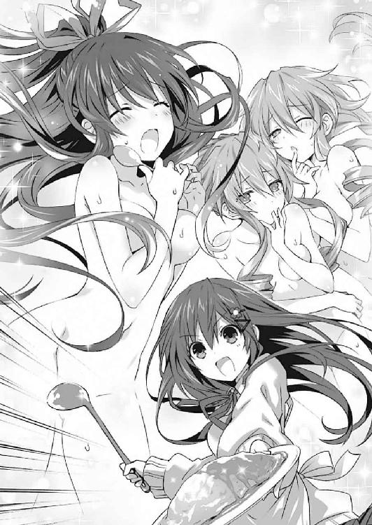
「ほしい......士織の、濃いの」
「わ、わかった！ わかったから、静かにしててくれっ！」
と、そこで気づく。
周囲にいた生徒たちが、物欲しそうにチラチラと士道の方に視線を送ってきていたのである。
「へ......？ み、皆さん......？」
士道が言うと、生徒たちが一瞬目を逸らし──しかしすぐに、再び視線を送ってくる。
士道は大きなため息を吐いた。
「......一列に並んでください」
『............!!』
瞬間、生徒たちはパァッと顔を明るくし、士道のもとに長蛇の列を作った。
◇
「お、わっ......た......」
終業のチャイムを聞きながら、士道は全身の筋肉を弛緩させ、だらー、と机に突っ伏した。
とはいえそれを責めることのできる者はいないだろう。士道はようやく、士織ちゃんとしての一日をやりおおせたのである。もう帰りのホームルームも終わり、あとは家に帰るだけだ。そうすれば、このヒラヒラしたスカートともお別れである。
「よし......帰ろう。今すぐ帰ろう可及的速やかに帰ろう」
「む......？ うむ」
士道は荷物をまとめると席を立ち、クラスメートに捕まらないうちに、十香を引き連れてそそくさと教室を出て行った。
「くく、そんなに急いでどこへ行こうという......って、ホントにどこ行くのよちょっと待ってってば！」
「制止。夕弦たちをおいていかないでください」
そして途中、廊下で八舞姉妹と合流し、靴に履き替えて外へ出る。そこでようやく、士道は安堵の息を吐いた。
「はあ......これで安心だな」
しかし──事態はそれで終わらなかった。
「あーっ！」
士道が十香と八舞姉妹を引き連れて自宅への道を歩いていると、突然聞き覚えのある綺麗な声がかけられたのである。
そちらを見やると、セーラー服を着た長身の少女が、驚いたように目を丸くしているのがわかった。
「み、美九......!?」
士道は思わずその名を呼んだ。
そう。そこにいたのは、精霊にして、日本でも指折りの人気を誇るアイドル、誘宵美九その人だったのである。
美九は何やら興奮した様子でずんずんと歩み寄ってくると、はしっと士道の手を取ってきた。
「だーりん......じゃなくて士織さんっ！ 士織さんがなんでここにっ!?」
「あ、ああ......ちょっとわけありでな......」
士道が誤魔化すように視線を泳がせると、美九はまるでかぶり付くかのような調子でぐいと手を引っ張ってきた。
「ま、まさかまた士織さんに会えるだなんて！ 感激ですぅ！ 神様は私を見捨ててなかったんですねー！ ああっ、世界は美しい！」
「そ、そんな大げさな......」
「大げさなんかじゃありませんよー！ ああっ、しかも皆さんお揃いで！ これはもうあれですね！ お茶をしていくしかないですね！ ちょうど、いいお店を見つけたんで皆さんを誘おうと思ってたんですよー」
「へ......っ!?」
美九の言葉に、士道は肩を震わせた。お茶......ということは、このまま喫茶店に向かおうということだろう。つまり......士織ちゃんのままで。
「ちょ、ちょっと待ってくれ！ せめて着替えてから......」
「そんなの駄目に決まってるじゃないですかー！ せっかく士織さんに会えたのに、このままさよならなんて悲しすぎますー！ ねー、皆さんもお茶したいですよねー？ 美味しいケーキもありますよー？」
美九が言うと、十香と八舞姉妹の耳がぴくっと動いた。
「おお、それはいいな！」
「くく......今日は供物フェスティバルであるな」
「期待。楽しみです」
「はーい！ 決定ですねー！ あ、せっかくだから四糸乃さんと琴里さんも呼びましょうかー！ 電話電話ーっと」
「お、おまえら......！」
士道は愕然とした表情を作った。それはそうだ。せっかく士道に戻れると思っていたのに、まさかの士織ちゃんタイムおかわりである。絶望するなという方が難しかった。
しかし美九はそんな士道の様子など気にもとめないで四糸乃と琴里に電話をし、待ち合わせの場所と時間を伝えると、楽しげにステップを踏みながら士道の手を引っ張ってきた。
「さあっ！ 行きましょう皆さん！ お店は駅の先にありますから、バスを使いましょうかー」
「お、おいっ！ ちょ......！」
抵抗むなしく、士道は美九に引っ張られ、最寄りのバス停までつれていかれた。
そして、なんともタイミングのよいことに、士道たちが到着するのとほぼ同時に、目的地行きのバスが到着する。
「ほーら士織さん、乗りましょうねー」
「や、やめてぇぇっ！ おうち帰るぅぅぅっ！」
士道が駄々っ子のように叫ぶも、無駄だった。半ば無理矢理バスに乗せられてしまう。
下校時刻と重なっていたためか、バスの中は非常に混み合っていた。先客の間にねじ込まれるようにして、士道はバスの半ばまで押し込まれた。
「う、うう......」
バスに乗せられてしまっては、もう抵抗しても意味がない。士道は荷馬車に揺られて市場に売りに出される子牛のような心地で小さなうめきを上げた。
と──それからどれくらいの時間が経った頃だろうか。二回ほど停留所に停まり、数名の乗客が入れ替わったところで。
「......へっ？」
士道は、妙な感覚を覚え、小さな声を発した。
今、一瞬......何かがお尻の辺りに触れた気がしたのである。
「............、い、いや、気のせいだよな......」
自分に言い聞かせるように口の中で言葉を転がし、士道は小さく咳払いをして視線を窓の外に向けた。
だが、それから数秒後。再び何かが、士道のお尻を撫でた。
「......っ!?」
士道はビクッと肩を震わせた。──今のは、明らかに、気のせいではない。
そう。満員のバスの中、乗客に紛れて、何者かが士道のお尻を触っているのである。
──痴漢だ。
「う、うそ......」
士道が顔を蒼白にしていると、痴漢の行為はさらにエスカレートしていった。そろそろとスカートの中に手を入れ、内腿の辺りを執拗に撫でてくる。
「......っ」
大声を発しようと思っても、上手く声が出なかった。恐怖と羞恥によって身体が硬直し、身動きがとれない。
「......や、やめてくださぃ......」
士道は必死に声を絞り出し、自分の後方にいるであろう何者かに懇願するように言った。
しかし、それは逆効果だったらしい。不意に何者かの息が荒くなったかと思うと、士道の臀部をまさぐる手の動きが激しくなり、その指先が、ショートパンツの裾から中に侵入してきた。
「ひ......っ!?」
予想外の事態に、士道はカタカタと歯の根を鳴らした。
「ぬ......？ どうしたのだ士織」
と、そこで隣にいた十香が、士道の様子がおかしいことに気づいたように声をかけてくる。士道は顔を真っ赤に染め、目に涙を滲ませながら、十香に囁くように言った。
「だ、誰かが......お尻、触ってる......」
「な、なんだと？」
士道が言うと、十香は目を見開き、すぐに士道の後方にいる人物の手を摑んだ。
「こら貴様、何をして──んッ!?」
が、十香は言葉を途中で止めると、怪訝そうな顔を作った。
身体の硬直が解けた士道は、十香の視線を追うように後方に目をやり──十香と同じように目を丸くした。
それはそうだ。なぜならそこにいたのは──
「お......折紙!?」
そう。先ほど教室で別れたはずの折紙だったのである。しかも、十香に摑まれていない方の手でハンディカムを構え、じっと士道の方を凝視していた。
「見つかった」
「いや......見つかった、じゃねえよ。本気で怖かったぞ......」
なぜだろうか、犯人が折紙だったことで妙に安堵してしまう自分に気づく士道だった。なんだか、感覚が麻痺してしまっている気がする。
「いい絵が撮れた」
「............」
無表情のまま言う折紙に、士道は大きなため息を吐いた。
それから十数分後。バスは目的の場所に到着した。乗客の間をすり抜けて、順に外に出て行く。
「ふう......で、美九。その喫茶店ってのはどこにあるんだ？」
「こっちですよー。でも......ふふっ」
士道が言うと、美九が楽しげに微笑んだ。
「な、なんだよ」
「いえー、最初は嫌がってたのに、乗り気になってくれたんですねー」
「......逃げられないってわかったから、早く済ませたいだけだっての」
半眼でぼやくように言う。すると美九はまたも「うふふー」と笑みを浮かべた。
と、そんな美九に、八舞姉妹が腕組みしながら言う。
「ふん、我らに窮屈な思いをさせたのだ。尋常な味の菓子では納得せぬぞ」
「首肯。そのときは誘宵美九のおすすめは大したことないと吹聴します」
「ふっふー、安心してください。味は保証しますよー」
でも、と美九が続けた。
「そのお店、最近テレビで紹介されちゃったみたいで、すぐに行列できちゃうんですよねー。今は下校時刻ですし、急がないと入れなくなっちゃうかもです」
「ぬ、それは困るぞ。早く行こう！」
十香が急かすように言う。が、美九は小さく首を振った。
「その前に、四糸乃さんと琴里さんを待ち合わせ場所まで迎えに行かないといけないんですよー。失敗しましたねー。もうちょっと待ち合わせ時間を早めにしておけばよかったです」
美九が、街頭の時計を見やりながらぼやく。そんな様子を見て、士道は肩をすくめてから声を上げた。
「じゃあ、おまえらは先に行っててくれよ。俺が二人を迎えに行くからさ」
「えー？ そんなこと言って、そのまま逃げちゃうつもりじゃないですか、士織さーん」
美九が疑わしげな視線を寄越してくる。士道は額に汗を滲ませた。
「に、逃げねえって......」
「うふふ、冗談ですよー。じゃあ、お願いしていいですか、士織さん。待ち合わせ場所は向こうの百貨店前の噴水、お店はここからまっすぐいったところにある、『プルミエール』ってところです」
「ああ、わかった。じゃあ、またあとでな」
士道が小さく手を振ると、美九と夕弦が同じように手を振り、十香が元気よくブンブンと腕を振り、耶俱矢がキザったらしく指を二本立てて、「アディオス」というように掲げてみせた。
と、士道はそこで、折紙が皆に背を向けたことに気づいた。
「ん......？ 折紙、おまえは行かないのか？」
「少し、準備がある。あとで合流する」
「......そ、そうか......」
準備、という言葉にそこはかとない不安を覚えた士道だったが、深く追及しても誰も幸せにならないであろうことは容易に知れた。引きつった笑みを浮かべながら、すたすたと歩いて行く折紙の背を見送る。
「さて......じゃあ、四糸乃と琴里を迎えに行くか」
士道はスカートの裾を気にしながら、待ち合わせ場所に歩いて行った。ほどなくして、指定された大きな噴水が見えてくる。
「ええと、二人は......っと」
美九に呼び出されているであろう二人の姿を探し、きょろきょろと辺りを見回す。すると、噴水の前に一人の少女の姿を発見した。
キャスケット帽を被った、小柄な少女である。まるで蒼玉のような美しい双眸と、左手につけたウサギのパペットが印象的だった。四糸乃。十香たちと同じく、かつて士道がその霊力を封印した精霊である。
が──四糸乃の姿を認めるのと同時に、士道は異常に気づいた。四糸乃が、三名ほどの男たちに話しかけられ、困ったように顔をうつむけていたのである。
しかもどうやら、道を訊いているとか、そういうわけではないらしい。男たちがしつこく四糸乃を遊びに誘っている。俗に言う......ナンパというやつだろうか。
「おいおい......マジかよ」
士道は思わず眉をひそめた。確かに四糸乃は可愛らしい容貌をしてはいるが......見た目は中学生くらいである。何とも節操のない男たちだった。琴里がいてくれれば上手く追っ払ってくれたのだろうが......どうやらまだ待ち合わせ場所には来ていないようだった。
さすがにこのまま放っておくわけにもいかない。士道は意を決すると、四糸乃と男たちの間に割って入っていった。
「......はい！ ちょっとすいません！」
すると、四糸乃と左手のパペット『よしのん』が、驚いたように声を上げた。
「あ......！」
『士道くん......じゃなくて、士織ちゃん！』
「おう、四糸乃、よしのん。遅れてごめんな」
士道は二人を安心させるように笑みを向けたのち、それまで四糸乃に絡んでいた男たちに視線をやった。
「......というわけで、この子、私と待ち合わせしてたんです。すいませんけど──」
と、士道が言いかけたところで、男たちは顔を見合わせ、肩をすくめてきた。
「いやいや、それはないんじゃないのー？」
「そうそう、こっちをここまでその気にさせといてさよならってのはあんまりだよねー」
「あ、そうだ、じゃあ君も一緒に遊ぼうよ。ね、それならいーじゃん。はい、けってーい！」
なんて言って、男が馴れ馴れしく士道の肩に触れてくる。
士道は顔をしかめた。どうやら、話の通じる相手ではないらしい。
「......失礼します！」
士道は男の手を払いのけると、四糸乃の手を取ってその場を去ろうとした。
だが。
「おい、ちょっと待てよ」
そんな士道の態度が気に障ったのか、今し方手を払われた男が、士道の腕を強く摑んできた。
「ぐ......」
「し、士織さん......！」
四糸乃の方をちらと見る。ひどく怯えている様子である。『よしのん』がいなければ、精神状態が不安定になり、霊力が逆流してしまっていたかもしれない。
今は、この男たちと四糸乃を引き離すのが先決である。そう考えて、士道は四糸乃の耳に顔を近づけ、小声で言った。
「この先の『プルミエール』って店にみんないる。先に行っててくれ」
「え、で、でも......」
「いいから、な？ 俺もすぐ行くから」
そう言って、四糸乃の背中を押す。四糸乃は一瞬心配そうに士道を見たが、何かを決意するように唇をきゅっと引き結び、道を走っていった。
「あーあ、いっちゃった」
「もったいなーい」
「ま、いいじゃん。もっといい子見つかったしさ」
男たちはそう言うと、士道を取り囲むように周囲を固めてきた。
「さ、じゃあ行こうか」
「逃げてもいいけど、そしたらさっきの子追いかけなきゃいけないなー」
言って、士道の腕を引っ張り、半ば強制的に道を進ませてくる。
「く......」
士道は、抵抗むなしく、大通りを抜け、人気のない路地裏に連れ込まれてしまった。
「さて......じゃあ、どーしよっかね」
男の一人が言うと、残る男二人がニッと唇の端を歪めた。
「どーするって、なあ？」
「決まってるよな、なあ？」
言って、好色な笑みを士道に向けてきた。
こうも露骨な態度を取られれば、如何に士道でも、自分が貞操の危機に晒されているであろうことは察しがついた。たらりと一すじ、汗が頰を伝う。
しかし、士道にはまだ奥の手があった。一瞬で彼らの戦意を喪失させることができるであろう、必殺の一手が。
「盛り上がってるところ悪いけど、あんたたちの思い通りにはいかないと思うぞ」
「あ？」
「残念だけど──」
士道は細く息を吐くと、のどに貼っていた変声器をべりっと剝がした。
「俺、男だから」
そして、男の──士道の声でそう言う。瞬間、男たちが顔を驚愕の色に染めた。
「な......っ!? ま、マジかよ......」
「男!? その顔で!?」
「おいおい......噓だろ......」
と、信じられないものを見たかのような表情を作り、何やら三人で言葉を交わし合う。
士道はやれやれと肩をすくめた。これで、彼らには士道を捕まえておく意味がなくなったはずである。
だが──
「......ど、どうよ、おまえら」
「ど、どうって......なあ？」
「そ、そうだよ......なあ？」
男たちは、こくりとうなずき合うと、一斉にビッと親指を立ててきた。
『可愛いから......アリ!!』
「な......ッ!?」
士道は、思わず上擦った声を上げた。
「おッ、おまえら、正気か!? しっかりしろ！ 生物学的におかしいだろ!?」
「いや......俺ノーマルのはずなんだけど......なんか君はイケそうな気がする！」
「そうそう......むしろただの女より不思議なエロさがあるっていうか......」
「男は度胸。なんでも試してみるもんさ......」
などと言って、男たちが息を荒くし、士道ににじり寄ってくる。
「ひ......っ!?」
士道は、今度こそ本当に身の危険を感じ、身を竦ませた。
しかし──その瞬間。
「............」
士道たちのいる路地裏に、足音もなく一人の少年が現れた。
全身黒ずくめの格好をした、小柄な少年である。帽子を目深に被っているため表情は窺い知れなかったが、その落ち着き払った佇まいが、彼のただならぬ素性を暗に示していた。
「あ......」
士道の視線で、男たちもようやく少年の存在に気づいたのだろう。一拍遅れて、後方を振り返る。
──だが、遅い。男たちが振り向いた瞬間、少年は地面を蹴り、一番近くにいた男の顎を爪先で蹴り上げた。男の頭がぐりんと揺れ、声もなく昏倒する。
「な......っ!?」
「だ、誰だおめぇ！」
残った男たちの狼狽が路地裏に響き渡る。
しかし、少年は動じることもなく姿勢を低くすると、先ほどと同じように男たちに蹴りを見舞い、気絶させてしまった。
時間にしてわずか一〇秒。恐ろしいほどに鮮やかな手並みだった。
「......っ！」
呆然とその様子を見ていた士道だったが、数秒おいてハッと肩を揺らす。突然のことに理解が追いつかなかったが、謎の少年が現れたこと、そして彼に助けられたことがようやくわかった。慌てて変声器をのどに貼り直し、声を上げる。
「あ、あの......ありがとうございます。助かりました」
「礼には及ばない」
少年は、静かな口調でそう言った。
「......ん？」
が......そこで士道は眉をひそめた。その声に、聞き覚えがあるような気がしたのである。
「ま、まさか......おまえ」
「危ないところだった」
士道が啞然とした表情を作りながら少年を指さすと、少年は目深に被っていたキャップを脱いでみせた。
「お、折紙......!?」
そう。そこにいたのは、髪を引っ詰めにした鳶一折紙嬢その人だった。
「ど、どうしたんだ、その格好......」
人のことを言えるような格好ではないのだが、士道は問わずにはいられなかった。すると、折紙が当然というように首肯してくる。
「今の私は折紙ではない。──鳶一、折遠。折紙の従兄」
「は......はぁっ!?」
「今の私なら、士織を受け入れることができる」
言って、折紙が士道にぴたりと身を寄せてくる。どうやら、準備とはこのことだったらしい。
「ちょ、ちょっと待てって！ どういうことだよ!?」
「今日一日で、あなたの決意はわかった。士道が士織として生きていこうというのなら、私もそれを支持する」
「誤解だ！ っていうかどさくさに紛れて服の中に手ぇ入れないで!?」
「大丈夫。私なら士織を満足させることができる」
折紙が真顔で、ずいと顔を寄せてくる。これでは、ネコをライオンが倒したようなものである。ネコに襲われていたネズミである士道はひぃぃ、と情けない声を上げて身をよじった。
と、そこに、またも聞き覚えのある声が響いてくる。
「待ちなさい！ そこまでよ！」
「貴様が士織を連れて行ったという男だな!?」
声を上げたのは、琴里と十香のようだった。見やると、その後ろに四糸乃や八舞姉妹、美九の姿も見受けられる。どうやら、四糸乃が皆を呼んできてくれたらしい。琴里も途中で合流したようだ。
だが、精霊たちは士織に言い寄る『男』の姿を見て、顔を驚愕の色に染めた。
「な......！」
「鳶一......折紙!?」
「............」
折紙は十香たちの登場に一瞬動きを止めたが、すぐにまた士道の服をまさぐり始めた。
「ちょっと待て！ 何をしているのだ貴様っ！」
「何平然と続けてるのよっ！」
「い、いけないと......思います......っ」
「かか、一人だけで楽しむとは無礼な奴よ！」
「首肯。夕弦たちも混ぜてください」
「あーん、私も男装して士織さんにイケナイことしたいですー！」
なんて叫びながら、精霊たちが路地裏に押し寄せてきた。
◇
「......すいませんでした」
それからおよそ二時間後。自宅に戻りようやく士織ちゃんモードからいつもの服装に着替えた士道は、琴里に深々と頭を下げた。
「な、何よいきなり......」
「......今日一日で、女の子がどれだけ大変かわかりました身に染みました。もう二度と舐めたこと言わないので勘弁してください」
士道がつらつらと謝罪の言葉を述べると、琴里はようやく得心がいったようにフンと鼻を鳴らした。
「わかればいいわ。......今日のことはこっちにも反省点があるし。その......何もなくてよかったわ」
言って、琴里が気まずげに視線を逸らす。士道は顔を上げると、小さく首を横に振った。
「いや、俺が軽率だったんだ。──それより、ごめんな、琴里」
「？ 何がよ。それならさっき──」
「あー......そっちじゃなくてだな。......その、なんだ、昨日の服、似合ってたぞ」
「な......っ！」
士道が言うと、琴里は顔をボンッ！ と赤くした。
「なっ、何よそれ！ 別に私はそういうつもりじゃ......！」
「ああ......俺が言うのを忘れてただけだ。気にしないでくれ」
「ふ......ふんっ！ 当然よ。でも......何よ、......ありがと」
「おう」
士道が小さくうなずくと、琴里はぷいと顔を背け、ソファに深々と腰掛けてしまった。
「そ、それより、夕飯の準備しなくていいの？」
「ああ、そうだな。ぼちぼち始めるか」
と、士道が頰を緩ませながら伸びをすると、瞬間、ポケットの中にしまっていた携帯電話が振動し始めた。
「ん......？」
画面を見やると、そこに『殿町宏人』の名が表示されていることがわかる。同じクラスに在籍する、士道の友人である。
「──もしもし？ 殿町か？」
『おお、五河！ 体調は大丈夫なのか？ なんかインフルエンザで熱が五六度あるって聞いたけど......』
「おいちょっと待て誰に聞いたそれ。どこの群馬県だ」
士道が額に汗を滲ませながら問うも、殿町はあっけらかんとした声を響かせてくるのみだった。
『誰だったかな？ まあ、そんなことはどうでもいいんだよ。それより五河、今日特別聴講にきた女の子、士織ちゃん、おまえの従妹なんだって？ ってことは連絡先知ってるよな？』
「......そりゃ知ってるが、教えねえぞ」
士道の言葉に、殿町は『はぐ......っ』と苦しげにうめいた。
『べ、別にそれが目的だったわけじゃ......ちょっとはあるけど......ま、まあともかく！ それなら、おまえから士織ちゃんに伝えてあげてくれ！ すごいことになってるぜ!?』
「すごいこと......？ 一体何だよ」
『いいから、今すぐネット開いて、「誘宵美九」で検索かけてみ！ 新着記事でな！ マジで驚くから！』
「はあ......？」
士道は殿町の言っている意味がわからず眉根を寄せたが、その後も殿町がしつこく繰り返すものだから、わかったわかったと生返事をして電話を切った。
「ったく......何だってんだ？」
どうせ大したことではないだろうが、なんとなく気になって、携帯電話でインターネットに接続し、『誘宵美九』で検索をかける。すると──
「な......ッ!?」
士道は思わず息を詰まらせた。
しかしそれも当然だ。検索の結果、一番上に出てきたのは、何者かが撮ったと思しき美九のプライベート写真だったのだが......その隣に、ばっちり士織ちゃんモードの士道が写り込んでいたのである。
「い......ッ、いつの間に......!?」
目を泳がせながら、震える指先で情報の出所を探る。
どうやら、今日偶然美九を目撃したファンが勝手に写真を撮り、一言の呟きとともにとあるソーシャル・ネットワーキング・サービスに画像をアップしたのが元らしい。それが、わずか数時間で世界中に拡散され、ニュースサイトにも捕捉されてしまったようだった。
しかも、悪夢はそれだけではない。
その記事に寄せられたコメントの多くは、美九に向けられたものだったのだが......それに負けないくらい、隣に写る謎の少女に言及したものが多く見受けられたのである。
『隣の子誰？』『美九たんの友だち？』『めっちゃかわいい』『どう見てもモデルかアイドルだろ』『見たことないなー』『どこの事務所？』エトセトラエトセトラ......
ついには、士織の部分だけ切り出された画像が加工されて漫画のように吹き出しがつけられ、士織に好きな台詞を呟かせたりするコラージュ画像まで出回っていた。......だいたい、卑猥な台詞を言わされていた。もうちょっとしたネットアイドル状態である。
「な......なんだ......こりゃあ......」
「なに、どうしたのよ」
士道が身体を硬直させていると、その様子に気づいたらしい琴里が画面を覗き込んできた。そして数秒後、「ぷふ......っ」と吹き出す。
「ぷ......っ、ふふっ、大人気じゃない、士織ちゃん」
「もう......女の子は、こりごりだ......」
士道は、疲れたように息を吐いた。
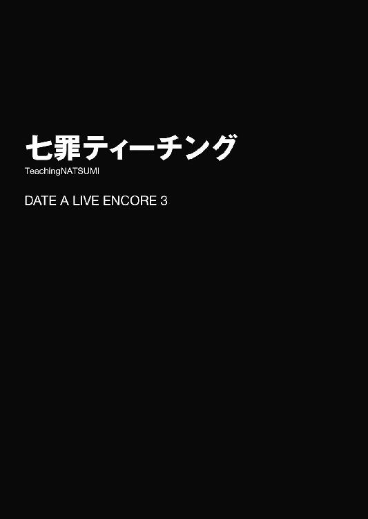
「皆さん、聞いてください」
とある日のホームルーム。愛嬌のある童顔を精一杯険しくしながら、来禅高校二年四組担任、岡峰珠恵教諭──通称タマちゃんは教卓に手を突きながら言った。
「な、何かあったんですか？」
いつも朗らかのんびりタマちゃんのただならぬ様子に、士道は訝しげな声を上げた。他の生徒たちも、不思議そうな視線をタマちゃんに送っている。
「......明日、公開授業があるのは皆さん知っていますね？」
タマちゃんの言葉に、皆がうなずく。明日の六時間目、世界史の時間は公開授業──いわゆる授業参観である。
「......その公開授業の際、天宮市教育委員会の栗生教育長が、父兄の皆さんに紛れて視察に来るそうなんです」
「教育長が......視察に？」
生徒たちはにわかにざわめきだした。士道もそれらの組織や役職のことを詳しく知っているわけではないが、偉い人が授業を見に来るということだけは何となく理解できた。
「むう......よくわからぬが、なぜそのキョーイクチョーとやらが授業を見にくるのだ？」
士道の隣に座った夜色の髪の少女──十香が首を傾げる。するとそれに答えるように、タマちゃんが乾いた笑いを浮かべる。
「......なんでも、うちの生徒のおかしな噂を耳にしたとかで」
「おかしな噂？」
「ええ......なんでも来禅の男子生徒が、教室でクラスメートたちの衣服を剝ぎ取っていったとか、自宅を『僕だけの動物園』に改築して、年端もいかない女の子たちに破廉恥な格好を強要していたとか......」
「ぶ......ッ!?」
士道は思わず吹き出した。それと同時、クラス中からじとーっとした視線が士道の方に向けられてくる。粘っこい汗が士道の背中を濡らした。
その嫌な緊張を打ち破るように、タマちゃんが言葉を続けてくる。
「もしもそんな噂が本当だった場合、特別更生委員を派遣する向きもあるそうです......」
タマちゃんが言うと、亜衣麻衣美衣トリオが難しげな顔を作った。
「な、何それ。随分物々しい名前ね」
「特別更生委員......まさか！」
「し、知っているのか麻衣！」
美衣が芝居がかった調子で驚いてみせる。麻衣が「ウム、聞いたことがある」とうなずいてから続けた。
「ほら、荒上工業高校ってあるじゃない。二年前、素行の悪さを見かねた教育委員会があそこに派遣したのが、件の特別更生委員って話よ」
麻衣の言葉に、クラスメートたちが顔を戦慄の色に染める。
「そ、そういえばあそこ、最近は随分大人しくなったわね......」
「いや大人しいなんてもんじゃねえよ！ 半年で監獄、一年で禅寺みたいになっちまったって話だ！」
「生徒は全員丸坊主で生気の抜かれた顔してるってよ......」
「噂では、洗脳がどうとか......」
「いや、ロボトミー手術で......」
次々と上がる情報に、生徒たちがゴクリと息を吞む。
「と、とにかく！ 普通の授業をしていれば何も問題はないはずです！ 皆さん、明日はどうか協力、よろしくお願いします......！」
タマちゃんが深々と頭を下げる。その姿に、生徒たちから次々と応援の声が飛んだ。
特別更生委員などが派遣されてくるのはごめんであるし、何より、皆タマちゃんに担任を外れて欲しくないのだ。二年四組は、クラス始まって以来の一致団結ぶりを見せていた。
まあ、そんな中士道には時折冷徹な視線が向けられていたのだが......士道はとりあえず気にしないことにした。
◇
「......むー......」
七罪は低い声でうなりを上げると、ただでさえつまらなそうに歪んでいた眉をさらにひそめた。
しかしそれも無理からぬことではあった。彼女の頭の中には今、一つの悩みが渦を巻いていたのである。
とはいえ別に、丹念に梳いても癖が取り切れない髪質や、見るからに不健康そうなやせっぽちの体軀、普通にしているだけなのに「あ......ごめん、つまらなかったよね」と言われてしまうようなナチュラル不機嫌フェイスのことについて悩んでいるわけではない。
......いやまあ、それも悩みには違いないのだが、それらは七罪が恒常的に抱えている、いわばパッシブ悩みであり、今七罪を悩ませているのは、もっと能動的なアクティブ悩みであったのだ。
「............」
座っていたソファの上で身体の向きを変え、背もたれに腹をつけるような格好になりながら、ジッとキッチンの方を見やる。
そこには、エプロンを着け、夕食の準備に勤しむ士道の姿があった。
この家の主であり、七罪の恩人。そして──今まさに七罪を悩ませている張本人だ。
そう。七罪は、以前士道に助けて貰った恩を、どう返そうか悩んでいたのである。
無論、いろいろと試してみようとはした。何か贈り物をしてみようとしたり、士道がいない間に部屋の掃除をしてみようとしたり、士道の代わりに食事の用意をしてみようとしたり......といった具合に。だが、それらは全て未遂に終わっていたのだった。
考えてもみてほしい。七罪の破滅的な美的センスで選んだ贈り物を喜んでくれる人間など現在の人類文化圏にいるはずがないし、七罪という存在自体が汚物のような生命体が許可なく掃除なんてしようものなら、かえって部屋中が拭いようのない穢れに汚染されてしまうことになる。いわんや料理など以ての外だ。七罪の手でこねくり回した物体を口に入れたいと思うのなんて、一〇日間獲物にありつけなかったハイエナくらいのものだろう。
「......七罪さん？」
「ひゃッ!?」
と、不意に背中に声をかけられ、七罪は素っ頓狂な声を発して、飛び上がるように身体の向きを直した。
見やると、向かいのソファに腰掛けていた少女──四糸乃が、左手のパペット『よしのん』と一緒に小首を傾げていることがわかる。
七罪とは違うふわふわの髪に、七罪とは違う美しい双眸、七罪とは違う愛らしい貌を備えた、天使のような少女である。
しかも、綺麗なのは見目だけではない。心は澄んだ海のように美しく、その所作、言葉の端々にまで、相手への思いやりが見て取れるのだ。七罪のような、フンコロガシにしか必要とされない物体にすら優しく接してくれるところからも、彼女の慈母の如き愛情が理解できるだろう。天使の「ような」っていうかもう天使そのものなんじゃないかな。四糸乃エンジェルでいいんじゃないかな。
『どしたの七罪ちゃーん。なんだかお顔がおかしなことになってるよー？』
『よしのん』が首を傾げてくる。七罪はビクッと肩を震わせた。
「あ、ああ......ごめん。なんでもないの。気にしないで......」
「そうなんですか......？ でも──」
と、四糸乃が言った瞬間、キッチンの方から士道の声が聞こえてきた。
「おーい、四糸乃、七罪。そろそろできるから、そっちのテーブル片付けておいてくれないか？ 十香たちが来たら飯にしよう」
「......！ ほ、ほら四糸乃。片付けだって！」
「あ......は、はい」
四糸乃はこくりとうなずくと、テーブルの上に置かれていた雑誌や新聞などを纏め始めた。七罪もそれを手伝うように、散らばっていたプリント類を束ね始める。
「ん......？」
と。そこで七罪は、一番上になっていたプリントに書かれていた文面に視線を落とし、小さな声を発した。
「公開授業の......お知らせ......？」
◇
その日の夜。七罪はマンションの自室を抜け出し、四糸乃の部屋を訪れた。
チャイムを鳴らすと、ほどなくしてドアが開き、可愛らしいパジャマに身を包んだ四糸乃と『よしのん』が姿を現す。お風呂上がりであったのだろう。頰がほんのりと赤く染まり、身体から微かに湯気が立ち上っていた。
「どうしたんですか、七罪さん。こんな時間に......」
「あ......っ、ご、ごめん......ちょっと、話......あったんだけど......」
七罪は言いながら、目を逸らした。
「......そうだよね。非常識だよね。ていうかこんな時間に私の顔見せるなんて、安眠妨害甚だしいよね。うん、ごめんなさい。しにます」
「な、七罪さん......!?」
七罪が扉の前から去ろうとすると、四糸乃が慌てた様子で七罪の手を摑んできた。
「そんなこと、ありません......その、七罪さんが訪ねてきてくれて、嬉しいです」
「四糸乃ぉ......」
七罪は四糸乃の愛溢れる言葉に涙を浮かべながら振り向いた。もはや天使とかそういう範疇で括れるような存在ではない。女神だ。四糸乃ゴッデスだ。嗚呼、世界は斯くも美しい。
「あの、よければ上がっていってください」
「う、うん......ありがとう」
七罪は小さくうなずくと、靴を脱いで四糸乃の部屋に上がっていった。ちなみに、聖域を穢さないために持参した新品の靴下に穿き替えてから上がろうと思ったが、四糸乃に止められたのでやめておいた。
「それで......何かご用ですか？」
七罪をリビングに迎え入れたのち、ソファに座った四糸乃が言ってくる。七罪はその向かいに、肩をすぼませ膝に手をのせて座りながら、掠れるような声を絞り出した。
「あ、あの......相談なんだけどさ」
「はい、なんですか？」
「その......明日、暇？」
「明日......ですか？ はい、特に予定はありませんけど......」
『あっれー？ もしかしてデートのお誘いー？ きゃー！ 七罪ちゃんたらダイターン！』
「あっ、いや、そういうわけじゃ......」
七罪が額に汗を滲ませながら言うと、四糸乃が「こらっ」と『よしのん』を制した。
「明日......何があるんですか？」
「あ、うん......その、もしよかったら、私と......士道の学校にいかない？」
「え？」
突然の七罪の提案に、四糸乃がきょとんと目を丸くする。
「士道さんの学校......ですか？」
『一体何しに行くのー？』
『よしのん』が身体を捻りながら問うてくる。七罪は微かに目を泳がせながら答えた。
「......ほ、ほら、明日士道の学校、公開授業じゃない。でも、士道って今両親が海外出張中でしょ？ 今までも家を空けてることが多くて、授業参観に親が来たことほとんどないって言ってたし......だから、その、私と四糸乃で、授業参観の思い出を作ってあげようかなあ......なんて」
そう。それこそが、七罪が考えた士道への恩返し法だった。
「私と七罪さんで......？」
四糸乃はしばしの間、七罪が何を言っているのかわからないといった様子で首を捻っていたが、すぐにその言葉の意図するところに気づいたのだろう。ハッと目を丸くしてきた。
「それって......もしかして、私と七罪さんが、士道さんのご両親のふりをするっていうことですか......？」
四糸乃の言葉に、七罪はうんうんとうなずいた。
普通に考えれば、そんなことは不可能だ。何しろ七罪と四糸乃はともに、どう見ても士道よりも年下である。
しかし──七罪の力があれば話は別だった。
七罪の天使〈贋造魔女〉は、物体を別の形に作り替える力を持っている。そして、七罪は霊力を士道に封印されている今も、自ら精神を不安定にすることによって、ある程度ではあるがその力を用いることができるのだった。
とはいえ、七罪一人を父母役二人に分解することはできない。そこで、四糸乃に手伝いを頼みにきたのである。
「ど......どう......かな。あ、あの、もちろん......気が進まなかったら断ってくれていいからね？」
七罪がビクビクしながら言うと、四糸乃はふるふると首を振った。
「そんなことありません。とても......素敵だと、思います。是非、協力させてください」
「四糸乃......！」
七罪は、パァッと顔を明るくすると、四糸乃の手を取った。
◇
翌日。七罪と四糸乃は士道の通う来禅高校への道を歩いていた。今はまだ二人とも、もとの姿のままである。
手はずは昨日のうちに確認してあった。来禅高校に至ったら、人気のない場所で能力を発現、四糸乃がお父さんに、七罪がお母さんに化けて教室へと赴く。
士道の両親の写真が手に入らなかったため、デザインは七罪オリジナルになってしまうが......授業が始まる前に士道の両親を名乗っておけば、雰囲気くらいは味わって貰えるだろう。
そんなことを考えながら歩みを進めていくと、ほどなくして、見覚えのある校舎が見えてきた。
「さ......じゃあ四糸乃、そろそろ変身しましょうか」
「は、はい......なんだか、緊張します」
四糸乃が微かに強ばった表情でこくりとうなずいてくる。七罪はそんな四糸乃とともに、人気のない路地裏に入り込んだ。
そして、すうっと息を吸い、封印された霊力を一部取り戻す準備に取りかかる。
基本的に精霊は、精神が不安定になると霊力が逆流してしまう。七罪は、その精神の安定感が全精霊中最も低いために、頭の中でネガティブな妄想を繰り広げるだけで、最低限の変身能力を取り戻すことができるのだ。
......小学校の教室。響く先生の声。はーい、じゃあ好きな子同士で班を作ってー。次々集まっているクラスメートたち。そんな中、誰に声をかけるでも、かけられるでもなく一人あぶれる七罪。先生が言う。誰か七罪ちゃん入れてあげて。ざわつくクラス。やがて一人が声をあげる。それじゃあ好きな子同士にならないと思いまーす......
「あ、あ、ああああああ......っ！」
「七罪さん......っ！」
と。七罪のストレスが頂点に達しようとした瞬間、四糸乃が七罪の肩を揺すってきた。自然、集中が途切れてしまう。
「え？ な、何、どうしたの？」
「待ってください。今は──」
言いながら、開けた道の方に目をやる。そこには今、先ほどまではいなかった、眼鏡をかけた小柄な女性が歩いていた。
「──っと」
今変身能力などを披露していたら大騒ぎになってしまっていただろう。七罪は妄想を中断すると、女性が通り過ぎるまでジッと待った。
だが、そこで。
ふらふらと歩いていた女性が、不意にその場に倒れ込んでしまった。
「は......!?」
「え......っ」
七罪と四糸乃は同時に息を詰まらせると、慌てて女性のもとに駆け寄った。
「ちょ、ちょっと、どうしたのよ......」
「大丈夫......ですか？」
二人がそう言いながら女性を仰向けにすると、女性はぼうっとした表情でパクパクと口を動かした。
「す、すいません......昨日準備を頑張り過ぎちゃって......体調を......」
「体調って......」
七罪は眉をひそめながら女性の額に手を当ててみた。凄い高熱である。
「......こんな状態で外に出るなんて無茶よ......大人しく家に帰って養生してなさい」
「そうはいかないんです......今日は公開授業なので......私がいないと......」
「えっ？」
七罪が目を見開くと、女性はそれきり何も言わなくなってしまった。どうやら、気絶してしまったらしい。
「あ、ちょ、ちょっと......！」
ぐったりとした女性の身体を支えてやる。
「仕方ないわね......どこか休めるところに連れていってあげないと......」
「そうですね......でも、今、公開授業って......」
と、そこで、四糸乃が何かを思い出したように「あっ」と言った。
「この人......確か、士道さんたちのクラスの先生です......！」
「──あ！ そういえば......」
言われて、七罪は思い出した。以前士道に化けていろいろと悪戯をしたとき、彼女を見かけた気がする。
「ってことは......この人がダウンしちゃうと、授業参観は......」
「えっと......自習......でしょうか」
「そ、それは困る！」
七罪は裏返った声で叫んだ。そうなっては、士道に授業参観の思い出を残すことができなくなってしまう。
「で、でも、さすがにこの状態で授業をするのは無理だと思います......」
『完全に伸びちゃってるもんねー』
『よしのん』が医者のように、気絶した先生の目を開きながら言う。七罪はくっと奥歯を嚙みしめた。
「いや......まだ手はあるわ」
七罪はグッと拳を握りながら、そう言った。
◇
五時間目の授業が終わったあとの休み時間。教室はいつもとは少し違う雰囲気に包まれていた。
とはいえそれも当然だろう。何しろ、今日の六時間目は公開授業。しかもこのクラスの命運を決する重要な時間である。皆普通の授業参観とは異なる緊張の仕方をしていた。
既に教室の後方には、幾人かの生徒たちの保護者の姿が見て取れる。そこに見知った顔を発見した生徒たちは、皆いつもよりも動作がぎこちなくなっている気がした。
「はは......なんだかんだでみんなそわそわしてるんだな」
士道はちらと後方を見やりながら苦笑した。すると隣の席に座っていた十香が、水晶のように綺麗な目を見開きながら、興味深げに話しかけてくる。
「あれがキョーイクチョーというやつか？ 随分たくさんいるのだな」
「いや、あれはみんなの保護者さんたちよ」
十香の声に返したのは、士道ではなく少女の声だった。見やると、そこにクラスのかしまし三人娘、亜衣麻衣美衣が立っていることがわかる。
「ねえねえ、十香ちゃんのおかーさんってもう来てるの？」
「あ、それすっごい興味あるわー」
「この美しさは遺伝なの？ 突然変異なの？」
三人が目を輝かせながら十香に詰め寄る。十香は困ったように「む、むう......」とうめいた。
「あー......十香の両親は仕事で来れないんだよ。な？」
「ぬ......うむ、そうなのだ」
士道が誤魔化すように言うと、十香が話を合わせるようにうなずいた。三人娘が、心底残念そうに「えぇー」とわめく。
と、そこで、十香が教室の後方を指さしながら声を発した。
「なあシドー。あれも誰かの保護者なのか？」
「......ん？」
士道は十香の指先を追うように視線を後ろにやり──そのまま一瞬身体を硬直させた。
しかしそれも当然である。何しろ、フォーマルな装いの保護者たちの中に、黒いローブに頭の先端がとんがった覆面という、怪しさ満点の格好をした人物が紛れ込んでいたのだから。
「え、えーと......」
と、士道が返答に困っていると、突然、亜衣が声を上げた。
「おっ、お父さん......っ！」
「へッ!?」
予想外の言葉に、思わず目を丸くする。亜衣はハッとした様子で顔を赤くすると、のしのしとその怪しげな人物のもとに歩いていくと、ひそめた声で話しかけ始めた。
「......ちょっと！ その格好で来ないでって言ったでしょ！」
「何を言っているんだ亜衣。これは我が結社の由緒正しい......」
「そういうことじゃないの！ 早く脱いできてよっ！ いつもアレだけど今日ばっかりは本気でシャレにならないんだから！」
そんな様子を見ながら、麻衣と美衣が乾いた笑みを浮かべる。
「あー......はは、そっか、亜衣のお父さん、黒魔術結社の偉い人だったっけ」
「素顔は普通なんだけどねー......」
「悪い人じゃないんだけど、さすがにあの格好で来るのは常識がないっていうか──」
と。そう言いかけていた麻衣が、教室に入ってきたボンデージ姿の女性を見て言葉を止めた。
「おっ、お母さん!?」
「えっ？」
士道が呆然としていると、麻衣が女性に駆け寄り、顔を真っ赤にしながら抗議の声を上げた。
「なっ、なんでその格好で来るのよ！」
「ごめんごめん。仕事帰りだったんだけど、途中で服汚しちゃって。替えがこれしかなかったのよ」
「汚れててもいいから着替えてきてぇぇぇっ！ そんなの見られたら一発アウトよっ！」
麻衣が掠れた声を上げる。それを見ながら、美衣が頰に汗を垂らした。
「あーあー、麻衣も大変ね。いくらＳＭクラブの女王様だからって、仕事とプライベートくらい分けてくれない......と......」
と。今度は美衣が、目を見開いて全身をガタガタと震わせ始めた。
見やると、教室の入り口に、長身の男が立っていることがわかる。白いスーツの上からでもわかる筋肉に、剃刀の刃のような双眸、猛禽の羽のような太い眉が特徴的だった。明らかに何人か殺していそうな顔をしていた。ついでに手にＭ16自動小銃を持っていた。
「お、叔父さん！」
美衣が慌てた様子で男に駆け寄る。そういえば美衣の叔父は、外国でヒットマンをしているとか聞いたことがあった気がした。
「な、なんでそんなもの持ってきてるのよ！」
「............」
美衣の至極もっともな指摘に、男はしかし無言だった。
「日本でアサルトライフルなんて目立ちすぎるでしょ！ プロとしての自覚が足りないんじゃないの!?」
「......いや、突っ込むとこそこかよ」
士道は思わず半眼になると、ぽりぽりと頰をかいた。......なんというか、個性的な保護者たちである。
亜衣麻衣美衣が保護者の手を取り、教室から去っていく。そして数分後、亜衣と麻衣が普通の格好に着替えた親を、美衣がアサルトライフルをどこかに置いてきた叔父を連れてきた。......だがよく見ると、先ほどは閉じられていた上着の前が開いていた。まるで、左脇に吊っている『何か』を即座に取り出しやすくするかのように。
「............」
「む......っ。シドー、シドー！」
と、士道が頰に汗を垂らしていると、十香が驚いたように目を見開き、士道の肩を叩いてきた。
「ん、どうしたんだ十香」
「あれは......あれも保護者なのか？」
言って、またも教室の後方を指さす。どうやら、また誰かが教室に入ってきたらしい。
士道は、さすがにあの三人のあとではどんな保護者が来ても驚かないと思いながら後方を振り向き──身体を硬直させた。
「は......っ？」
そこにいたのは、一人の美しい女性だった。緩くウェーブのかかった長い髪に、蒼玉のような瞳。肉感的な身体のラインは、教室にいた男子生徒たちの視線を釘付けにして離さなかったが、反してその所作は奥ゆかしく、貞淑な大和撫子を思わせた。
だが、もっとも特徴的なのは彼女の左手であった。そこには、漫画みたいな髭を生やし、ダブルのスーツを着たウサギのパペットが装着されていたのである。
「え......？ ど、どういう......」
士道は困惑に眉をひそめた。
間違いなく、あの女性とは面識がない。だが、彼女の左手に装着されているのは明らかに『よしのん』であった。
それに、よくよく見てみると、彼女の顔に見覚えがあるような気がしてきたのである。何というのだろうか、もしも四糸乃があのまま成長したなら、こんな女性になるのではないか......と思えるような美人さんだった。
「あ、あの......えっと......」
『ほらほら、まずあれを言わないと』
「う、うん......」
と、その女性は皆の視線をくすぐったがるように小さく身をよじったあと、何やらパペットと言葉を交わしてから、意を決するようにこくんと唾液を飲み下し、顔を上げてきた。
そして、
「......む、息子がお世話になっています。五河士道の......母です」
『そして、父です』
なんてことを、教室中に向けて宣言した。
その予想外の宣言に、教室は一瞬静まり返り──
『ええええええええええええええええええええええええええええええッ!?』
一瞬あと、凄まじい驚愕の声に包まれた。
「ちょっ、五河くんのお母さん!?」
「噓でしょ、いくらなんでも若すぎない!?」
「まさか......後妻!? 義理の母!?」
「なにそのエロい響き！ 爛れた関係しか思い浮かばないんだけど!!」
「ていうかあれお父さんなの!? 五河くん実はウサミミ遺伝子持ってんの!?」
にわかに教室がざわつき出す。
「や、いや......あの、え......っ!?」
が、士道にはそれを制止することができないでいた。単純な理由である。士道にも、一体今何が起こっているのか理解できていなかったのだ。
しかし、そのとき。騒がしくなった教室に新たな来訪者が現れ──生徒たちは一瞬で静まりかえった。
部下と思しき女性を引き連れた、初老の男性である。ピンと伸ばされた背筋と引き結ばれた唇が、彼の生真面目な気性をありありと表していた。
『............っ』
その人物の登場に、生徒たちが息を吞む。
しかしそれも無理からぬことだろう。彼の顔は、皆昨日写真で見せられていた。彼こそは天宮市教育委員会、栗生正太郎教育長その人だったのである。
「きたか、大将......」
「見せてやんよ、四組の結束を......」
「タマちゃんをクビになんてさせないんだから......」
生徒たちが、教育長に聞こえないくらいの声でひそひそと呟く。士道の母親を名乗る謎の女性への興味は尽きない様子だったが、とりあえず今はこの授業を乗り切ることが重要と考えているのだろう。......授業終了後の質問攻めを思って、今から気が重くなる士道だった。
しかし、士道とて皆と気持ちは同じだった。タマちゃんに担任を外れてなど欲しくない。しかも、今回の件は士道に遠因があると......言えなくもないのだ。謎の母の件はあとで問い詰めることにしようと心に決め、気を落ち着けるように細く息を吐きながら教卓の方を向いた。
それに合わせるようにして、辺りにチャイムが鳴り響き、教室の扉がガラッと開かれる。今日の主役、タマちゃんの登場だ。
「......へっ？」
だが。教室に入ってきた人影を見て、士道は啞然とした。
それはそうだろう。何しろそこに現れたのは、小柄な社会科教諭タマちゃんではなく、
「うふふ......授業を始めるわよ。みんな、席に着いてちょうだぁい」
なんて、やたら甘ったるい声を発した、長身の美女だったのだ。
絹のような髪。濡れた唇。そしてモデル顔負けのプロポーションを誇る二〇代中頃の女性である。第三ボタンまで開けられたブラウスからは見事なバストが今にもこぼれ落ちそうになり、深々とスリットの入ったタイトスカートからは、なまめかしい太ももが覗いていた。一応教師を意識してか、縁の細い眼鏡をかけ、片手に指示棒なぞ握っていたが、なんかもうそういうプレイ用の小物にしか見えなかった。
その、『女教師』という言葉の解釈を間違っているとしか思えない女性の登場に、教室が再び騒然となる。
が、その中で、士道は皆と種類の異なる驚きに目を見開いていた。
「な......七罪......!?」
そう。その女教師は、七罪が大人に変身した姿だったのである。その姿を目にしたことのある十香もまた、不思議そうに目を丸くしている。
四糸乃と思われる女性の登場に混乱していた脳が、さらに混乱する。一体彼女らは何をしているのだろうか。
士道がそんなことを考えていると、七罪は必要以上に身をくねらせながら教卓の上に座り、挑発的な仕草で足を組んで、「しっ」と指を一本立てた。
「はぁーい、皆さんお静かにぃ。授業を始めますよ。先生への質問は授業のア・ト・で」
そのなまめかしい仕草に、男子生徒と一部の父兄はごくりと生唾を飲み込んだ。
だが──すぐに皆ハッとして居住まいを正す。まずい。一体何が起こったのかは杳として知れなかったが、これは非常にまずい。
ちらと後方を見やる。すると、栗生教育長が不機嫌そうに眉をひそめながら、部下の女性に何かを呟いているのが見て取れた。
「............！」
その様子に、生徒たちは誰が合図をするでもなくアイ・コンタクトを取り合った。
（──ちょっと、誰よあの先生！）
（うちの先生じゃないって知らせた方がよくない？）
（でも、そうなるとタマちゃんは大事な授業すっぽかしてどこ行ったってことにならない？）
（じゃ、じゃあどうするんだよ！）
（それは......）
皆は瞬きと視線だけでおおよその意思疎通を済ませると、姿勢を正して教卓に向き直った。
そう──生徒たちは、このまま授業をやりおおすことを選択したのである。
この先生が誰なのかはわからない。どういった理由でここにいるのかもわからない。しかし、授業が始まってしまった以上それを終わらせる以外に、教育長を納得させる手立てはないのである。
授業は先生だけが作るものではない。ミットに当たる音が大きければ、ボールは剛速球に見える。生徒の反応次第ではこの先生の授業を名講義に錯覚させることもできるはずだった。
（さあ来い。どんな授業をするんだお姉さん）
（見事、模範的な生徒を演じてやるぜ！）
（タマちゃんと、私たちの安寧のために......！）
すると、七罪はそんな生徒たちの真面目な態度に満足げにうなずくと、チョークを手に取り、黒板に文字をしたためていった。
『よいこの保健体育 ～赤ちゃんはどこからくるの？～』
その文字を見て、士道をはじめとする生徒たちが一斉に凍り付いた。
（──よりにもよって性教育かよぉぉぉぉぉぉッ!?）
アイ・コンタクトを交わすまでもない。生徒全員が同じ思いでいることは容易に知れた。
ただでさえ授業参観ではやって欲しくない授業である。しかも今は、厳格な教育長の視察中。その原因は、来禅の生徒のエクストリーム不純異性交遊の噂が発端ときたものだ。これはもう地雷原を踊りながら歩くようなものである。
「......あら？」
七罪もそこで、教室の空気の変化に気づいたのだろう。チョークを置いてくるりと振り返り、教室を見回すように視線を巡らせた。
「どうしたのかしらみんな。なんか雰囲気暗いぞぉ？」
『............』
七罪は明るい声で言ったが、生徒たちは無言だった。
すると七罪はその沈黙をどう受け取ったのか、何かに気づいたようにパンと手を叩いた。
「あっ！ そうよね、ごめんなさい。先生気づかなかったわ」
言って、教室を見回す。
「せっかくの授業参観だものね。保護者の皆さんにも参加してもらいましょうか。ささ、皆さん、お子さんのところにどうぞ」
（──悪化させやがったぁぁぁッ！）
（何考えてんのこのお姉さぁぁん！）
（保護者参加型性教育とかどんな拷問んんんん!?）
生徒たちが顔を青ざめさせて脂汗をダラダラと垂らしていると、保護者たちが戸惑いを見せながらも、自分の子供のもとにやってきた。当然、士道の父母を名乗る女性とパペットは、士道の隣に歩いてくる。
「......四糸乃......だよな？」
士道は小声で問いかけた。すると、予想通りその女性がこくりとうなずいてくる。
「一体何がどうなってるんだ？ なんで七罪が......？」
「じ、実は......」
四糸乃が小さくひそめた声で、簡単に事情を説明してくる。士道は額に汗を滲ませた。
「倒れたタマちゃんの代わり......？」
「はい......、七罪さんは悪戯とかでやってるわけじゃ......」
「ああ......わかってるよ」
しかし、タイミングが最悪過ぎる。士道は教室の後方に残った栗生教育長とその部下をちらと見やった。
と、それと同時に、七罪が教育長に声をかける。
「あら、どうしたんですか？」
「いや、私は──」
「そんなこと仰らないで。遠慮なさらずにどうぞどうぞ」
「............」
七罪が教室の後方まで歩いていき、教育長の手を取って、隣に誰も立っていない生徒──十香のもとに連れてくる。
十香と士道の間に連れてこられた教育長が、困惑した様子で十香に話しかけた。
「......すまない。お邪魔するよ」
「む？ 別に構わんぞ」
よく意味がわかっていないのだろう、十香があっけらかんとした様子で返す。
「君たちの先生は、いつもああいった感じなのかい？」
「ぬ？ 何を言っているのだ？ あれは先生ではなく──」
「......！ ゆ、ユーモアのある先生でしょう？ フレンドリーで、生徒から人気があるんですよ！」
十香の言葉に被せるようにして、士道は声を上げた。教育長が、腑に落ちないといった様子で首を傾げる。
「......ふうむ」
何か言葉を発したわけではないが、教育長の心証がよくないのがはっきりとわかった。周囲の生徒たちもそれを感じ取ったのだろう、平然とした風を装いながらも、微かに眉の端が揺れていた。
（まずい......まずいってこれ......）
（このままじゃ、特別更生委員まっしぐらよ......！）
（な、何とかして立て直すんだ......！）
生徒が無言で視線を交わし合う。すると、七罪先生がとてもいい笑顔であとを続けた。
「さっ！ じゃあお父さんお母さんに、みんなをどうやって作ったのかを聞いてみましょう！」
絶望的な七罪の宣告に、生徒のみならず保護者までもがビクッと肩を震わせる。
（──もうやめてぇぇぇぇっ！）
（噓でしょもぉぉぉぉぉ！）
（聞きたくなぁぁぁぁぁぁいッ！）
生徒たちの声にならない叫びが、教室中に充満する。士道は、自分の右隣に立った教育長が、不機嫌そうに咳払いするのを聞いた。
しかし七罪はそんなことに気づいていない様子で指を一本立てると、だ・れ・に・し・よ・う・か・な、と生徒を指さし始めた。
「はいっ、じゃあまずは山吹さん、お願いします」
「ええっ!?」
亜衣が心底嫌そうな悲鳴を上げる。教育長の眉がピクリと動いた。
（亜衣！ 駄目よ！ スマイルスマイル！）
（生徒が嫌がる授業してるなんて思われたらおしまいよ！）
麻衣と美衣が目で訴えかける。亜衣は泣きそうな顔になりながらもぎこちない笑みを作った。
「やー、せ、先生に当てられるなんて嬉しいなっ！ ほ、ほらお父さん、答えてあげて」
「むう、最近の公開授業は興味深い内容を取り扱うのですね」
亜衣が言うと、先ほどまで怪しい覆面を被っていた亜衣の父君が、真剣な表情を作った。
「子供の作り方と一口に言いましても、いくつものパターンがありますが、せっかくですので亜衣を授かったときのやり方をお話ししましょう」
「............！」
亜衣がカァッと顔を赤くする。しかし父君は、なんら恥じらうことなく言葉を続けた。
「まず満月の日、鶏の血で描いた魔方陣の上に妻を寝かせます」
「ちょっと待てやゴルァ！」
亜衣が叫びを上げ、父の胸ぐらを摑んだ。が、すぐに教育長の視線に気づいたのだろう。ハッと肩を揺らし、引きつった笑みを浮かべた。
「も、もう、やだなぁお父さんたら、冗談が好きなんだからぁ。せ、先生、良かったら他の人にも聞いてみてください」
「ええ？ そうねえ......じゃあ次は、葉桜さんにお願いしようかしら」
「......っ！ こ、光栄です......」
今度は麻衣が引きつった笑みを浮かべる。拒否の許されない地獄の回答。なんだかもう怪しい新興宗教のセミナーみたいだった。
麻衣が促すと、先ほどまでボンデージ姿だった母君が話を始める。
「そうですねー、まず私と真性ド変態のゲロ豚野郎の出会いは──」
「ゲロ豚野郎？」
「あっ、すいません、夫のことです」
（──旦那かよッ!?）
生徒たちの心の突っ込みが一斉に入る。しかし母君は気にせず続けた。
「いやー、もともとうちの店の客だったんですけど、こう呼ぶと喜ぶんですよ。基本的に痛めつけられるのが好きなんで、この子作ったときも革ベルトでガチガチに縛ってやったんですけど、あの野郎私の許可もなしに──」
「せっ、先生！ もっと多角的な意見を参考にするため、他の方からも聞いてみては!?」
母君の声を遮るように麻衣が手を挙げる。
「うーん、そう？ 今のもなかなか面白そうだったんだけど......まあいいわ。じゃあ次は藤袴さん」
「！ や、あ、の、うちは両親とも忙しかったんで、今日は叔父さんが来てるんですよ！ ざ、残念だなー！」
「俺と寝た女は、もう誰も生きていない」
「シャラップ！」
美衣がピクリとも表情を変えずに言った叔父の口を塞ぐ。
そんな一連の問答を見て、教育長がピクピクと青筋を立てているのがわかった。
「君......このクラスの授業はいつもこんな感じなのかね？」
「い、いや、そのー......」
と、明らかに不機嫌そうな教育長にどう答えたものか悩んでいると、今度は七罪がニッと笑って士道に視線を寄越してきた。
「じゃあ今度は、士道くんとそのお母さんに聞いてみようかしら」
「な──」
「......っ」
七罪の言葉に、四糸乃が息を詰まらせる。
「ささ、どうぞ。赤ちゃんはどうやって作るんですか？ 息子さんに教えてあげてください。親子の協力こそ、授業参観の思い出だと思うんです」
「あ、あの......」
「お願いします」
七罪がどこか興奮した様子で言う。四糸乃は困ったように眉を八の字に歪めながらも、震える唇を開いた。
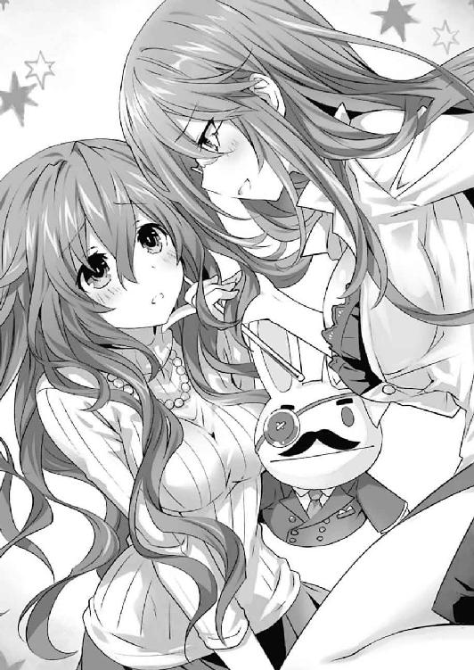
「えっと......それは......」
「はい」
「お、男の人と、女の人が......その」
「その、なんですか？」
七罪がゆったりとした動作で歩いてくると、四糸乃のあごをくいと持ち上げた。その淫靡な仕草に、思わずどきりとしてしまう。
「さあ......教えてください」
七罪が先を促すように問う。四糸乃が頰を真っ赤に染めた。
「お、おい、さすがにやりすぎなんじゃ......」
と、士道は頰に汗を垂らしながら七罪を制止しようとすると、不意に右方から声が響いた。
「......いい加減にしていただきたい！」
言うまでもない。栗生教育長だ。さすがに七罪の自由すぎる授業に堪えかねた様子で、表情を苛立ちの色に染めている。
「先ほどから見ていれば、何をしているのですか、あなたは！ その方から離れなさい！ あなたには教師としての自覚がないのですか!?」
「あらぁ？ どうかしましたか、ええと......誰のお父様でしたっけ？」
「何を惚けているのですか！ 嘆かわしい。これが現場の教師のレベルですか。そもそもなんですかその破廉恥極まりない格好は！ いいですか、教師は授業をしていればそれで終わりではないのです。生徒の規範とならねばならないのですよ！ 特に、ここ天宮市は全国的に見ても空間震被害の多い地域です。あなたはそんな調子で、いざというとき生徒を守れるのですか!?」
教育長が声を荒らげると、七罪はおどけるように半眼を作った。
「あらあら、あんまり怒鳴ると血圧上がっちゃいますよォ？」
（そこで煽らないでェェェェェェェェェッ！）
生徒たちの心の叫びがこだまする。教育長は不愉快そうに眉をひそめた。
「もう結構です！ よくわかりました。この様子では、例の噂が出るのも不思議はありません。──この件は教委に持ち帰らせていただきます。最悪の場合、特別更生委員が派遣されることになるでしょう」
「な......っ！」
士道は目を見開き、息を詰まらせた。士道だけではない。クラスの面々が一斉に絶望的な表情になる。
そんな皆の様子を感じ取ったのか、四糸乃が困った顔をしながら教育長に向く。
「あ、あの......私は大丈夫ですから......その、先生も、悪気があったわけじゃないと思うんです」
「そういう問題ではないのですよ、お母さん......ん？」
教育長が四糸乃の方に目をやり、怪訝そうな顔を作る。
「......失礼。随分お若いようですが、保護者の方ですか？」
「は、はい......あの、五河士道の......母です」
『そして、父です』
「............」
四糸乃と『よしのん』が言うと、教育長は困惑したように眉根を寄せた。
『やぁー、そんなに見つめられたら照れますよー。つんつん』
と、その無言に耐えきれなくなったのか、髭をつけた『よしのん』が教育長の鼻をつんつんとつつく。すると途端に教育長の顔が険しくなった。
「何をするのですかっ！」
言って、『よしのん』の頭を摑み、四糸乃の手から『よしのん』を取り上げる。四糸乃が「ひっ」と息を詰まらせた。
「別に人形遊びをするなとは言いません。ですが、ＴＰＯをわきまえていただきたい。初対面の人間に対して失礼だとは思わないのですか？」
「ッ、まずい......！」
士道は戦慄に顔を歪めた。教育長の言うことはいちいちもっともだったが、精霊にそのような常識を振りかざされても困る。特にこの四糸乃、大人しい性格をしているが、友達である『よしのん』と離ればなれになると、途端に精神が不安定になってしまうのだ。
「あ......あ、よ、よし......のん......」
「よ、四糸乃、落ち着──」
しかし、士道が宥めようとしたときにはもう遅かった。四糸乃が身体をふるふる震わせて目に涙を浮かべたかと思うと、次の瞬間、辺りの気温がグンと下がり、次いで校舎が軋むような音が鳴り始めた。
「な......こ、これは......！」
教育長が狼狽に満ちた声を発する。士道はくっと奥歯を嚙みしめた。この音は以前にも聞いたことがある。水道管の中を流れていた水が、四糸乃の霊力によって凍結・隆起し、校舎の建材を破壊しているのだ。
否......恐らくそれだけではない。この来禅高校の校舎は、日頃から十香や他の精霊たちによって、普通のそれよりも過酷な環境に置かれているのだ。蓄積したそれらのダメージが、一気に顕在化したのだろう。
程なくして校舎がガタガタと震えだし、壁や天井にヒビが入っていく。
「な、なんだこれ......!?」
「きゃああああっ！」
「に、逃げろっ！」
生徒や保護者たちが慌てて教室から逃げ出していく。その際、人の波に押された教育長の手から『よしのん』が転げ落ち、生徒たちに蹴られて教室の隅へ飛んでいってしまう。
「あ......っ！」
「シドー！ 四糸乃！ これは──」
十香が混乱する生徒たちに驚きながら言ってくる。士道は『よしのん』の行方を目で追いながら返した。
「十香は先に逃げててくれ！ 俺も四糸乃を落ち着かせたらすぐに追う！」
「し、しかし──」
「ほら十香ちゃんも早く！」
「これマジでシャレにならないやつだよ！」
「何なのこれ神の怒り!?」
亜衣麻衣美衣が口々に言い、十香を引っ張って教室を出ていく。
士道は人の波が去るのを待ってから『よしのん』を拾い上げると、嗚咽を漏らす四糸乃のもとに駆け寄った。
「ほ、ほら四糸乃！ よしのんだぞ！」
言いながら、四糸乃の左手に『よしのん』を装着させてやる。すると『よしのん』はシャキンと背筋を伸ばし、髭を撫でてみせた。
『どうも、父です』
「よ、よしのん......！」
四糸乃が表情を安堵に緩ませ、『よしのん』を胸に抱く。七罪の変身能力によって大きくなった胸に、『よしのん』がぎゅむと挟まれた。
『きゃー！ くーるーしーいー！』
「ご、ごめん、よしのん......」
士道はそんなやりとりにほうと息を吐いたのち、四糸乃の手を取った。もう皆避難を済ませており、教室には誰もいない。壁や天井にはいくつもの亀裂が走り、今にも崩れ落ちそうだった。
「四糸乃、とにかくここから出よう」
「は、はい......！」
四糸乃がうなずき、士道の手を握り返してくる。だが──
「うわ......っ!?」
「きゃっ！」
士道と四糸乃が教室を出ようとした瞬間。凄まじい音を立てて天井が崩落し、二人の行く手を遮ってしまった。
「はぁ......っ、はぁ......っ」
崩落する校舎から逃げ延びた栗生教育長は、校庭に出てようやく安堵の息を吐いた。
一体何が起こったのかさっぱりわからない。周囲の様子を見るに地震ではないようだが......欠陥工事か何かだろうか。
辺りには、他の教室から逃げてきたと思しき生徒や教師、保護者たちが集まり、まるで全校集会でもしているかのようである。
と、各クラスの担任が、自分のクラスの生徒やその保護者が全員揃っているか確かめるべく、点呼を始めた。先ほどあまりに酷い授業をしてみせた二年四組の担任も、周囲の教諭たちがするのを見てようやく気づいたように確認を始める。
「シドーと四糸乃がいないぞ！」
と、十香と呼ばれていた女子生徒が不意に大声を上げた。
「きっとまだ中にいるのだ！ 助けに行ってくる！」
言って、今まさに崩落せんとしている校舎に戻っていこうとする。三人の女子生徒が慌ててそれを止めた。
「だ、駄目だったら十香ちゃん！」
「そうよ、危険だってば！」
「今にも崩れそうじゃん！」
「は、離してくれ......！」
十香が三人の制止を振り払おうとする。が、そこで、その肩に手が置かれた。──四組の担任教師だ。
「私が行くわ、十香ちゃん。あなたはここで待っていて？」
「七罪......？」
十香が目を丸くすると、七罪と呼ばれた教師はパチリとウインクをしてみせた。
そして、履いていたハイヒールを脱ぎ捨て、スカートのスリットをさらに深く破り上げて足を動かしやすくしてから、校舎の中に走っていく。
「な......！」
その予想外の行動に、栗生教育長は目を見開いた。まさか、あの不良教師がそんなことを言い出すだなんて、思ってもみなかったのだ。
「だ、誰か中に入ったぞ！」
「噓!? 危ないわよ！」
「お、おい、崩れるぞ！」
誰かが叫んだかと思うと、それと同時に、ずずん......という重い音が鳴り響き、校舎の一部が陥没するように崩落した。凄まじい砂煙が上がり、辺りが騒然とする。
が、次の瞬間。
「──うわぁぁぁぁぁっ!?」
「きゃ......！」
なんて叫び声が上方から聞こえてきたかと思うと、砂煙の中から一つの影が飛び出してきた。
よくよく見ると、それが、両脇に生徒とその母親を抱えた七罪教諭であることがわかる。どうやら、崩落の瞬間、窓から飛び降りたらしい。
二人を抱えた七罪が、校舎の側にあった植え込みに着地する。すると一拍おいて、呆然とその様子を見守っていた生徒たちから一斉に拍手が巻き起こった。
「すっご！ すっご！ 何今の！」
「ちょっと、大丈夫なの!?」
口々に言いながら、生徒たちが三人のもとに集まっていく。するとそれに応ずるように、七罪教諭が立ち上がり、ニッと笑ってピースサインをしてみせた。地面にへたり込んだ二人も、どうやら大事ないらしい。
「............」
栗生教育長は、しばしの間そんな光景を見ながら考えを巡らせていたが、やがてゆっくりとした歩調で、三人のもとに歩いていった。
そして、七罪教諭の前に立ち、不機嫌そうな顔のまま口を開く。
「......なぜあのようなことをしたのです？ 危険だとは思わなかったのですか？」
「えぇ？ 何ですか今さら。みんな無事だったんだからいいじゃないですか」
七罪教諭が、肩をすくめながら返してくる。栗生は眼鏡の位置を直しながら続けた。
「いや、結果論ではそうかもしれませんがね、あなたの無謀な行動で被害が大きくなるとは考えなかったのですか？」
「──だって、今日の私は『先生』だもの。生徒を助けるのは私の仕事でしょ？」
栗生の言葉に、七罪はこともなげに答えた。
「............」
栗生はまたしばらくの間黙り込んだが、やがて髪をくしゃくしゃとかくと、ゆっくりと七罪に背を向けた。
「......やはりあなたの素行には問題があります。追って特別講習の知らせを送付します」
栗生の言葉に、生徒たちが眉をひそめる。
「ちょ、ちょっと待ってください」
「先生は五河くんたちを助けるために──」
「──講習を受け、適切な教育をここの生徒たちに施せるよう、努力してください」
しかし、栗生が続けてそういうと、生徒たちは一瞬惚けたような表情になったのち、わぁっと沸き立った。
◇
その日の放課後。
「......ごめんなさい」
「......すみません」
五河家のリビングで、もとの姿に戻った七罪は、同じくもとの姿に戻った四糸乃とともに深々と頭を下げていた。
体調不良の岡峰教諭を保健室まで運び、代理教師として公開授業をしようとしたところまではよかったのだが（いやまあそもそもその考えが間違っていたのかもしれないが）、大人バージョンに変身した七罪は、少々いろんなことをやり過ぎてしまったのである。
別に中身が変わったわけではないというのに、七罪は大人バージョンになると、生来のネガティブシンキングから解放され、奔放なお姉さんに変身してしまうのだ。そして、もとの姿に戻ったとき、大人バージョンでやらかした様々な出来事を思い返して「ああああああああああああああああああ」となるのである。
「おまえらなあ......」
士道が頰に汗を垂らしながらぽりぽりと頭をかく。七罪と四糸乃はビクッと肩を揺らした。
「ご、ごめん......でも、四糸乃は悪くないの。私が誘っただけ。怒るなら、私だけにして」
「そんな......校舎が壊れてしまったのは私の責任です......七罪さんのせいじゃありません......」
「四糸乃......！」
四糸乃の言葉に、七罪は慌てて首を振った。七罪に付き合ってくれただけの四糸乃に罰が下ってはたまらない。悪いのは四糸乃ではなく七罪なのだ。どうにか弁明をしようと、あたふたと手を動かす。
「......はあ」
しかし。そんな二人の様子を見ていた士道は、お叱りの言葉を吐くでも拳骨を落とすでもなく、ただ大きなため息を吐いた。
「俺に授業参観の思い出を作ろうとしてくれたのは嬉しいよ。ありがとうな」
「あ......う、うん......」
「でも、わざとじゃないとはいえ、みんなに迷惑をかけちまったのは感心できないな」
「ぁ、うぅ......」
言われて、二人は肩を縮こまらせる。
士道は腕組みしながらあとを続けた。
「そこで、二人には罰として──今日の夕飯の準備を手伝ってもらう」
「......！ え？」
「ゆ、夕飯......ですか？」
士道の言葉に、七罪と四糸乃は目を丸くした。
「ほら、早く準備しな。急がないと十香たちが来ちまうぜ」
「う、うん......！」
「はい......！」
七罪と四糸乃は一瞬顔を見合わせると、元気な声でそう答えた。
後日、体調を回復させた岡峰珠恵教諭のもとに、身に覚えのない感謝状と特別講習のお知らせが届き、大層彼女を困惑させることになるのだが......それはまた別の話である。
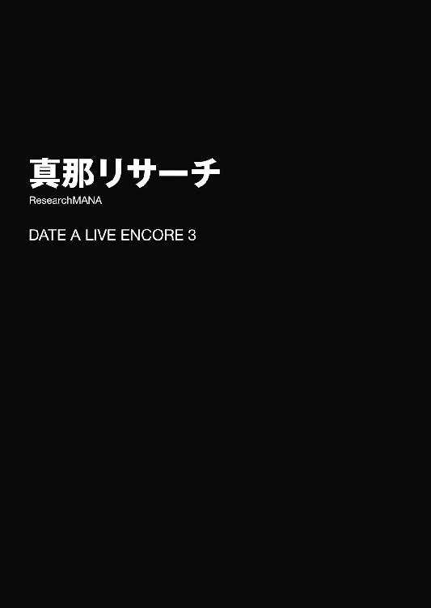
「ふーん、ふふふーん」
自分でも曲名のわからない鼻歌を歌いながら、崇宮真那は昼下がりの住宅街を歩いていた。
肩口まで伸びた髪を一つに括った、利発そうな少女である。左目の脇にぽつんと打たれた泣き黒子と、中性的な顔立ちが特徴的だった。
「やー、この辺りに来るのも久々でいやがりますねー。ま、真那も忙しい身ですけど、たまには兄様に顔見せねーと、寂しがっちゃうかもしれねーですからねー」
なんて、奇妙な敬語を操りながら、軽快に道を進んでいく。
今真那が向かっているのは、兄である五河士道の家であった。実兄であるのに苗字が違うのは、まあ、複雑な事情があるのである。
しばしの間記憶を頼りに道を進み、真那は目的の家に辿り着いた。青い屋根の二階建てである。門の表札に『五河』の二文字が記されていた。
「さぁて、と」
今日真那が家を訪ねることは、士道には知らせていない。士道が驚く様子を想像して、真那はふふっと頰を緩ませた。
が。チャイムを鳴らそうとした真那は、寸前で指を止めた。
「......あー、そういえば、琴里さんはご在宅でいやがるのでしょうか」
言いながら、額に汗を滲ませる。
琴里というのは、士道の義理の妹の名であった。確か、この家で士道と一緒に暮らしているはずだ。
とはいえ、別に真那と琴里の間に確執があるとか、苦手意識を持っているとかといったことはない。
ただ......実は今、真那は諸事情から琴里に見つかるとまずいのであった。
「琴里さんに捕まると、問答無用で病院送りにされちまいますからねえ......」
真那は誤解を受けそうな言葉を発しながら頰をかくと、辺りに人の目がないことを確認してから、チャイムを鳴らさないまま五河家の庭に忍び込んだ。そしてそのまま、リビングを覗き込むことができる中庭まで歩いていく。
外から様子を窺い、もし琴里がいたなら機会を改める。あまり誉められた手段ではないかもしれないが、まああれである。やむを得ない事情というやつである。
「ええと、兄様は......っと」
だが、植え込みに身を隠すようにしながら窓を覗き込んだ瞬間。
「な......ッ!?」
真那は、思わず目を見開いた。
「どういうことでいやがりますか......これは......」
顔を戦慄と畏怖の色に染めながら、声を震わせる。
しかしそれも無理からぬことだろう。何しろ今、真那の目の前にはにわかには信じがたい光景が広がっていたのだから。
「前より増えてるじゃねーですか......っ！」
そう。五河家のリビングには今、片手では収まらない数の人影が見受けられたのである。
まずは、士道。とはいえこれは問題ない。もとよりここは士道の家であるわけだし、真那も彼に会いにここを訪れたのだ。
そして、士道の義理の妹である琴里。彼女もまあ、よしとしておこう。なぜなら義理とはいえ、士道の妹なのだから。
だが、問題はここからである。
『おお、これは美味しいぞ！ 四糸乃も食べてみるといい！』
『あ──はい、ありがとうございます』
窓越しに、声が聞こえてくる。会話をしているのは、夜色の長い髪と水晶の瞳を備えた少女と、左手にウサギのパペットを着けた小柄な少女だった。五河家の隣のマンションに住むという十香と四糸乃だ。実は彼女らとは顔を合わせたことがあるのだが......やはり、頻繁に五河家に出入りしている様子である。
そして向かいのソファに視線を向けると、ゲームに興じる瓜二つの顔をした双子が目に入った。
『ぐっ、ぬぬぬ......！ 我に赤甲羅を当てるとは、その代償、払って貰うぞ......！』
『嘲笑。油断している方が悪いのです。とう、二発目』
『ぬわーっ!?』
などと、白熱しながらコントローラーを操作している。彼女らも、戦闘中ではあるが一度だけ見えたことがあった。確か名は、八舞耶俱矢・夕弦姉妹だ。活発そうな耶俱矢に、ダウナーな夕弦。体型の違いも含めて、隙のない布陣である。
それだけでも一大事だというのに、まだ真那のカウントは終わらない。リビングの端でじゃれ合う二人の少女に、真那はごくりと息を吞んだ。
『ああん、七罪ちゃんたら。部屋着だからって油断しちゃ駄目ですよー？ 女の子はいついかなる時も見られている自覚を持たないといけないんですからー。あ、そうだ！ このあとお時間あります？ 私がコーディネートしてあげますよー』
『ギャー！ ギャ────ッ!!』
一人は、七罪と呼ばれる見たことがない小さな少女だった。癖の強い髪に不機嫌そうな顔。何やらもう一人の少女に背中から抱きつかれているらしく、ジタバタと藻搔いている。
そしてその少女を捕まえている最後の一人こそ──今日本でも屈指の人気を誇るアイドル、誘宵美九その人であった。
真那は動悸を落ち着けるようにすうっと深呼吸をすると、両手の指を折っていった。
「一、二、三、四、五、六、七......」
七人。琴里を含めて実に七人もの少女たちが、五河家の中に犇めいていたのである。もう士道の自宅というより女子校の寮、さもなくば士道の寵愛を受けた少女たちが集められた大奥といった風情だった。
真那は自分の油断を悔いた。まさか少し目を離している隙に、こんな状況になっていたとは......！
「これは......いけねーです！ 不潔です！ 不潔オブザデッドです兄様......！」
真那はグッと拳を握った。自分でも何を言っているのかはよくわかっていなかったが、とにかくいけないのだ。そうだ。男子たる者、誠実に一人の女性を愛さねばならないのである。
それがどうだ。七人。いつの間にか、真那の敬愛する立派な兄様が、軟派な七股男になってしまっていたのである。ジュディ・オング曰く女は海なので、まさに七つの海を股に掛けた男だ。大海賊キャプテン・シドーである。
「......！ いや、それだけじゃねーです」
真那は思い直すように首を振った。とある人物のことを忘れていたのだ。
「そういえば義姉さ......いえ、鳶一一曹がいました」
真那はその名をこぼすと同時、たらっとひとすじ汗を垂らした。
そう。鳶一折紙。真那のもと同僚にして、士道の恋人（自称）。今は家の中に見当たらないようだったが、彼女を加えると、士道は実に八人もの少女に手を出していることになるのである。
八人。未知の数字に、真那は目眩を覚えた。
「い、いや......まだ決めつけちゃいけねーですね......」
挫けそうになった自分を奮い立たせるように首を振る。
まだ彼女らと士道の関係がはっきりしたわけではない。皆で仲良くしていても、あの中に一人、心に決めた人がいるのかもしれない。絵面はどう見ても酒池肉林ハーレムだが、それだけで真那の兄様が人の道に悖っていると判断するのは早計だった。
「となれば......調べてみるしかねーですね」
真那は視線を鋭くすると、ペロリと唇を舐めた。
◇
「さて......とはいったものの、一体どこから当たりましょうか......」
五河家の中庭に身を隠しながら、真那はふうむとあごに手を当てた。
調べるといっても、ただこうして見ているだけでは集められる情報に限界がある。かといって、今家の中に乗り込んでいくのもあまり上手くなかった。士道も少女たちの目がある前では発言しづらいだろうし、何より全てが終わったあと、真那が琴里に捕まってしまう可能性が高いのだ。
やはりここは、個別に直接話を聞かねばなるまい。しかし前述の理由から、琴里に真那の存在がばれてしまうのはまずい。琴里だけは監視にとどめるにしても、どうにか──
と。
『ほぉーら七罪ちゃん！ 怖くないですよぉー。私と一緒に、お洋服買いに行きましょうねー！ だーりん、ちょっと七罪ちゃんお借りしますねー』
『行かないって言ってるでしょぉぉぉ!?』
真那がそんなことを考えていると、家の中からそんな声が聞こえてきた。
そして程なくして玄関が開き、先ほどから戯れていた美九と七罪が姿を現した。どうやら、二人で出かけるらしい。
「さ、行きましょうねー七罪ちゃん。お姫様にしてあげますよー」
「ぎゃぁぁっ！ 四糸乃ぉぉ！ 四糸乃ぉぉぉっ！」
......まあ、仲良くお出かけというよりは、無理矢理歯医者に連れて行かれる子供、もしくはドナドナといった様子だったけれど。
「......と、とにかく、チャンスです」
真那は気を取り直して小さく首肯した。ちょうど個別に士道との関係を問い質したいと思っていたところである。しかも、美九も七罪も、真那の顔を知らない。願ってもない好機だった。
「よし......！」
真那は意を決すると、五河家を出ていった二人のあとを追った。
とはいえ、そこまで距離は離れていない。美九と七罪は未だ、門を出てから数メートルの位置にいた。
「はーなーしーてー！ 私、服なんて......！」
「大丈夫ですよー。私が可愛くしてあげますからねぇー」
「だからそんなの誰も頼んで──！ ない......でしょ......」
なぜか途中で七罪の声が小さくなった。どうやら、大声を上げていたため通行人に注目されてしまい、恥ずかしくなったようだ。
「と、とにかく、私は戻るから......」
「いいじゃないですかぁ。冬に向けてちょっとイメチェンしてみましょうよー。だーりんや四糸乃ちゃんたちに『可愛い』って言われたくないですかー？」
「う......」
美九の言葉に、七罪がピクリと反応する。
しかし、すぐ思い直すようにブンブンと首を振った。
「ば、バカ言わないでよ。そんなこと言ってくれるはず......」
言いかけて、七罪が黙り込む。恐らく、士道や四糸乃たちならばそう言ってくれるかもしれないと思ってしまったのだろう。そんな七罪の葛藤に気づいているのか、美九が楽しそうにニコニコしている。
やがて、七罪がうっすらと頰を染め、目を逸らしながら唇を開いた。
「......本当でしょうね」
「はいー？」
それが何を意味しているのかわかっているだろうに、美九はニマニマと口元を綻ばせながら聞き返す。七罪は「ぐ......っ」と悔しげにスカートの裾を握りしめた。
「......士道や四糸乃たちが、可愛いって......言ってくれるって......」
七罪がそう言うと、美九は「やーん！」と感極まった顔を作り、七罪をぎゅうと抱きしめた。
「ああっ、もう、可愛いです可愛いです可愛いですぅぅぅ！」
「ちょ......っ!?」
七罪が慌てて腕を突っ張り、美九をぐいと引きはがす。
そんな様子を見ながら。
「............」
彼女らの会話を聞いていた真那は、頰にひとすじの汗を垂らした。
あれだけ服屋に行くのを嫌がっていた七罪が、「士道に可愛いと言ってもらえる」と言われただけで、ああも態度を変えるだなんて。しかも、その表情はどう見ても恋する乙女のそれである。
美九の方はさらに深刻だった。一見すると、可愛い女の子が好きなようにも見えるが、真那の耳は、彼女がいとも自然に『だーりん』なる呼称を使っていたことを聞き逃してはいなかった。
だーりん。だーりんである。言うまでもなく、英語で最愛の人を示す言葉だ。しかも七罪の反応から、それが士道のことを示しているのは間違いない。
真那は思わずその場に膝を突きそうになってしまった。あの国民的アイドル誘宵美九が、こんな路上で誰はばかることなく『だーりん』ときたものだ。一体士道は美九に何をしたというのだろうか。
「い、行くなら早く行くわよ......！ どうせあんた服選ぶのに時間かかるんだから......」
「はーい！ では早速行きましょー！」
言って、ようやく二人が歩き出す。ぐるぐると思案を巡らせていた真那はハッと肩を揺らすと、二人のあとを追った。
そして、五河家からどれくらい離れただろうか。多少騒いでも士道たちに気づかれないくらいの距離を歩いたところで、真那は二人の前に回り込み、道の真ん中に仁王立ちになった。
「──ちょっと、失礼しやがります」
「あらー？」
「......っ！」
真那が前方に立ちはだかると、美九が不思議そうに小首を傾げ、七罪が肩を震わせて視線を逸らした。
「うふふ、どうかしましたかー？ 私たちに何か用で──」
と、美九が言葉の途中で何かに気づいたようにポンと手を打ち、にこやかな笑みを浮かべながら真那の手を握ってきた。
「いつも応援ありがとうございますー。ハグもいっておきます？」
「へっ？」
突然のことに真那は素っ頓狂な声を発した。が、すぐに気づく。どうやら真那は美九のファンだと思われているらしい。否定するように首を横に振る。
「いえ、そういうわけではねーです」
「あ、違いました？ これは失礼しましたー。では何かご用で？」
「ええと......」
真那は、なんだか独特な美九の雰囲気に気圧されながらも、意を決して言葉を続けた。
「突然変なことを聞くと思われるかもしれねーですが......あなたたち、兄さ──いえ、五河士道さんとどういうご関係でいやがるのですか？」
「ふぇ？」
「......士道と？」
真那の言葉に、美九が目を丸くし、七罪が不審そうに声を上げてきた。
まあ、とはいえそれも無理からぬことだろう。真那だって見ず知らずの人間にいきなりそんなことを聞かれたら警戒してしまうに違いない。彼女らの反応も至極当然であると言えた。
しかし。美九はふっと表情を緩めると、言葉を続けてきた。
「ふふ、私のスキャンダルを狙う記者さん......にしては若すぎますねー。もしかして、あなたもだーりんのこと好きなんです？」
「はっ!?」
予想外の言葉に、真那は思わず目を丸くした。
「そ、そのだーりんっていうのはやっぱり......」
「だーりんはだーりんですよぉ。うふふ、だーりんたら罪作りですねー。こんな可愛い女の子にまで思いを寄せられてるなんてー」
「......ええと」
真那は反応に困って半眼を作った。とはいえ、せっかく勘違いしてくれているのだ。わざわざ否定する必要もないだろう。それに、家族愛も愛には違いあるまい。
真那がそんなことを考えていると、美九が身をくねらせながら続けてきた。
「私とだーりんのカンケイ......ですかー。うーん、一言で説明するのは難しいですねー。まあ、楽屋でキスしちゃったり、裸にされちゃったりしたことがあるとだけ言っておきますぅ」
「な......ッ!?」
美九が「やーん」と頰を染めながら言った言葉に、真那は身体中を戦慄が駆け巡るのを感じた。
キスに......裸......!? 自分の中の『兄様』のイメージとかけ離れたワードに、しばし頭が混乱する。
しかし、それだけでは終わらなかった。美九が七罪の肩にポン、と手を置いたかと思うと、
「でも、七罪ちゃんもだーりんとキスしてますよねぇ？」
さらなる爆弾発言を投下していったのである。
「......ッ！」
「な......な......！」
七罪が目を白黒させ、真那が啞然とした顔を作る。
「ねー、七罪ちゃん」
「そ、それは......、まあ......」
「────」
恥ずかしそうに頰を染めながら発せられた七罪の言葉に。真那は、視界が真っ白になっていくのを感じた。二股、不義理、ロリコン、事案、犯罪......などなどの単語が、頭の中に踊り狂う。
「ど、どうも......失礼......しました」
言って、ふらふらとした足取りで二人の前から去ろうとする。
だが、その瞬間。真那は美九に、むんずと首根っこを摑まれた。
「へ......っ？」
予想外の出来事に真那が驚きの声を上げると、美九が満面の笑みを浮かべてきた。
「うふふ、ここで会ったのも何かの縁ですし、あなたもどうです？ そのままでも可愛いですけど、私なら、あなたをさらに輝かせてあげられますよー？」
「え？ い、いや、私は」
「遠慮なんかいらないですよー？ だーりんに想いを寄せる女子同士じゃないですかぁ。うふふ、そのボーイッシュなスタイルもお似合いですけど、もっと女の子らしい格好にも挑戦してみませんかぁ？」
「えっ、あっ、ちょっ、え......ええっ!?」
真那は七罪とともに、美九にずるずると引きずられていった。
「はぁ......っ、はぁ......っ、ここまでくれば大丈夫でしょう......」
塀の陰に隠れながら荒い息を吐き、真那は腕で額の汗を拭った。
あのあと、美九にセレクトショップに引きずられていき、半ば強制的に服をコーディネートされたのだが、試着の間中カーテンの隙間から真那を覗いてきたり、「それはこうやって着こなすんですよー」と胸元をはだけさせようとしてきたりしたため、会計が終わるなり、身の危険を感じて逃げ出してきたのである。
「七罪さんは大丈夫でしょうか......」
真那が一人逃げ出した際の、七罪の悲愴感溢れる顔が脳裏に浮かぶ。......まあ、とはいえもともと二人で出かける予定だったのだから、そこは我慢して貰うほかない。
「......はー」
真那は路上に停めてあった車のサイドミラーに映る自分の姿を見ながら、小さく吐息した。
真那の装いは、先ほどまで着ていたパーカーとショートパンツから、なんとも可愛らしいブラウスとスカートに替わっていたのである。ついでに一つに括られていた髪は解かれ、軽やかに風に遊んでいる（本当は美九にはツインテールを勧められたのだが、それは妹序列的に真那のプライドが許さないので必死に断った。あくまで士道の妹序列は、真那が一番、琴里が二番なのである）。
ともあれ、今の真那の様相は、まるでどこかのお嬢様といった風情だった。一瞬、真那が自分の姿と認識できなかったほどだ。
「なんというか、不思議な感じですね......」
さすが人気アイドルというべきか、こういったセンスは確かであるようだった。......まあ、それを補ってあまりあるくらい、その変態的な言動は『誘宵美九』のイメージをぶち壊してくれたのだけれど。
「と、とにかく、今は兄様です」
真那は気を取り直すように呟くと、サイドミラーから視線を逸らして歩き始めた。
先ほどの聞き込みで、士道の三股（折紙含む）が発覚してしまった。しかも新たに加わったのが、片方は国民的アイドル、片方は年端もいかない少女ときたものである。そのあまりに肉食系な貪欲さに、真那は軽い立ちくらみを感じてしまった。
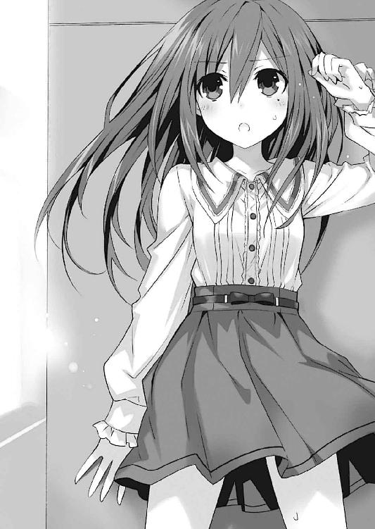
「......せめて、せめて三股止まりでいやがってください......」
真那はそう願いながら、五河家まで舞い戻ってきた。ここにはまだ、他の少女たちがいるはずである。
「本当は琴里さんにお話を伺えれば一番よいのですが......」
真那はむむうと唸った。
真那のように血の繫がりはないとはいえ、琴里も士道の妹。かつ〈ラタトスク〉の司令官でもある。恐らく、もっとも事情に通じているのは彼女だろう。
実際、真那は琴里に、兄様をよろしくお願いしますと言い含めていたはずだったのだが......
「何をしてやがるのですか、琴里さん......！ 兄様の管理がなってねーですよ......！」
真那は渋面を作りながらギリと奥歯を嚙みしめた。
と、そこでちらと家の中を覗き込むと、先ほどとは様子が違っていることがわかる。
美九と七罪がいないのは当然として、士道、十香、耶俱矢、夕弦の姿も見えなかった。無論家のどこかにいるという可能性はあったが、今見ることができるのは、キッチンの方にいる琴里と四糸乃の姿のみであった。
「琴里さんに......四糸乃さん......」
ここからでは、上手く二人の声が聞き取れない。真那は辺りに油断なく気を払いながら、足音を殺してキッチンの方に移動した。
そしてそろそろと家の中を覗き込むと同時、二人の会話が聞こえてくる。
『あっ、四糸乃。食器はそこに置いておいていいわよ。洗っておくから』
『ありがとうございます。あの......よかったら、手伝います』
『ああ、いいわよ。私がやっておくわ』
『でも......』
と、四糸乃が言いかけたところで、左手の『よしのん』がパタパタと両手を動かした。
『うふふー、駄目だよ四糸乃ー。琴里ちゃんは、士道くんがいないこのタイミングで、士道くんの役に立とうとしてるんだからー』
『......っ！』
『よしのん』の言葉に、琴里が息を詰まらせる。だが、それはあながち間違っていなかったらしい。何も言い返そうとはしなかった。
『す、すいません、私ったら......』
『べ、別にいいわよ、そんな。......ほら、なんていうの？ いつもこういうの、士道に任せっきりじゃない？ だからたまにはと思ってさ......』
琴里が恥ずかしそうに目を逸らしながら言う。
「............」
その、どこか兄妹愛を超えてしまっているような表情に、真那は眉根を寄せた。
「......ま、まさかそんな。兄様と琴里さんは仮にも兄妹ですからね......」
思い直すように首を振る。先ほどの件もあってか、どうもナーバスになってしまっているようだった。
『あ──じゃあ、私はお部屋を片付けます』
『四糸乃？』
『私も......士道さんのお役に、立ちたいんです』
『ああ......そうね。じゃあ、よろしくお願いするわ』
『はいっ！』
四糸乃が元気よく返事をし、テーブルの上に置いてあるものを片付け始める。それを見届けながら、琴里が洗い物を開始した。
それだけを見れば、なんとも微笑ましい少女たちのワンシーンである。だが、彼女らの行動の動機が、士道の役に立ちたいから......というものである事実が、真那の心をざわつかせた。
「い、いやいや、考えすぎはよくねーですね......」
どうも悪い方悪い方に考えてしまう。真那は心を落ち着かせるように深呼吸をした。
が、そこで。
『あ......』
四糸乃がテーブルの上に置いてあった中身入りのペットボトルを手に取ると、琴里の方に目を向けた。
『あの、琴里さん。これは......』
『ん？ ああ、士道ね。出しっ放しにして。冷蔵庫に入れておいてくれる？ のど渇いてたら飲んじゃってもいいけど』
と、琴里の言葉に反応するように、『よしのん』がぴくっと耳を動かす。
『え？ それって、士道くんと間接キッス決めちゃっていいってこと？』
『へ......っ!?』
『............！』
そこまでは考えていなかったのだろう。琴里と四糸乃が同時に息を吞んだ。
『うっふーん、何照れてるのー？ 二人とも間接どころじゃなく、士道くんと直接熱ーいキッスを交わしてるじゃーん』
「な......!?」
『よしのん』の発言に、真那は頰をぴくりと動かした。聞き捨てならない言葉である。会話を聞き漏らさぬよう、窓に耳を当てる。
『な、何言ってるのよいきなり......！』
『よ、よしのん......！』
『えー？ だって四糸乃、あのとき士道くんとキスしなかったー？』
『う......、......した......けど......』
「............!?」
恥ずかしそうにうつむきながら四糸乃が発した言葉に、真那は息を詰まらせた。
『琴里ちゃんだってー。遊園地のときに決めてたっしょ？ ていうか、あれあれー？ 士道くんのファーストキスって、一体いつ、誰とだっけー？』
『う、ぐ......、それは......五年前、私と......だと思うけど......』
（──琴里さぁぁぁぁぁぁぁンッ!?）
まさかの爆弾発言である。真那は眼窩から眼球がこぼれ落ちんほどに目を見開き、心の中で絶叫を上げた。
五年前。つまり琴里は、真那と顔を合わせた時点で既に、士道とキスをしていたということになるのである。──ブルータス、おまえもか。なぜか不意にそんな言葉が浮かんできた。
否、問題はそれだけではない。今から五年前ということは、琴里の年齢が八、九歳ということだ。無論士道の年齢も今からマイナス五歳されるとはいえ、早熟にもほどがあるだろう。
「こっ、これが......今どきの若者なのですか......っ」
真那は絶望的な心地で呟くと、キッチンの窓枠に手をかけた。
と──その瞬間、真那が手をかけた場所がボロッと外れ落ち、ガシャンという音を響かせてしまう。
「な......！」
突然のことに真那は肩を震わせた。あまり体重をかけたわけでもないのに、こうも容易く窓枠が壊れてしまうとは。老朽化でもしていたのだろうか。
しかし、すぐにそうではないと気づく。よくよく見ると、地面に落ちたのは窓枠ではなく、巧妙に偽装された隠しカメラの一部だった。
「......これは......」
真那はそのパーツを拾い上げながら頰に汗を垂らした。よく見るとカメラの本体に、『問題ない』と書いてあった。裏側には『構わない』と書いてあった。......意味がわからなかった。
だが、そう悠長にはしていられない。
『──何、今の音』
『そ、外からです......！』
そう。家の中にいた二人が、今の音に気づいてしまったのである。
「く......」
真那は眉根を寄せると、姿勢を低くしたままその場から離れた。
しかし、門から出ようとしたところで、右方から歩いてきていた通行人にぶつかってしまう。
「わっ！」
「ぬ？」
本来ならば軽く身をかわす真那であったが、考え事をしていたのと、慣れないヒラヒラのスカートを纏っていたのとで、少々反応が遅れてしまったらしかった。その場にドン、と尻餅を突いてしまう。
「あいたた......」
「むう、すまぬ、大丈夫か？」
ぶつかった相手がそう言って、真那に手を差し伸べてくる。真那は「いえ、こちらこそ」と言いながらその手を取ろうとし──
「......！」
相手の顔を見て、一瞬言葉を失った。
しかしそれも当然である。そこにいたのは、今まさに真那が話を聞きに行こうとしていた少女の一人、夜刀神十香だったのだから。
歩きやすそうな靴を履き、手に白いビニール袋を提げている。どうやら、買い物に出かけていたらしい。
「む......？ おまえ、どこかで会ったことがあるか......？」
「......！ い、いえ......」
本当は以前顔を合わせたことがあるのだが、どうやら装いと髪型が違うため気づいていないらしかった。
「むう......そうか。見覚えがある気がしたのだが......」
と、十香が訝しげに眉をひそめていると、その背後からさらに声が聞こえてきた。
「くく、どうした十香。そのようなところで立ち止まるとは。もしや目に見えぬ『奴ら』の気配を感じ取ったか？」
「怪訝。その方は？」
言って、八舞耶俱矢・夕弦姉妹が歩いてくる。どうやら、三人で外出したところだったらしい。
「うむ、今ここでぶつかってしまったのだ」
十香が言うと、耶俱矢が腕組みしながら快活に笑った。
「かか、修行が足りぬな。我であれば、身軽に身体を翻し、そのおなごをかわしていたぞ？」
耶俱矢の言葉に、十香がむう、と眉根を寄せる。
「私だって、いつもならば避けられていたぞ。しかしあれだ、今はシドーのご飯をいっぱい食べたあとで......む、身軽の反対だから......そう、身重なのだ！ シドーに身重にされてしまったのだ！」
「へ......!?」
十香の爆弾発言に、真那は呆然とした顔を作った。
身重とはつまり、妊娠し、お腹に赤ちゃんがいることを指す言葉だ。それを認識すると同時、真那はさーっと血の気が引いていくのを感じた。
「忠言。......十香、それはちょっと意味が異なります」
「む？ そうなのか？」
なんだか夕弦と十香が言葉を交わしているような気もしたが、混乱する真那の耳には入っていなかった。
まさか、そんなところまで進んでいたとは。士道はまだ高校生。結婚はおろか、彼女とその子供を養うことさえ困難なはずだ。
真那は途方もない絶望感と嘆きとともに、ふつふつと怒りがわき上がってくるのを感じた。
「あの......士道さんは、きちんと責任を取るつもりがありやがるのでしょうか？」
「ぬっ？ シドーのことを知っているのか？」
「え、ええ、まあ。ちょっと以前お世話になりまして」
真那が誤魔化すように言うと、十香はすんなりと納得したように「おお」と言った。
「──そ、それより、どうなのですか。そもそもあなたはちゃんと納得した上で、その......そうなったのですか？」
「むう......私もこんなになるつもりはなかったのだが、今日はシドーの腕がいつにも増して冴えていてな。気づいたらこんなことになってしまっていたのだ」
「いつにも増して......!? ちょ、ちょっと待ってください。いつもそんなことをしているのですか!?」
「何を言っている。当然ではないか」
「な......な......」
真那はガタガタと歯の根が鳴るのを感じた。まさか、真那の兄様がそのような破廉恥大魔王であったとは......！
ちなみに、十香が「ご飯は毎日食べねば力が出ないではないか」と言っていたが、真那には聞こえていなかった。
「あっ、あなた方は、士道さんとどのようなご関係なので......!?」
真那は縋るような気持ちで八舞姉妹に目を向けた。
「ほう？ 我と士道の関係ときたか。くく......そうさな、一言で言うのなら、奴は我と血の契約を交わした従僕よ」
「回答。夕弦と耶俱矢は、二人同時に士道に大事なモノを奪われてしまったのです。それから、士道は夕弦たちの共有財産となったのです」
「二人同時......ッ!? 従僕......!?」
新たに現れたアブノーマルな情報に、真那は頭を抱えた。
「ちょ、ちょっと待ちやがってください。まさか......そんなことが......」
足ががくがくと震え、額に冷や汗が滲む。
しかし、いつまでもそうしているわけにはいかなかった。十香が不審そうな顔をしたかと思うと、ヒクヒクと鼻を動かしてきたのである。
「ぬ......？ この匂い、やはりどこかで......」
「......！ し、失礼します！」
真那はその場から、一目散に逃げ出した。
そしてしばらく走ったあと、誰もあとを追ってきていないことを確かめてから速度を緩める。
「はぁ......、はぁ......っ」
しかし。足を止めてもなお、心臓は激しく鳴ったままだった。
とはいえそれも当然である。士道の潔白を証明するための調査の結果、士道が全員に手を出していることがわかってしまったのだ。
もしも既に真那の存在が琴里に知れていて、一連の会話は真那を騙すためのドッキリだった──とかならばどれだけよかっただろうか。
だが、真那が見る限り少女たちは誰も噓を言っているようには見えなかったし、士道のことを話すときには皆、恋する乙女の顔をしていた。どれだけ真那が自分を偽ろうとしても、あれを見てしまった以上、もう勘違いで通すことは困難だった。
もう、認めるしかない。士道は少女たち全員とキス（もしくはそれ以上）の行為をしており、少女たちは皆、士道のことを憎からず想っている。どう誤魔化そうと、その事実は変わらないのだ。
だが。真那は固く拳を握った。
──そうだ。まだ真那には、確かめなければならないことが残っているのだった。
「覚悟を決めてもらいやがりますよ......兄様」
◇
「ただいまー」
そう言いながら、買い物から帰った士道が自宅のリビングに入っていくと、既に勢揃いしていた皆が迎えてくれた。
「あっ、お帰りなさい、だーりん！ ほらほら、見てくださいっ！」
入り口近くにいた美九がテンション高く言い、隣にいた少女の手を引っ張って士道に示してくる。あまりに印象が違うため一瞬わからなかったが、可愛らしいひらひらのワンピースに身を包んだその少女は、先ほど美九に連れ出された七罪であった。
「おお、七罪か。なんだ、可愛いじゃないか」
「............っ！」
士道が言うと、七罪は恥ずかしそうに頰を染め、口をもごもごさせた。
「......あ、ありがと......」
美九はそんな様を、幸せそうな顔で眺めたのち、「あ」と何かを思い出したように手を打ってきた。
「そういえばだーりん。私と七罪ちゃんが買い物に行ったとき、なんか女の子に声をかけられたんですけど......」
「？ 女の子に？ 美九のファンってことか？」
「最初は私もそう思ったんですけどー、どうやら、私じゃなくてだーりんのファンみたいで」
「は......？」
士道はポカンと口を開けた。
「俺のファン......？ どういうことだ、そりゃ」
「うーん、詳しくはわからないんですけど、私たちとだーりんの関係について聞いてきたんですよねえ。だから、だーりんに思いを寄せてるのかと思ったんですけど」
「む！」
と、美九の言葉に反応するように、ソファに腹ばいになっていた十香がぴくっと反応した。しっぽが付いていたなら、ピンと立っていたに違いない。
「そういえば、私たちも会ったぞ、その女に」
「え？ 本当か？」
士道が問うと、今度は八舞姉妹がこくりとうなずいてきた。
「うむ、確かに邂逅した。しかも我らが使いから帰ってきたとき、この家の門から出てきたぞ。くく......これは何か裏があるな」
「首肯。士道、何か心当たりはありませんか？」
「心当たり......って言ってもな」
士道は困ったように頰をかいた。そんなことを言われても、思い当たる節はない。
「琴里と四糸乃はどうだ？ 誰か訪ねてきたりしたか？」
「いえ。誰も来てないわよ。あ、でも......」
琴里が、何かを思い出したようにあごに手を当てた。
「？ 何かあったのか？」
「あの......私と琴里さんが家にいるとき、キッチンの外から、物音がしたんです......まるで、誰かが家の中を覗いていたような......」
琴里の代わりに答えてきたのは四糸乃だった。眉を八の字にし、少し怯えたように肩をすぼめている。
「何だって？」
「なるほど......あれは気のせいじゃなかったってことか。十香や美九たちが会ったその女の子ってのが気になるわね。単なる士道のファンならまだしも、ＤＥＭやＡＳＴの手の者という可能性もゼロじゃないし......」
琴里が、難しげな顔でふうむと唸る。
「とにかく、みんな注意しておいてちょうだい。〈ラタトスク〉の方でも少し探ってみるわ」
琴里の言葉に、皆がうなずく。
そんな中、七罪だけが、思案を巡らせるように口元に手を置いていた。
◇
翌日。
「──兄様ッ！」
高らかに叫び、真那はバンと五河家のリビングに至る扉を開け放った。
リビングでは、士道がソファに腰掛けていた。突然家に入ってきた真那に驚いたのか、目を白黒させている。
「は......!? な、なんだ......？」
他に人影は見受けられない。それはそうだ。家の前で張っていた真那が、士道しか家にいないことを確認して踏み込んだのだから。
「お久しぶりでいやがります、真那です！ 突然ですが兄様、お話があります！ ご壮健なのは嬉しいのですが、ちょいと元気が過ぎるようですね？」
まくし立てるように真那が言うと、士道は困惑したように眉根を寄せた。
「真那......？ ちょ、ちょっと待ってくれ！ 一体何事だ!? ていうか今までどこに──」
「問答無用です！ はい、大人しくその場にスタンダップ！」
くいくい、と人差し指を動かすと、士道は戸惑いながらもその場に立ち上がった。
真那は満足げにうなずくと、そのまま腕組みし、言葉を続けた。
「昨日ちょいと、兄様の女性関係を調べさせていただきました」
「じょ、女性関係って......」
その語句が予想外だったのか、士道が頰に汗を垂らす。
「別にいーですよ。今更そんなとぼけなくても。兄様が驚異の八股軟派野郎ってことはもう調べが付いていやがりますから」
「八股......ッ!?」
士道が裏返った声を発してくる。わざとなのか、はたまた本当に自覚がなかったのか。どちらにせよ誉められたことではない。真那は苛立たしげにフンと息を吐いた。
「男子たるもの、生涯一人の女性を愛するべし！ です！ あっちゃもこっちゃも愛を振りまいていては、女の子たちがかわいそうでいやがります！ よって──」
真那は視線を鋭くすると、人差し指を立て、ビッ！ と士道の眉間を指さした。
「今、ここで！ 宣言していただきます！ 兄様は、誰のことを選ぶのか！ 兄様は、誰が好きなのか！」
「え......ええっ!?」
真那の言葉に、士道は顔を驚愕の色に染めた。
「ぬ......？」
マンションから五河家にやってきた十香は、いつものように玄関を開けたところで、不思議そうな顔を作った。
しかしそれも当然である。何しろ、リビングの扉に張り付くようにして、琴里や四糸乃、八舞姉妹に美九たちが、廊下にたむろしていたのだから。
「何をしているのだ？」
『......！』
十香が問うと、皆が一斉に「しーっ！」と指を一本立ててきた。
「む、むう......？」
よく意味はわからなかったが、ただならぬ気配を感じて、十香は口をつぐんだ。そしてそのまま、足音を殺して皆のもとに歩み寄る。
「......どうしたというのだ、一体」
小さな声で問うと、琴里が無言のまま、扉の隙間から見えるリビングの方に視線をやった。それを追うように、十香もまた、リビングを見やる。
するとそこに、二人の人影があることがわかった。一人はこの家の家主、士道。そしてもう一人は──士道の実妹、崇宮真那であった。
「士道に......真那？ 一体何を......」
十香は言いかけて、途中で言葉を止めた。
理由は単純。
「さあ......選んでください、兄様！ 十香さん、琴里さん、四糸乃さん、耶俱矢さん、夕弦さん、美九さん、七罪さん、そして──鳶一一曹！ 兄様は一体、誰のことが好きでいやがるのですか！」
真那が、士道に指を突きつけながら、そんなことを叫んだからだ。
「な......！」
十香は目を見開くと、他の皆と同じように無言でリビングに視線を注ぎ続けた。
どく、どくと心臓が大きく鼓動する。
士道が一体なんと答えるのか──知りたいような、知りたくないような、奇妙な感覚が胸の中に広がった。
すると、しばしの間困ったような顔を作っていた士道が、小さく口を開く。
「そ、そんなこといきなり......」
「男らしくねーですよ、兄様！ 真那の兄様ならしゃんとしやがってください！」
真那が片手を腰に当てながら、強い口調で言う。
すると士道は、頭をくしゃくしゃとかいたのち、ふうと息を吐き、意を決したように真那をまっすぐ見つめた。
「......わかったよ。ちゃんと答える。俺は──真那の兄貴だもんな」
「その意気やよしです。さあ......では、真面目に答えてください。兄様が一番好きなのは、どなたですか？」
「それは──」
士道が、すうっと息を吸う。
『............』
扉の外でその光景を見守っている十香たちが、その動作に反して一斉に息を吞んだ。
士道が、真那の目を見据えながら、ハッキリと告げる。
「──四糸乃だ」
その、言葉に。
『............ッ!?』
扉の外にいた精霊たちは、皆同時に身体を震わせた。そして、一斉に四糸乃に視線が注がれる。
「......!?」
「──、──!?」
「......、──!!」
声が出せない状態のため、リアクションだけで意思の疎通を図る。しかしわかったのは、皆一様に混乱しているということのみだった。皆目が泳ぎ、額に冷や汗が滲んでいる。特に四糸乃の狼狽ぶりは凄まじかった。顔が真っ赤に染まり、どう反応していいのかわからないといった表情をしている。
だが、そんな皆の困惑に反し、士道は情熱的に言葉を続けていった。
「もう......我慢できないんだ。俺は、ずっと四糸乃のことを愛していた！ 四糸乃は、俺の心のオアシスなんだ！」
真那の肩に手を置き、士道が訴えかけるように言う。
「......っ！」
その言葉を耳にした瞬間、十香は胸が締め付けられるような感覚を覚えた。四糸乃のことは十香も好きだ。士道が四糸乃のことを好きなのも知っている。だが......なぜだろうか。これ以上士道の言葉を聞いていたら、十香はどうにかなってしまいそうだった。思わず扉を押し開けてリビングに踏み込み──
「......む？」
そうになったところで、十香は動きを止めた。
理由は単純。真那が士道の顔をギロリと睨み付け、
「......はァ？」
と、まるで九〇年代のヤンキー漫画に出てくるスケバンのような顔を作ったからだ。なぜかはわからないが、真那の顔の左上あたりに、『!?』という文字が浮かんでいる気がする。
「ひ......っ!?」
そのあまりの豹変ぶりに、熱っぽく愛を囁いていた士道がビクッと肩を震わせる。
「ちょー......っと、聞こえませんでしたねェ。もう一度言ってもらえますか、兄様ァ？ あんまナメたこと言ってると、そのお顔変形させてやりますよ？」
「え、ええと......」
士道は顔中に汗をだらだらと垂らすと、目を泳がせ、蚊の鳴くような声で続けた。
「や、やっぱり......十香かなあ......なんて......」
「あ？」
士道の言葉に、再び真那が凄む。士道がまたも身体を震わせた。
「じ、じゃあ、琴里......？」
「あン？」
「ひっ！ か、耶俱矢で！」
「ほォう？」
「！ ほ、本当は夕弦が......！」
「あァ？」
「じ、実は美九で......！」
「フン？」
「......！ あ、そうだ！ 折紙......」
「聞こえませんねェ」
「え、えぇ......そしたらあとはもう七罪くらいしか......」
「なんですって？」
士道の言う言葉に悉く、真那が不機嫌そうな調子で返す。士道は泣きそうな顔をして全身を小刻みに震わせた。
しかし、数秒後、士道は何かに気づいたようにハッと目を見開いた。
「そ、そうか......そういうことか......」
すると、士道のその様子に真那がはぁと息を吐く。
「......やれやれ。ようやくわかってくれやがりましたか」
「ああ......ごめんな。真那。俺がバカだった。──目の前に、こんなにも可愛い妹がいたってのに」
「............ハァァァァ......ッ？」
だが士道の言葉に、真那がまたしても眉根を寄せた。
「え？ ち、違うの......？」
士道が、力なく声を発する。すると真那が、士道の顔面をむんずと摑んだ。
「ひぎぃ!?」
「さァ......すがに冗談が過ぎるんじゃねェですかねえ、兄様ァ？ 真那は真面目に答えてくださいって言ったと思うんですけれどねぇ？」
真那が額に青筋を浮かばせながら、怒り心頭といった様子で続ける。
「回答によっては許してあげようかとも思いましたが、駄目ですか。これ以上被害が広がる前に、去勢しやがっといた方が世のためかもしれませんねぇ......」
「ひ......ひい......っ!?」
「シドー！」
士道が幾度目かの悲鳴を上げると同時、十香は扉を押し開け、リビングに踏み込んでいった。さすがに、士道がこれ以上いじめられるのを見ていることはできなかったのである。
どうやら他の皆もそう思ったようで、十香とほぼ同時に、リビングになだれ込んでいった。
「な......っ！」
それに驚いたのは真那である。精霊たちの姿を認めると同時、「くっ」と顔をしかめ、士道から手を離して、窓の方へと飛び退いた。
そして去り際、
「──真那の兄様がそんな半端野郎だとは思いませんでした。次会うときは、覚悟してもらいますよ！」
と言い残して、窓から外へ逃げていった。
「あっ、こら、真那！」
琴里が慌てて追いすがるも──遅い。真那はひょいと庭の塀を乗り越えると、そのまますぐに見えなくなってしまった。
「し、シドー！ 大丈夫か！」
「だーりーん！」
「くっ、真那には逃げられたか......」
口々に叫び、床に倒れた士道のもとに駆け寄る。
「あ、ああ......みんな......」
士道が弱々しい声を発し、よろよろと手を上げてくる。
だが、次の瞬間。
十香たちに囲まれていた士道の身体が淡く輝いたかと思うと、ポンっ！ と小柄な少女の姿に変貌した。
「な......七罪!?」
琴里が裏返った声を上げる。
そう。今の今まで十香たちが士道だと思っていたのは、変身能力を持つ七罪が化けた姿だったのである。注意深く観察すれば見抜けたのかもしれなかったが、比較対象もなく、視界は限定され、その上あんな緊張した状況下だったため、誰も気づかなかったらしい。
「七罪、あんた一体何してるのよ!?」
琴里が問うと、七罪がよろよろと身体を起こしながら答えた。
「い、いや......怪しい女が、士道を嗅ぎ回ってるっていうから......囮作戦でおびき寄せようと思って......」
「じゃあ、さっきの回答は？」
「......いや、なんか会話の途中であの子の正体がわかったから、ちょっとからかってやろうかと思って......」
七罪の言葉に、皆がはあとため息を吐いた。
「......まったく、なんて人騒がせな」
「ホントですよもー。びっくりしちゃったんですからー」
精霊たちが口々に安堵の声をこぼす。だがそんな中、琴里が難しげな顔を作っていた。
「......まずいわね」
「む、何がだ？ シドーではなかったのだからよかったではないか」
「違うわよ。私たちはタネがわかったからいいけど......真那が勘違いしたままじゃない。あのまま士道と鉢合わせしたらどうするのよ」
『あ......』
精霊たちは、一斉に目を見開いた。
◇
「まったく......！ 兄様があんな男だとは思いませんでした！」
真那は手にしたビニール袋をブンブンと振り回しながら、のしのしと道を歩いていた。士道たちへのおみやげにと買っていたものだったのだが、渡すタイミングが摑めなかったのと、士道があまりに情けない回答をしてきたのとで、渡しそびれていたのである。
先ほどの情けない士道の顔を思い浮かべながら、ぎりと奥歯を嚙みしめる。
確かに、あの中から一人を選べと言ったのは真那だ。だが、それが成立するのは、士道が誰にも手を出していなかった場合の話だろう。
全員とキス以上のことをしでかして、皆をその気にさせておいて、俺には本命がいるんだ君とは遊びだったんだ、では、いくらなんでも道義が通るまい。
「一体どうしてくれましょう......！」
と、真那が苛立たしげに言いながら、曲がり角に差し掛かったとき。
「──あれ？ 真那？ 真那じゃないか！」
右方から、そんな声がかけられた。
「はい？ って......兄様!?」
真那はその声の方に顔を向けると、驚愕の声を発した。なぜならそこにいたのは、つい先ほど顔を合わせたばかりの兄、五河士道だったのだから。
「......ほぉう？ 真那の足に追いつくだなんて、やるじゃねーですか。でも、一体何の用です？ わざわざ追ってきたってことは、新しい答えが用意できやがったんですか？」
「は......？ 何言ってんだおまえ」
士道が、とぼけたように返してくる。真那は苛立たしげに眉根を寄せた。
「何って、さっきの質問に決まってるじゃねーですか！ 十香さん、琴里さん、四糸乃さん、耶俱矢さん、夕弦さん、美九さん、七罪さん、そして鳶一一曹！ 兄様は一体、誰を選ぶんですか!?」
「は......はぁっ!? 選ぶって......」
「いいから、答えやがってください！ さすがに真那も我慢の限界ですよ！」
士道は未だ困惑している様子だったが、真那のただならぬ様子を察したように、まっすぐ真那を見つめてきた。
「選ぶ......なんて言われても、俺にはできねえよ」
「......！ なんて無責任な──」
「──一人選べって言われてるのに、こんな答えじゃ怒られるかもしれねえけど......俺は、みんなが大事なんだ。一人欠けるのだって耐えられない。だから、答えは──『全員』だ」
「............」
神妙な面持ちで発された士道の答えに。
「......へへっ」
真那は、ニッと頰を緩ませた。
「随分時間はかかりましたが、まあいいでしょう。それでこそ真那の兄様です。──さっきとはまるで別人ですね」
「へ......？」
士道が、きょとんとした顔で返してくる。
「確かに、真那は一人を選べと言いました。実際、それは本心です。兄様には誠実に、一人の女性を幸せにしてあげて欲しかったです。──ですが」
真那は、歌舞伎の見得を切るように、カッと目を見開いた。
「手を出しちまったものは仕方ねーです。──真那の兄様ならば、全員まとめて幸せにしやがりなさい！」
「ええと......」
「返事！」
「お、おう......っ！」
士道は、真那の勢いに押されるようにうなずいた。
「では、失礼します、兄様。──あ、そうだ。これをどうぞ」
言って真那は、手にしていたビニール袋を手渡した。
「へ？ これは......？」
「どうかご壮健で。──次に来るときは、真那も叔母さんですかね？」
そう言って手を振り、真那は去っていった。
「な、なんだったんだ......？」
道に一人残された士道は、ポカンとした様子で真那の背を見送った。
一拍置いて、長らく姿を眩ませていた真那とほとんど話ができていないということに気づき、あとを追うが、もうその姿は見えなくなっていた。
「............」
無言で、先ほど手渡されたビニール袋の中を覗き込む。
袋の中には、ほ乳瓶や紙オムツなどの育児セットが詰め込まれていた。
「本当に......なんなんだ......？」
士道は意味がわからず、呆然と呟いた。
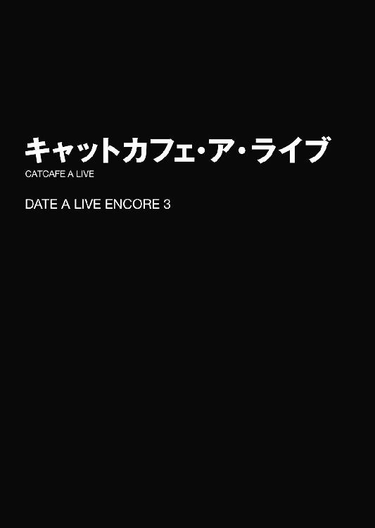
「おお、ここが猫カフェというところか！」
店内に入るなり、十香が大きな声を上げた。するとそれに驚いたのか、すやすやと眠っていた猫たちがピクッと身体を揺らし、十香の方に視線を送ってくる。
「落ち着けって。大声出したら猫が驚くぞ」
十香のあとに続いて店内に入った士道は苦笑しながら言った。
士道たちがいるのは、天宮市内にある猫カフェだった。チラシがポストに入っていたのを十香が見つけ、是非行ってみたいと言い出したのである。
まだ時間が早いからか、客の数は少ない。そのかわり様々な毛色の猫たちが、クッションやアスレチックの上で何匹もうずくまっていた。
「う、うむ、気を付けるぞ。しかしここは凄いな。こんなにも猫がいるとは......！」
十香は目をキラキラと輝かせながらその場に膝を突き、近くにいた猫に近づいていく。が、猫はそれに気づいたのか、すっくと立ち上がると素早く逃げていってしまった。
「ああっ！ なぜ逃げるのだ！」
「はは、そんなに構えてちゃ怖がるさ」
「ううむ......そういうものか。一体どうすれば撫でさせてくれるのだろうか」
「そうだな、もっと優しく──ほら、そこにいる人みたいに......」
言って、士道は店の奥の方で黒猫と戯れている客に目を向け──そのまま固まった。
理由は単純。その客の姿に、見覚えがあったからだ。
フリルの付いたモノトーンの服に身を包んだ少女である。長い黒髪を二つに括っており、左目が前髪に覆い隠されていた。
──時崎狂三。かつて士道の前に現れた『最悪の精霊』である。
狂三はまだ士道たちに気づいていない様子で、仰向けになった黒猫のお腹を優しく撫でていた。
「うふふ、ここが気持ちいいんですにゃ？」
狂三の言葉に応ずるように、黒猫がにゃーと鳴き、ペロリと狂三の指を舐める。すると狂三は恍惚とした声をこぼし、黒猫を抱き上げて頰ずりをし始めた。
「もうっ、甘えんぼさんにゃんですから──」
と、そこでようやく士道たちの存在に気づいたらしい。狂三が黒猫を抱きしめながら、士道と同じようにその場に停止する。
「......今、何か見まして？」
「......な、何も見てませんにゃ......」
思わず士道が言うと、狂三は頰をかぁっと赤らめて、黒猫を優しく床に置いた。そして、コホンと小さく咳払いをする。
すると次の瞬間、狂三のすぐ横に影が蟠り、赤と黒の霊装を纏った『狂三』がもう一人、その場に現れた。
『な......っ！』
士道と十香が同時に狼狽の声を上げる。すると新たに現れた霊装姿の狂三は、妖しく笑ってから、猫と戯れていた狂三に視線を向けた。
「わたくしの分身体が見苦しいところをお見せしましたわね。──こんな個体は、早めに処分しておくに限りますわ」
霊装の狂三が言った瞬間、もと居た狂三が足元の影に引きずり込まれていった。
「あーれー」
狂三が、なんだかわざとらしい声を発しながら影の中に消えていく。
「く、狂三......!?」
「うふふ、それでは、ごきげんよう」
霊装の狂三はまたも笑うと、自分の作り出した影の中に消えていった。
「な、何だったんだ、今の......」
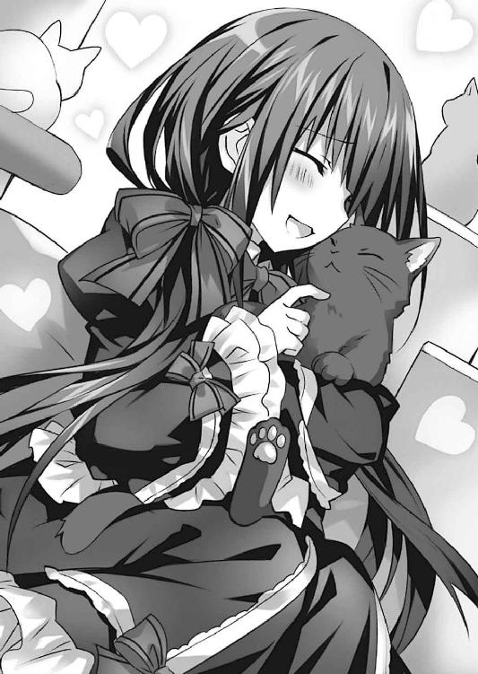
「う、うむ......」
その場に残された士道は十香と顔を見合わせ、しばらく呆然としていた。
「はあ......」
影の中で。霊装を纏った狂三の『分身体』が、大きく息を吐いた。
「とりあえず『わたくし』の名誉のためにそういうことにしておきましたけれど、今後は気を付けてくださいまし、『わたくし』」
「......善処しますわ」
自分の分身体に説教されるだなんて屈辱に耐えながらも、狂三は渋々頷いた。実際、彼女が『本物』を演じてくれたおかげで助かったのは確かなのだ。
「......次からは、店の前に見張りを立てておくことにしますわ」
「あの店に行くのを控えるという選択肢は──」
「え......っ」
「......いえ、なんでもありませんわ」
分身体の狂三は、諦めたように吐息した。
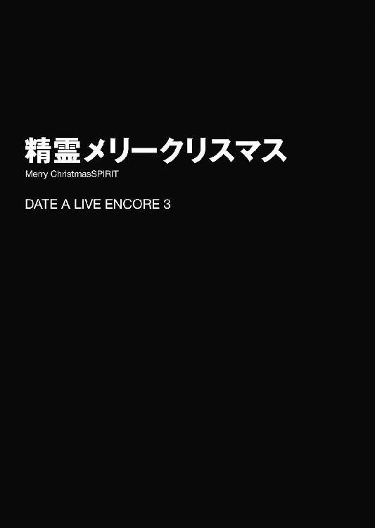
目は口ほどに物を言う......という言葉があるように、視線には、力がある。
眼球と、それを包む瞼の形。表情筋の産物に過ぎないそれに、人は古から、不思議な力が宿ると考えていた。
とはいえ、無論それは物理的な力などではなく、視線を浴びた者が感覚的に抱くものに過ぎない。相手の意思を察し、考慮しようとする意識が、詩的な表現を得ただけだろう。
だが。
「............」
五河士道は今まさに、その力を実感していた。──それこそ、目からビームでも照射されているのではないかと思えるほどに。
時刻は一八時三〇分。士道はいつも通りキッチンに立ち、夕食の準備をしているところだったのだが......その背中に、いくつもの視線が集まっていたのである。
士道は頰に汗を垂らしながら、ちらと後方を見やった。
するとそこに、実に六対もの目があることがわかる。
右から順に、十香、四糸乃、七罪、美九、耶俱矢、夕弦。それぞれがソファの背に張り付いたり、飛びかかるような格好を作ったりしながら、士道の方をジッと見つめてきている。たとえるならば、スタートの合図を待ち構える短距離走者、もしくは虎視眈々と獲物の隙を窺う肉食獣の群れのようだった。
「......ええと」
その異様な緊張感に耐えかね、士道は細々とした声を発した。
「そろそろ、そっちのテーブルを片付け......」
瞬間。
「！ うむ！ 任せろ！」
「させるか、それは我の役目ぞ！」
「制止。耶俱矢の手を煩わせるわけにはいきません。ここは夕弦が」
「いえいえ、私に任せてくださいよぉー！」
「あ、あの......私も......」
『ほぉらぁ、七罪ちゃんもー』
「わ、私は別に......」
なんて、皆が一斉に手を挙げてきた。そして、さすがは風の精霊と言うべきか、スタートの早かった八舞姉妹が台拭きを獲得し、二人で争うようにテーブルを拭いていく。一歩出遅れた十香が悔しそうに「くう......っ」と拳を握った。
「シドー！ 他に何か手伝うことはないのか!? 何でもするぞ！」
「えっと......じゃ、じゃあ、料理を運ぶのを......」
「おお！」
士道が言うと、十香はキラキラと目を輝かせ、キッチンに並べられた皿を運び始めた。
「あぁん、皆さんばかりずるいですー」
と、次いで声を発したのは美九だった。仕事を八舞姉妹と十香に取られてしまったためか、不満そうにぶー、と唇を尖らせている。その隣には、同じく仕事にあぶれてしまった四糸乃と七罪の姿もあった。
「他に何かないんですか、だーりーん」
「そんなこと言われてもなあ......」
士道が眉根を寄せながら頭をかくと、美九が何かを思いついたようにポンと手を打った。
「あ！ それじゃあこうしましょう。私、皆さんがお仕事を頑張れるように応援ソングを歌いますよー。四糸乃ちゃんと七罪ちゃんと一緒にー」
「え......ええっ!?」
「ちょ......勝手に決めないでよ......！」
美九の言葉に、四糸乃と七罪が目を丸くする。しかし構わず美九は目を伏せると綺麗な歌声を響かせ始めた。
「え、ええと......」
しばらく困ったように目を泳がせていた四糸乃だったが、何かせねばならないと思ったのだろう。躊躇いがちに小さく口を開けると、顔を真っ赤にしながら歌に参加し始めた。
「ちょ──」
七罪が驚いたように息を詰まらせる。が、そこで何もしていないのが自分一人であると気づいたのだろう。四糸乃の陰に隠れながら恥ずかしそうに歌に参加し始めた。だが一向に声は聞こえてこなかった。口パクだった。まあ、意図的かどうかはわからなかったが。
なんとも珍妙な光景である。士道は思わず苦笑してしまった。
別に、十香たちが自ら士道の手伝いを申し出ることは珍しくない。だが、さすがに今日のこれは度を越していた。まるで、労働していない者は強制収容施設に入れられてしまうディストピアにでもいるかのような感覚である。
とはいえ、その理由はわかりきっていた。
十香たちは──『いい子』になろうとしていたのである。
「ちょっと、オーバーに言い過ぎたか......」
士道はそう言いながら、昨日のことを思い起こしていた。
◇
「しっ、シドー！ 大変だ！」
一二月二〇日。突然五河家のリビングに飛び込んできた十香が、息を切らしながらそんなことを言ってきた。
よほど急いでいたのだろう。夜色の美しい髪は汗ばんだ頰に張り付き、水晶のような瞳には狼狽の色が浮かんでいる。そのただならぬ様子に、士道は思わず目を丸くした。
「ど、どうしたんだよ、そんなに慌てて」
士道が問うと、十香は呼吸を落ち着けるように肩を上下させてから言葉を続けてきた。
「く、来るのだ！」
「来るって......何が？」
「サンタというやつだ!!」
「へ......？」
十香の発した名に、士道は首を捻った。
「サンタって......サンタクロースのことか？」
「うむ、それだ！ 亜衣麻衣美衣に聞いたのだ。そやつが家にやってくるのだろう!?」
「んん......まあ、そういうことになるかな」
士道はポリポリと頰をかきながら眉根を寄せた。
「サンタさん......ですか？」
と、十香の言葉に、ソファに座っていた青い眼の少女──四糸乃が首を傾げた。左手に着けたウサギのパペットが、一緒に首を曲げる。
どうやら、四糸乃もサンタのことを知らないらしい。まあ、とはいえ無理はあるまい。彼女は十香と同じく精霊。こちらの世界での風習について詳しくないのも当然である。
「ああ、それはだな......」
「ふ......何やら面白い話をしているではないか、十香よ」
「首肯。夕弦たちも混ぜてください」
と、士道がクリスマスについて簡単に説明しようとしたところで、言葉を遮るように声が上げられた。
声の方向を見やると、瓜二つの顔と、似ても似つかぬ体つきをした双子が、妙に格好いいポーズを取りながら立っていた。八舞耶俱矢、夕弦姉妹。十香や四糸乃とともに隣のマンションに住む精霊の双子である。
「うむ、耶俱矢と夕弦も聞いてくれ。二人の力も必要になってくるかもしれない」
十香の物言いに、士道は「ん？」と首を捻った。
しかし士道が問うより早く、八舞姉妹と四糸乃が興味深そうに声を上げる。
「ほう？ 御主が我を頼るとは、よほどの事態のようだな」
「請負。我ら八舞にお任せを」
「それで、そのサンタさんって......どういう人なんですか？」
「うむ......」
十香が、真剣な面持ちでうなずき、あとを続ける。
「皆、注意して欲しい。サンタと呼ばれる男が、今月二四日の夜、草木も寝静まった頃に子供のもとにやってくるという話だ」
「......ほう？」
十香の言葉に、耶俱矢が眉間にしわを寄せながらあごに手を当てた。
「不審者情報というわけか？ 物騒よの」
「警戒。日付を予告するとはいい度胸です。詳しい外見的特徴の提示を求めます」
「うむ......確か、白い髭を生やしている老人で、真っ赤な服を着て、大きな袋を抱えているという話だ」
「......なかなかファンキーな外見であるな」
「首肯。正気の沙汰とは思えません」
「そして、トナカイに引かれたソリに乗り、空を飛んでやってくるらしい」
「空まで飛ぶの!?」
「戦慄。とんだ怪物です」
縦横無尽に空を飛び回る風の精霊が言うのを聞きながら、士道は乾いた笑いを浮かべた。明らかにイメージが違いすぎるが、言っていることは間違っていない。確かに要素を一つ一つに分解すると、不審この上ない人物だった。
「えっと......その人は子供のところに来て、何をするんでしょう？」
四糸乃が不安そうな顔をしながら言う。するとそれに、耶俱矢と夕弦が険しい顔をしながら答えた。
「推測であるが、その者が抱えているという大きな袋がくさいな」
「肯定。夜中に子供のもとに現れることから見ても、それしか考えられません。その袋の中には、攫われた子供たちが詰め込まれているのでしょう」
「な、なんと......」
「怖い......です......」
十香と四糸乃が声を震わせる。八舞姉妹は深刻そうな表情のまま続けた。
「やはり物の怪の類か」
「首肯。恐らくサンタという名も、魔王が訛ったものでしょう」
「............」
夕弦の言葉に、士道は汗を滲ませた。ちなみに『サンタ』は『聖』が変じたものなので、意味合い的には真逆である。まさかサタンと同一視されるとは。草葉の陰で聖ニコラウスも泣いているだろう。
なんだか盛り上がっているが、さすがにその勘違いは危険過ぎた。このままでは、精霊マンションに対サンタ用防衛設備が作られてしまいそうな勢いである。士道は訂正するように声を上げた。
「ちょっと誤解があるようだが......別にサンタクロースは悪者じゃないぞ？」
「そうなのか......？」
十香が、不安そうな顔で士道の方を向いてくる。
「そう。サンタっていうのは、子供にプレゼントを持ってきてくれるおじいさんなんだ」
「プレゼント？」
「ああ。枕元に靴下を吊しておくと、次の日の朝、その中にプレゼントが入ってるんだ」
「む......なぜそんな回りくどいことをするのだ？」
「んー......なぜって言われると......」
するとそこで、何かに気づいたように夕弦がポンと手を打った。
「納得。サンタの正体がわかりました」
「ほう？ どういうことだ、夕弦」
「説明。気づいてみれば単純な話でした。なぜ夜中にしか来ないのか。なぜ子供を主に狙うのか......要は親が、夜更かしをする子供を戒めるための話でしょう。夜遅くまで起きているとサンタがくるぞー、という具合に」
「な、なるほど！」
「......いや、そういうわけでも......」
サンタが怖い存在であるというところは訂正されていない。間違いを正そうと士道は口を開いた。
しかしそれより一瞬早く、四糸乃がおずおずと手を挙げる。
「でも......それじゃあなんでプレゼントをくれるんでしょうか......」
「確かにそうであるな。しかも靴下に入れていくだと？ 何のためにそんなことを」
「解説。なぜ親が子供を早く寝かせたがるのか......それを考えてみればおのずと答えは導き出されます」
「む......わからん。なぜだ？」
十香が首を傾げると、夕弦が声をひそめながら指を一本ピンと立てた。
「単純。夜中に子供に起きていられると、夫婦の営みが困難になるからです」
「......ぶふッ!?」
夕弦が言い出した仮説に、士道は思わず咳き込んだ。しかし夕弦は構わず言葉を続ける。
「だから子供を早く寝かしつけるために、サンタという存在を作り上げたのでしょう。ここで言われるプレゼントとは、弟か妹を表していると考えられます。靴下にプレゼントが入っている、というのは恐らく妊娠のメタファーでしょう」
「ほ、ほう......」
「あの......その......」
「むう？」
耶俱矢、四糸乃が頰を染めながら納得したように声を漏らし、十香が未だよくわかっていないという様子で眉根を寄せる。
「す、ストップストップ！」
この勘違いは、先ほどとは別の意味で危険に過ぎた。皆の注目を集めるようにブンブンと手を振って叫びを上げた。
「怪訝。どうかしましたか、士道」
「いいか。サンタっていうのはそうじゃなくてだな......」
士道はコホンと咳払いをしてから、サンタクロース、そしてクリスマスというイベントの簡単な概要を説明した。それが如何に楽しい行事であるかを。そして、世の子供たちがサンタをどれだけ心待ちにしているかを。
すると、最初は半信半疑といった様子で話を聞いていた精霊たちのテンションが、段々と上がっていくのがわかった。話の終盤には皆、頰を紅潮させ、目をキラキラさせていた。
「なんと！ そんなに楽しいものだったのか！」
「楽しみ......です」
「くく......なるほどな。聖者の類であったか」
「質問。士道、サンタは夕弦たちのもとにも来てくれるのですか？」
「え？ それは......」
夕弦の質問に、十香、四糸乃、耶俱矢も神妙な面持ちで士道を見てくる。
「う......」
そのキラキラした眼差しに晒されて、実はサンタはいないんだ、とは言えなかった。
「そ、そうだな......いい子にしてたら来るかもな」
その言葉に、十香たちは一瞬目を見合わせ──
『............』
こくり、と何かを決意するように力強くうなずいた。
◇
──そして、現在に至る。
士道はソファに座りながら、小さなため息を吐いた。
今はもう夕食を済ませ、リビングで休んでいるところだったのだが......身体はくつろぎながらも、心はまったく休まっていないのだった。
キッチンでは十香が食器を洗い、四糸乃が洗い終わった食器を拭いている。八舞姉妹は分担で部屋を片付けており、美九は七罪を小脇に抱えながら皆を応援していた。七罪はなんとか逃げだそうと藻搔いていた。
なんだかもう、貴族のような待遇である。士道が何かをしようと席を立つと、すぐさま誰かが駆けつけてきて、私がやるから休んでいてくれ、と言ってくるのだ。
ついでに、明らかにサンタクロースのことを知っているであろう美九や、この世界のことに精通している七罪までもが、事態を面白がってか同調圧力に屈してか、皆のお手伝いに参加していた。
と、士道がどうしたものかと思案していると、ソファに少女が一人、腰掛けてきた。長い髪を黒いリボンで二つに括っており、夕食後であるというのに口にチュッパチャプスをくわえている。──士道の妹、琴里である。
「大変ねえ、サンタさん？」
「ぐ......」
からかうような琴里の言葉に、低いうなり声を上げる。
「考えなしにハードル上げちゃって。あれだけクリスマスを楽しみにしてる精霊たちに、ホントはサンタなんていませんでしたー、なんて絶対言えないわよ？」
「そ、そうだな......」
士道は急速にのどが渇いていくのを感じた。テーブルに置かれていた紅茶を飲もうとする。カップを手に取った瞬間、水面が微かに震えた。
するとそんな士道の様子を見てか、琴里がはあと息を吐き出す。
「まったく......仕方ないわね。プレゼントは〈ラタトスク〉で用意してあげるから、二四日の夜、みんなの枕元に置いてきなさい」
「！ い、いいのか......？」
「仕方ないでしょ。もし二五日の朝にプレゼントが置かれてなかったら、一斉に精神状態真っ逆さまじゃない。天宮市を焦土に変える気？」
「すまん......恩に着る」
士道が頭を下げると、琴里はフンと鼻を鳴らした。
「......ま、みんなの機嫌を良くしたって点に関しては、評価してなくもないしね。あとはちゃんとアフターケアまでしてくれれば」
そして、よいしょ、とソファから立ち上がる。
「さて、じゃあ早速準備を始めましょうか」
「準備......？」
「ええ。プレゼントを贈るにしても、適当ってわけにはいかないじゃない。こっちである程度好みを絞ることはできるけど......リサーチしておいた方が確実でしょ？」
「あ......そうか」
確かにその通りである。プレゼントと一口に言っても、その内容は無限大だ。十香たちならば何を貰っても喜んでくれそうな気はするが......可能ならば欲しいものを確認しておいた方がよいだろう。
「はい、みんなー！ ちょっと集まってー！」
琴里が手を叩いて皆を呼ぶと、精霊たちがリビングに集まってきた。
「む、どうしたのだ琴里」
「ええ。みんな、クリスマスの夜にサンタクロースにプレゼントをもらうのよね？」
琴里が問うと、皆は一斉にこくりとうなずいた。
「じゃあ、どんなプレゼントが欲しいかを教えてくれないかしら」
「む......？」
琴里の言葉に、十香が不思議そうな顔を作る。
「なぜ琴里がそんなことを聞くのだ？ サンタクロースがくれるのではないのか？」
「え？ あー......」
琴里はぽりぽりと頰をかくと、言葉を続けた。
「あれよ。私は秘密のルートでサンタとの連絡回線を持ってるから、サンタにみんなの欲しいプレゼントをリクエストすることができるのよ」
「むう......しかしシドーが、サンタはすごい力を持っているから、子供の欲しいものが自然にわかると言っていた気がするのだが......」
「............」
ギロリ、と琴里が士道の方を睨んでくる。士道は目を泳がせながら苦笑いを浮かべた。そういえば、サンタの説明をする際に少しオーバーな表現を使ってしまったかもしれない。
琴里は困ったように頭をかくと、誤魔化すように続けた。
「あー、サンタのテレパシーは、対象者の年齢が上がると効きづらいの。だから──」
「むう、そうなのか。......そういえば私は何歳なのだ？」
「............」
十香の言葉に、琴里は無言になった。
そして数秒後、腹を決めたように大きく息を吐く。
「──そうね。サンタなら相手の欲しいものくらいわかるわよね」
「お、おい、琴里......？」
なんだか吹っ切れた様子の琴里に、士道は不安そうな声を発した。
「でも、万が一ってことがあるから、二四日当日、寝る前に欲しいものを紙に書いて枕元に置いておきなさい」
琴里が言うと、耶俱矢が目を丸くした。
「おい琴里。それではサンタが、我らのもとに来るまでプレゼントを用意できていないということにはならぬか？」
道理である。他の精霊たちも少し不安そうにうなずいた。
すると、それに答えるように七罪がボソボソと声を発する。
「......いや、そんな心配しなくてもサンタっていうのは──もごっ!?」
と、言葉の途中で美九が七罪の口元を押さえ込んだ。
「うふふー、だめですよー七罪ちゃん。夢は大事にしないとー」
やはり、元人間の美九と、こちらの世界のことに詳しい七罪は、サンタのことを知っているらしい。美九が、「ねっ、だーりん」とウインクをしてくる。
「はは......まあ、そうだな」
士道が力なく笑うと、琴里は話を続ける、というようにキャンディの棒をピンと立てた。
「サンタの力を舐めちゃいけないわ。サンタの持っている袋は四次元空間に繫がっていて、膨大なプレゼントストックの中から望むものを引き出すことができるのよ」
「な、なんだと......!?」
「驚愕。凄まじい能力です」
精霊たちが驚愕を露わにする。琴里は深く首肯すると、あとを続けた。
「だから、寝る前のメモは忘れないようにね？ いい？」
琴里が言うと、精霊たちは一斉にうなずいた。
「はい、じゃあとりあえず解散！ みんな作業に戻っていいわよ」
琴里の号令に合わせて、十香たちが途中だった食器洗いや片付けに戻っていく。隙を突いて逃げようとした七罪が、また美九に捕まっていた。
「お、おい、琴里......」
そんな精霊たちを横目で見ながら、士道はひそひそと琴里に話しかけた。
「何よ、不満でもあるの？ もとはといえば士道が蒔いた種じゃない」
「......いや、まあ、それを言われると弱いんだが......、それより、あんなこと言って大丈夫なのかよ」
言うと、琴里はフンと鼻を鳴らした。
「〈ラタトスク〉を舐めないでちょうだい。──見てなさい。どんなリクエストであろうと、即座に叶えてみせるわよ」
そうまで言われては、もう何も言えなかった。降参を示すように両手を上げる。
が──一つ気になることがあった。
「そういえば琴里。おまえは何か欲しいプレゼント、ないのか？」
「え？」
琴里は一瞬、虚を突かれたように目を丸くしたが、すぐいつもの調子に戻って苛立たしげに腕組みした。
「ふん、別にいらないわよ。サンタではしゃぐ歳でもあるまいし」
言いながら、オーバーリアクション気味に肩をすくめてみせる。
ちなみに琴里もかつてはサンタ宛に手紙を書いてしまうような夢見る少女だったのだが、小学二年生のとき、父が靴下にプレゼントを詰めるのに苦戦している場面を目撃してしまったらしく、それ以来サンタを信じなくなっていた。
が、当の父は琴里にその現場を見られたことに気づいていなかったため、士道はそれから三年の間、琴里がサンタを信じていると思って頑張る父と、そんな父に気を遣って、サンタの正体に気づいていると言い出せない琴里の緊張感溢れる攻防を至近距離で見せつけられることになったのだった（ちなみに小学五年生の折、琴里がうっかりサンタへの手紙に父の体調を気遣う一文を添えてしまったことによりその関係性は崩壊した。正体がバレていたと知った日の夜、父が幼い琴里の写真を見つめながらいつもより強い酒を空けていたのをよく覚えている）。
「......何よ」
思案が表情に出てしまっていただろうか。琴里が訝しげな顔を作ってくる。
「いや......なんでも」
「何よ、変なの。──まあいいわ、準備は任せて。士道も、サンタ役よろしくね」
そうとだけ言って、琴里はリビングから出ていった。
◇
そして一二月二四日、クリスマス・イブ。
この日は日曜日であったため、昼に皆で買い出しと部屋の飾り付けをし、夜は盛大なクリスマスパーティーとなった。
大皿に盛られたパスタやサラダ、一口大のライスコロッケに色鮮やかなカルパッチョ。メインディッシュは七面鳥とはいかなかったが大きなローストチキンで、十香が驚愕と歓喜に目を見開いていた。
そして最後に登場するのはデザート代わりのケーキである。ちなみにこれは近所のケーキショップで買ってきたクリスマス仕様であり、上にサンタと雪だるまの砂糖菓子が載っていた。
無論、それを目にした精霊たちのテンションの上がりっぷりといったらない。熾烈なじゃんけん合戦の結果、サンタは美九が、雪だるまは耶俱矢がゲットする運びとなったのだが、それを物欲しそうに眺める十香に、美九がサンタを口移ししようとしたので、士道は泡を食って止める羽目になってしまった。こんなことならば人数分砂糖菓子を用意しておくのだったと後悔する士道だった。
一通り食事を堪能したあとは、お待ちかねのゲームタイムである。
ゲームとはいっても、いつも八舞姉妹が鎬を削っているテレビゲームではなく、みんなで参加できるパーティーゲームだ。ジェンガにウノ、人生ゲームに黒ひげ危機一髪などを遊び、累計勝ち点がもっとも高い者が勝者となる（ツイスターも用意してあったのだが、美九による他選手への積極的妨害が認められたため急遽競技中止となっていた）。
ちなみに、折紙も呼ぼうと何度か電話を入れてみたのだが、なぜか連絡が付かなかった。珍しいこともあるものである。
ともあれ、精霊たちは皆遊び疲れた様子で、一〇時を回った頃には皆あくびをしながら自分の部屋へと戻っていった。
「さて......」
そして、それから数時間後。
戦闘装束へと着替えを済ませた士道は、ゆっくりと立ち上がった。
シューズボックスの姿見に目をやり、今の自分の容貌を改めて確認する。
赤と白で構成されたモコモコの服。長靴のようなブーツに、革ベルト。頭にはこれまた赤と白の帽子が鎮座しており、手には、大きな布袋が握られていた。
そう。現代日本に住んでいる者ならば一目で察しが付くであろう、見事なまでのサンタクローススタイルである。......まあ、まだ精霊たちに届けるプレゼントが決まっていないため、袋の中には梱包材を丸めたものしか入っていないのだが。
「じゃあ、そろそろ出るか」
壁に掛けられた時計を一瞥しながら呟く。時刻は一時三〇分。正確に言うのならもう日付は二五日になっていた。さすがにもう、起きている精霊はいないだろう。
「ええ、よろしく頼むわ。マンションにエージェントを待機させてあるから、みんなのリクエストを確認したら連絡してちょうだい」
玄関に立った琴里が、そう言ってからふあぁ......とあくびをする。が、一瞬ハッとした顔を作り、誤魔化すように咳払いをした。
「悪いな、眠いのに付き合わせちまって」
「何のことかしら。──とにかく、頼むわよ」
「はは......おう、行ってくるよ」
と、士道は苦笑しながら玄関の扉を開けて外に出──すぐに、目を見開いた。
半ば無意識のうちに視線を上げ、のどから感嘆を漏らす。
「はー......」
「どうかしたの？」
琴里が不思議そうに問うてくる。士道は顔の向きを変えないまま、背後にいる琴里に手招きをしてみせた。
琴里が、不審そうにしながら、サンダルを突っかけて士道の隣までやってくる。
「まったく、一体何だっていう──」
そして、ため息交じりにそう言いかけて言葉を止め、士道と同じような顔を作った。
「わ......雪？」
そう。二人の視界には、数時間前目にしたそれとは異なる景色が広がっていた。暗い空からはらはらと白い粒が舞い降り、街灯に照らされてキラキラと輝いていたのである。
道に、塀に、家々の屋根にさらさらのパウダースノーがうっすらと降り積もり、まるで砂糖がけされたお菓子のように白く色づいている。雲の切れ間から覗く月の光を受けてか、町全体が淡く発光しているかのようだった。
「すごい......この辺じゃ珍しいわね、ホワイトクリスマスなんて」
琴里が惚けたような調子で言う。確かに、南関東に位置するここ天宮市では、一二月に雪が降ること自体希である。
「でも、惜しかったわね。もう少し早ければ、あの子たちも見れたかもしれないのに」
「はは......もしかして、本物のサンタクロースからおまえへのクリスマスプレゼントなんじゃないか？ ほら、十香たちにプレゼントをあげようと頑張ってたし」
「な......っ」
士道の言葉に、なぜか琴里が頰を赤くする。
そして数瞬慌てたように目を泳がせたのち、苛立たしげに顔を背けた。
「ふん......そういう歯の浮くような台詞は、精霊攻略のときに発揮して欲しいものね」
「え？ そんなにクサかったか？」
「えーとびっきりね。......二人で雪を見れるのがサンタクロースからのプレゼントとか、よっぽどの女たらしでも──」
「ん？ いや俺は二人でなんて言ってないけど......」
「............！」
士道が言いかけたところで、琴里がハッと目を見開き、士道の尻を蹴り上げてきた。
「いてっ、何するんだよ琴里」
「うるさい！ さっさと行ってこいっ！」
「はいはい......」
こうなった琴里には何を言っても無駄である。士道は素直にそう言うと、ヒラヒラと手を振りながら、うっすらと積もった雪に足跡をつけていった。
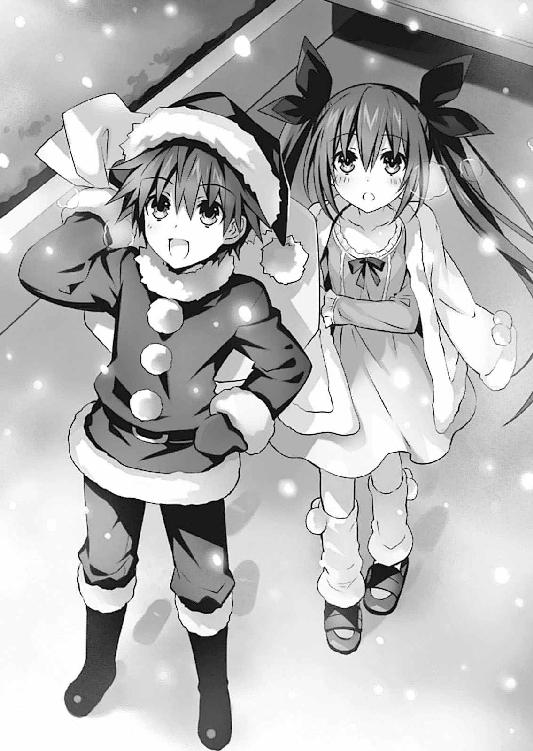
と、門を出ようとしたところで、ちらと後方を振り返る。
「琴里」
「何よ」
「メリークリスマス」
「............メリークリスマス」
琴里は視線を逸らしながらそう返すと、玄関の扉を閉めた。
「さて......と」
士道はそんな様子を見送ってから、自宅隣に聳えた精霊マンションの入り口に向かって歩みを進めていった。
そして自動ドアをくぐってエントランスに入り、インターホンを操作する。
とはいえ無論、精霊たちの部屋番号を入力し、鍵を開けてもらうわけではない。士道は〈ラタトスク〉から支給された管理コードを入力すると、機械に手を押し当てて、指紋と静脈を認証した。
すると軽快な電子音が鳴り響き、エントランスの扉が開く。
「お邪魔します......っと」
小さく言いながら、マンションの中に入っていく。民家から煙突が消えてしまった昨今、サンタクロースの侵入経路もハイテクなのである。
ちなみにこの扉は防弾処理が施されており、無理矢理入ろうと思ってもそう簡単には侵入することができない。壁や建材も全て頑強に作られており、内外からの衝撃に耐えられる造りになっていた。
まあ、外からの攻撃を想定......というよりは、突発的に精神状態が不安定になってしまった精霊たちの暴走を防ぐのが主な目的ではあるのだが。
「さ、じゃあ最初は......っと」
頭の中で精霊たちの部屋番号を整理しながら、部屋を巡る順番を決める。
「一番近いのは──十香かな？」
確か十香の部屋は四階、四一〇号室。士道と十香が出会い、十香の名の由来ともなった四月一〇日に合わせて選んだらしい。
士道はエレベーターに乗り込むと、マンションの四階に上がり、四一〇号室の扉の前に立った。
普通ならばこの扉にも電子制御の鍵がかかっているのだが、今日の夜に限り全ての部屋の鍵は開放されている。士道はノブを握ると、できるだけ音を立てないように扉を開けた。
当然ながら、部屋の中は暗い。士道は懐から懐中電灯を取り出すと、足音を殺しながら部屋の中に入っていった。
慎重に廊下を歩いて、寝室へ。すると大きなベッドの真ん中に、十香が仰向けになり、すうすうと寝息を立てていることがわかる。
一瞬、寝ている女の子の部屋に足を踏み入れているという事実を改めて認識し、少し心拍が上がる。が、それよりも、十香がお腹に布団を掛けずに眠っていることの方が気にかかってしまった。
「......あーあー、布団蹴っちゃって」
士道は小声でそう言うと、十香の足下に蟠っていた布団を、十香の肩まで引っ張り上げた。十香が小さく唸りながら寝返りを打つ。
士道はそんな十香の様子に苦笑してから、その枕元に目をやった。二つ折りになったメモ用紙。琴里の指示した、プレゼントのリクエストである。
「ええと......なになに？」
士道は紙を開くと、懐中電灯の光を紙面に当てた。
『見たことがないくらいの大きなハンバーグが食べたい』
「はは......」
あまりに十香らしいリクエストに、思わず笑みが漏れてしまう。
と、ちょうどそのタイミングで、右耳に装着していたインカムから、自宅で待機している琴里の声が聞こえてきた。
『どう？ 士道。リクエストはわかった？』
「ああ。見たことがないくらい大きなハンバーグだそうだ」
『十香ね』
「わかるか」
『そりゃあね』
琴里が小さく笑いながら言ってくる。
『──とにかく、了解よ。今からプレゼントを持っていかせるわ』
と、琴里が言ってからすぐ。玄関のドアが開いて、静かな足音が近づいてきた。
恐らく〈ラタトスク〉のエージェントだろう。士道はその姿を確認するため、そちらに懐中電灯を向けた。
「......!?」
が、そこに現れた人物の姿に、思わず声を発しそうになってしまう。
しかし、それも無理からぬことだろう。何しろそこにいたのは、トナカイの着ぐるみを着た、眠たげな顔の女性だったのだから。
「れ、令音さん......？ 何してるんですか？」
士道はひそめた声で尋ねた。そう。そのトナカイは、〈ラタトスク〉の解析官にして琴里の親友、村雨令音その人だったのである。
「......ん、トナカイだが」
「なんでまたそんな格好を......」
『万一十香たちが目覚めたときの対策よ』
そう言ったのは琴里だった。......まあ、確かにこの姿であれば、一瞬見られたくらいでは正体がバレることはないだろう。本物のサンタとトナカイだと信じてくれるかどうかは別として、夢と思うくらいはあるかもしれない。
ちなみに、着ぐるみを着ているのに令音の顔が判別できた理由は単純なもので、ちょうど顔の部分だけがくりぬかれたように露出しているからだった。それを補うかのように、鼻に赤い球体が装着されている。なんだか妙にシュールな光景だった。
「......それより、これを」
令音が、さして気にしていない様子で、手にしていた袋を手渡してくる。
「ど、どうも......」
まあ、これ以上言っても仕方がない。士道は素直に袋を受け取った。こうしてプレゼント入りの袋をあとから受け取るのであれば、士道が担いでいる空の袋はいらないのではないかと思ったが......まあそこは、ビジュアル的に大事なのだろう。
令音は仕事を終えたというようにこくりとうなずくと、踵を返して帰っていった。丸っこい後ろ姿が妙に可愛かった。
『ほら士道、急いでちょうだい。次がつかえてるんだから』
「あ、ああ......」
士道は十香にプレゼントを渡すべく、手渡された袋の中を覗き込んだ。が、そこで思わず目を見開く。
何しろそこに入っていたのは十香ご所望のハンバーグではなく、挽肉とタマネギ、パン粉に卵に各種スパイス、調味料といったラインナップだったのである。
「おい琴里、なんだよこれ」
『何って、ハンバーグの材料だけど』
「まさかここで作れっていうのかよ......!?」
『仕方ないでしょ。いくらプレゼントをストックしてあるっていっても、焼きたてハンバーグなんて置いておけないし』
「ま、まあそりゃそうだが......と、この銀食器は？」
言って、各種材料と一緒に入っていた銀のナイフとフォークなどのセットを取り出す。
『食べ物もいいけど、形の残るプレゼントもあった方がいいでしょ？』
「なるほど......確かにそうかもな」
『ほら、ちゃっちゃと済ませちゃって』
琴里が急かすように言ってくる。士道ははあとため息を吐くと、寝室を出てキッチンの方へ歩いていった。
精霊マンションは、建物の造りこそ特殊であるものの、その内部環境は普通のそれとさほど変わらない。加え、家具や生活必需品も最初から一通り揃えてあるため、ここで料理をすること自体は十分可能だったのである。
「さすがに部屋が違えば大丈夫だよな......？」
寝室の扉が閉まっていることを確認してから、キッチンの電気を点ける。さすがに暗い中で包丁を扱うのは危険だった。
士道は手を洗うと、ハンバーグを作り始めた。手慣れたレシピではあるのだが、さすがに量が量である。肉を捏ねるのも一苦労だった。
一番大きなフライパンを取り出し、油を引いてから巨大な肉の塊を敷き詰めるようにして焼き始める。さすがに士道もこんなサイズのお化けハンバーグを焼くのは初めての経験だった。すぐに、美味しそうな匂いが辺りに漂い始める。
「よし、完成っと」
パーティー用の大皿にハンバーグを移してから、残った肉汁でソースを作り、別の器に入れておく。
と、ハンバーグにラップをかけ、寝室に向かっていると、突然どこかから、ゴン......ゴン......という音が聞こえてきた。
「な、なんだ......？」
一瞬、心霊現象の類を疑うが、すぐにそれが、目の前の扉の向こう側から聞こえていることに気づく。
恐る恐る扉を開けてみると、先ほどまでベッドに眠っていたはずの十香が、尺取り虫のようなポーズで、頭を扉にぶつけていることがわかった。次いで、ぐーきゅるる......というお腹の音が鳴る。
どうやら、ハンバーグの焼ける匂いに反応してここまで来てしまったらしい。士道は力なく笑うと、ハンバーグの皿をベッドの枕元に置いてから、十香を抱き上げ、ベッドに戻してやった。
と、そこで枕元に靴下が吊り下げられていることに気づくが......さすがにこの大きさの皿を入れることはできない。ハンバーグだけを無理矢理詰め込むことは可能かもしれないが、朝起きてパンパンに張った靴下からぽたぽたと肉汁が滴っていたら、如何なハンバーグ好きでもパニックを起こしてしまうくらいにはホラーだろう。
士道は数瞬考えを巡らせ、靴下の中に銀食器を入れ、それの口を皿の下に申し訳程度嚙ませると、十香の部屋をあとにした。
次は四糸乃の部屋である。士道は同じ階にある四〇五号室に歩いていった。こちらの方が部屋番号は若いのだが、エレベーターとの位置関係で十香の部屋のあとの方が訪れやすかったのである。
先ほどと同じように部屋の扉を静かに開け、足音を殺して寝室に入る。
四糸乃は肩まで布団をかけ、行儀良く眠っていた。布団からウサギのパペット『よしのん』が顔を出しており、妙に微笑ましい。
「さて、四糸乃のリクエストは......っと」
枕元に置かれたメモ用紙を開く。するとそこには、
『可愛い帽子が欲しいです』
という言葉と、色鉛筆で描かれた帽子の絵、そして『夜遅いですが頑張ってください』という労いの言葉が記されていた。
「これは......うーん......？」
士道は首を傾げた。プレゼント自体は何も問題ないのだが、最後の文言が、サンタに向けたものとも、士道に向けたものとも取れたのである。
「ま、気にしてもしょうがないか。琴里──」
と、言いかけたところで、士道は枕元に紙がもう一枚置かれていることに気づいた。
それを広げてみる。すると特徴的な字で、
『新しいお洋服が欲しいよー』
と書かれていることがわかった。
「これは......よしのんか」
呟きながら、紙の下の方に目をやる。そこには四糸乃のそれと同じように、ぬいぐるみ用の服の絵が、そして一番下に『今なら四糸乃の唇奪い放題だよ■■サンタさーん』と書かれていた。ちなみに■■は、一度書いた文字を塗りつぶしたもののようだった。光を裏から当ててみると『士道』と書いてあることがわかった。
「............」
間違いなく気づいている。四糸乃はともかく『よしのん』はサンタクロースの正体に勘付いているようだった。
士道は頰に汗を滲ませながら、改めて四糸乃の顔を見やった。白磁のように滑らかな肌。花びらのような唇。静かに寝息を立てる少女の姿は、まるで眠り姫のように美しかった。
確かに『よしのん』の言うとおり、今ならば何でもしたいことをやり放題である。先ほどまで考えもしなかった邪な思考が脳裏を掠め、ごくりとのどを鳴らす。
『士道？ どうしたのよ。早くリクエストを寄越しなさいよ』
「......！ あ、ああ......悪い。可愛い帽子と、よしのんの服だ」
士道は息を詰まらせてからそう答え、絵に描かれた細かいディティールを説明した。
『オーケイ、それなら用意してあるわ。すぐに届けさせるから待っててちょうだい』
琴里がそう言ってから一分と待たず、再び村雨・トナカイ・令音が現れる。
「......シン、これを」
「はあ、どうも......」
士道が袋を受け取ると、令音はお尻を振りながら去っていった。別に意図的にそうしているわけではないだろうが、着ぐるみのお尻の部分が余っているためか、普通に歩いているだけでそうなってしまうのだろう。何度見てもシュールな姿である。
士道は頰をかいてから袋を探ると、帽子と『よしのん』の服を取り出し、四糸乃の枕元に置いた。
「よし......じゃあ次は、耶俱矢と夕弦の部屋だな」
士道はそう言うと、四糸乃の部屋を出、エレベーターでマンションの八階に上がった。
八舞姉妹はこの階の八〇二号室に二人で暮らしている。他の部屋よりも間取りが広いため、ここを選んだようである。
士道は扉を開けると、そろそろと部屋の中に入っていった。
しかし、廊下を歩いているところですぐ異常に気づく。──今までの部屋と違って、部屋の中に電気が点いているのである。しかも、リビングの方から何やら音がする。
「まさかあいつら......」
恐る恐るリビングを覗き込むと、そこには予想通り、耶俱矢と夕弦の姿があった。無論二人とも眠りに就いてはおらず、二人が向かっているテレビには対戦格闘ゲームの画面が表示されている。どうやら夜更かししてゲームに興じていたらしい。
「あいつら......早く寝ろっていったのに」
士道が渋面を作りながら言うと、それに合わせるように、耶俱矢と夕弦が会話を始めた。
「ねー夕弦ー。サンタって具体的に何時くらいに来るのかなー」
「不明。詳しい時間は聞いていません。さすがに眠くなりましたか、耶俱矢」
「なっ！ そんなんじゃないし！ 全然余裕だし！ サンタを見るまでは寝ないし！」
「............」
二人の会話に、士道は汗を滲ませた。どうやらただ遊んでいたわけではなく、サンタの姿を捉えるために起きていたらしい。
だが、二人にだけプレゼントを届けないというわけにもいかない。不幸中の幸いと言うべきか、耶俱矢と夕弦が遊んでいるのは寝室ではなくリビング。二人の後ろを通り抜けることができれば、プレゼントを置いて去ることも可能だろう。
「仕方ない......行くか」
士道は腹を決めると、細心の注意を払いながら歩みを進め始めた。
「疑念。本当でしょうか。耶俱矢はいつも強がります」
「な、何よ、夕弦こそ眠いんじゃないの？ さっきからコマンドが単調になってるわよ」
「憤慨。そんなことはあり得ません。夕弦の繊細なプレイングがわからないほどに、耶俱矢の注意力が落ちているのです」
「どうかしらー。夕弦も意外とお子ちゃまなところあるしー」
「提案。ならば、次の勝負、賭けをしましょう」
「ふうん......面白いじゃない。何を賭けるのよ」
「微笑。負けた方が、士道の好きなところを一つずつ言っていくのです」
「ぶふ......っ!? な、何よそれ!?」
耶俱矢が裏返った声を上げる。が、実際声を上げてしまいそうなのは士道も同じなのだ。なんというか......こういう緊迫感溢れているときにそういうのは......困る。
士道はうっすらと顔を赤くしながらも、どうにか寝室に辿り着いた。そして二人のベッドの枕元に、それぞれ二つ折りにされた紙が置いてあることにとりあえず安堵する。これでまだリクエストを用意していなかったら、どうしたらいいのかわからないところだった。
「琴里、二人のリクエストがわかった。耶俱矢はシルバーのアクセサリー、夕弦はデジタルカメラだ」
『了解。どっちも用意してあるから、すぐに向かってもらうわ』
「あ──二人ともまだ起きてるみたいだから、令音さんに、部屋に入るときは注意するよう言ってくれ」
『え？ 起きてるの？ まったく......わかった、気を付けるよう伝えておくわ』
琴里の言葉から数分後。八舞姉妹の寝室に令音がやってきた。
「大丈夫でしたか、令音さん」
「......ああ。ゲームに熱中していたようで、私に気づいた様子はなかったよ」
「そうですか。そりゃよかった」
「......そういえば、対戦に負けた耶俱矢が『......優しいとこ!!』と叫んでいたが、何のことかわかるかい？」
「............、いや、皆目」
士道は目を逸らしながらそう言うと、令音からプレゼントを受け取り、二人のベッドの枕元に吊されていた靴下の中に詰め込んだ。
そして令音と連れ立って、部屋の外に出るため再び八舞姉妹の背後を歩いていく。ちなみに令音はトナカイの角が家具に当たり、音を立ててしまわぬよう、両手で角を押さえながら歩いていた。ちょっとプリティ過ぎた。
幸い、耶俱矢と夕弦は次の対戦に入っているらしく、士道と令音に気づいていない。決着が付く前にここから去ろうと、歩みを進める。
が、そのとき。
令音の手が外れてしまったのだろう。トナカイの角がバネ仕掛けのようにビンッ、と立ち、ドアの枠に当たって乾いた音を鳴らした。
「......ん？」
「あ......」
まずい、と思ったときにはもう遅い。
士道が恐る恐る振り向いてみると、コントローラーを手にした耶俱矢と夕弦が仰向けになるような格好で後方を見、驚愕に目を見開いていることがわかった。
「......さ、サンタ!!」
「驚愕。トナカイもいます」
「......!!」
士道は慌てて令音の手を取ると、そのまま部屋の外に逃げていった。
「はぁ......っ、はぁ......っ」
「......どうやら、諦めてくれたようだね」
それから数分後。士道と令音は暗い部屋の中で息を吐いた。
今二人がいるのは、六階にある空き部屋である。八舞姉妹を撒いたあと、ここに逃げ込んだのだ。
ちなみに、動きづらい服を着た士道と着ぐるみを纏った令音が、風の精霊たる八舞姉妹から逃げ延びることができたのは、二人に捕まりそうになった瞬間、令音が鼻につけていた赤い球体をむんずと摑んで地面に投げ、煙幕を生じさせたからだった。......なんとも用意周到なことである。
「じゃあ......あとは美九と七罪ですね。またリクエストがわかったらお願いします」
「......ああ、ではまたあとで」
士道と令音は空き部屋を出ると、廊下で二手に分かれた。士道はそのままエレベーターに乗り込み、マンションの九階に向かうと、美九が泊まっている九〇一号室の前に立った。
元人間である美九は市内に自宅を持っているのだが、今日ばかりは一箇所にまとまっていてくれた方が便利ということで、マンションに泊まるようお願いをしていたのである。
慎重に扉を開け、部屋に入って寝室へ。
だが士道は、すぐにおかしなことに気づいた。
──ベッドの上に、誰も寝ていなかったのである。
「............！」
それを確認した瞬間、士道は全身を緊張させた。先ほどの八舞姉妹と同じように、美九がまだ起きているのではないかと思ったのだ。
しかし、リビングやトイレに誰かがいる気配はないし、第一この部屋の中にはどこにも電気が点いていなかった。
「あれ......琴里、美九が泊まってるのって九〇一号室じゃなかったっけ？」
『そのはずだけど、どうかしたの？』
「美九がいないんだ。部屋のどこにも」
『ええ......？ 部屋を間違えたんじゃないの？』
「いや、確かに九〇一号室に入ったはずなんだが......」
言いながら、懐中電灯でベッドを照らす。すると、布団とシーツに乱れがあることがわかった。つい先ほどまで誰かが寝ていた様子が見受けられる。しかし、枕元にリクエストの紙は見当たらなかった。
「さっきまで寝てたみたいだな......どこに行ったんだ？」
『うーん......こっちでも廊下のカメラ映像チェックしてみるから、先に七罪の方回ってくれない？』
「ん......わかった」
リクエストがわからない以上どうしようもない。士道は琴里の指示通り、七罪の部屋を目指すことにした。
七罪の部屋は、マンション最上階の一番端に位置している。なんでも本人の強い希望だったらしいが、最近になって四糸乃の部屋と同じ階にしようか迷っているという話だった。
士道は七罪の部屋の扉を開けると、忍び足で中に入っていった。
そしてそのまま寝室に侵入し、眠っている七罪の枕元を照らす。すると、例によって折りたたまれたメモ用紙が置いてあることがわかった。
「お......あったあった。ええと......」
紙面に目をやる。そこには、
『本』
と素っ気ない文字が記されていた。
「こりゃまた......と、ん？」
士道は眉根を寄せた。その文字の隣に、ぐしゃぐしゃとペンを走らせたような跡が見受けられたのである。
光に透かしてみると、そこには『メイク道具』と書かれていたことがわかる。
「............」
『士道、どう？ 七罪のリクエストは？』
琴里が尋ねてくる。士道は数瞬思案を巡らせたのち、
「メイク道具一式と化粧品、あとメイクのハウツー本を何冊か適当に見繕ってくれ」
と言った。
『へえ、七罪ったらそんなもの頼んでたの？ 変わろうとしてるのね。なんか嬉しいわ』
「だな。──あ、七罪は少し乾燥肌っぽいから、化粧水は保湿力の高いやつな」
『はいはい』
「乳液も忘れるなよ。チークとグロスも何色か欲しいけど、最初はできるだけ派手すぎないやつでな。本は任せるけど、心明社の『肌を傷つけないメイクの基本』は入れておいてくれ。あれはいい本だ。あと──」
『はいはい、わかったわよ、士織ちゃん』
「......はっ」
その名で呼ばれて、ハッと我に返る。もしかしたら、あまり男の子がしないような指定をしていたかもしれない。
と、その瞬間。
「ん......ぐぅ......うーん......」
ベッドに寝ていた七罪が低いうなり声を発したものだから、士道はビクッと肩を揺らした。
一瞬、士道の細かい指定がうるさくて七罪を起こしてしまったかとも思ったが──どうやら違うようだ。いやに寝苦しそうな顔をしているものの、まだ夢の中にいるようである。
「なんだ？ 悪い夢でも見て......」
言いかけて、士道は言葉を止めた。
七罪の布団が、妙に膨らんでいたのである。明らかに、七罪の体格よりも大きく。
「......！ まさか──」
七罪は変身能力を持つ精霊。もしや悪夢を見たことによって霊力が逆流し、本人の意思とは関係なく霊力が発現してしまっているのでは......!?
そう考えて、士道は慌てて七罪の布団を剝ぎ取った。
だが、そこには。
「あぁん......駄目ですったらぁ......」
やたら幸せそうな顔で七罪に抱きつき、寝言を呟く美九の姿があった。
「............」
士道は、見なかったことにして布団を戻した。
よく見ると、枕元にもう一枚、二つ折りにしたメモ用紙が置かれていることがわかる。どうやら美九は自分の部屋を抜け出して七罪の布団に潜り込んでいたらしい。いつもなら鍵がかかっているはずの扉も、クリスマスの夜だけは特別に開放されていた。......とんだクリスマスプレゼントである。
「ま、まあとりあえず......リクエストを見てみるか」
士道はメモを開いてみた。
『だーりんの添い寝ＣＤ（キャラ別最低三パターン）』
「............」
士道は頭を抱えた。
『どうしたのよ、何かあった？』
「......いや、美九が」
琴里が問うてくる。士道は状況を簡単に説明した。
『あー......なるほど。仕方ないわね。なんとかするからちょっと待ってて』
何か方策があるのだろうか、琴里がやれやれといった様子でそう言った。
それからおよそ一〇分後、七罪の部屋に袋を抱えたトナカイがやってきた。ちなみに、先ほどもぎ取ったはずの赤い鼻は再生していた。
「......待たせたね」
「いえ、大丈夫です。それより──」
「......ん、これだ」
言って、令音が袋を手渡してくる。士道はその中から、メイク道具と化粧品一式、そして数冊のハウツー本を取り出すと、それを七罪の枕元に置いた。
「ええと、あとは......」
と、士道が言いかけたところで、今度は令音が一冊の本のようなものを手渡してきた。
「ん？ なんですかこ......れ......」
その表紙を見て、思わず言葉を失う。
何しろそこには、『五河士道添い寝ＣＤ台本（第三稿）』と書かれていたのだから。
令音の方を見ると、いつの間にか小型のパソコンを膝に乗せ、着ぐるみの上からヘッドフォンをして、集音マイクを士道に向けていた。万全の収録態勢である。
「なんとかするってこういうことかよ!?」
士道は思わず叫びを上げた。
『仕方ないでしょ。リクエストは可能な限り受け付けないと』
「いやそうだけど！ ていうかなんだよこの（第三稿）って！ 前から準備してたのかよ!? 何改稿までしてんだよ！」
『静かにしなさい。二人が起きちゃうわよ』
「ぐ......！」
そう言われては黙るしかなかった。腑に落ちないものを感じつつも、口を噤む。
すると、催促するように令音が集音マイクをくいくい、と動かしてきた。
「ああ、もう......っ」
こうなればヤケである。士道は台本を捲ると、懐中電灯で紙面を照らしながら、最初のページを読み上げていった。
「......あ、あん？ 眠いだと？ はっ、知るかよ。勝手に寝てやがれ。......はぁ？ なんで俺がそんなことしてやんなきゃ......な、なんねえんだよ。うるせえ。とっとと寝ちまえって言ってんだろ。......、あー、なんだよその顔は。......ったく、仕方ねえな......いいか、五分だけだぞ。五分で寝なきゃあとは知らねえからな......」
「......シン」
と、士道が顔を真っ赤にしながら台本を読んでいると、途中、令音が声を上げてきた。
「な、なんですか？」
「......もうちょっと俺様っぽくいってみよう」
「何言ってんですか令音さん!?」
士道は、たまらず悲鳴じみた声を上げた。
◇
「つ、疲れた......」
それからおよそ一時間後。ようやく収録は終わり、その場で編集された音声は令音の手によって一枚のＣＤへと作り上げられた。
それを美九の枕元に置き、部屋を出て令音と別れる。
これでようやく、全てのプレゼントを渡し終えたことになる。士道ははあと安堵の息を吐いた。
『お疲れ様。もう戻ってきていいわよ』
「ああ......琴里もお疲れ。眠いだろ。先に休んでていいぞ？」
『ふん、馬鹿にしないでちょうだい。これくらい──ふぁあ......』
言葉の最後であくびが漏れる。琴里は誤魔化すようにわざとらしい咳払いをした。
「ほら、無理するなって。夜更かしは美容の大敵だぞ」
『はいはい......じゃあお言葉に甘えさせてもらうわよ』
仕方ない、といった様子で琴里が言う。
『じゃあ、お休み』
「おう、お休み」
士道は返事を返すと、エレベーターに向かって歩いていった。そして一階に下りてマンションを出、自宅へと戻っていく。
先ほどまで降っていた雪は、もう止んでしまっていた。辺りにはまだうっすらと雪化粧の跡が残っていたが、この様子では朝までに全て溶けてしまうだろう。もしかしたら本当に、天から琴里へのプレゼントだったのかもしれなかった。
士道は家に入ると、玄関に鍵を掛け、自分の部屋へと戻っていった。
だが、まだサンタ服は脱がない。士道には、最後の仕事が残っているのである。
「よし......っと」
そのまま、少しの間時間を潰したのち、士道は押し入れの中からラッピングされた小さな箱を取り出すと、そろそろと廊下を歩き、琴里の部屋に向かっていった。
そして、琴里が寝ていることを確認してから扉を開け、眠る琴里の隣に歩いていく。
「雪もいいけど、にーちゃんとしてはサンタ役を譲るわけにはいかねえよな」
言いながら、琴里の枕元にプレゼントの箱を置く。
「メリークリスマス、琴里」
そして、琴里の頭を軽く撫でると、士道は自分の部屋に戻っていった。
「さて......ようやくサンタも終わりだ......っと──」
と。
自室の扉を開けた士道は、その場に固まった。
理由は単純。部屋の中に、先ほどまではいなかった人影があったからだ。
そこにいたのは、士道と同年代くらいの少女だった。肩口で切りそろえられた髪に、華奢な体軀が特徴的である。
「お、折紙......？」
士道は呆然と呟いた。そう。それは、士道のクラスメート、鳶一折紙嬢その人であった。
だが、士道が硬直した理由は、そこに折紙がいたからのみではなかった。いや、それも十分異常な事態ではあるのだが、もっと大きな問題が他にあった。
折紙は今その身に服を纏っておらず、その代わり、ピンク色のリボンを全身に巻き付けていたのである。
そして、一体どこから調達したのか、人間が一人まるまる入ってしまいそうなほど巨大な靴下の口を広げ、今まさにそこに入ろうとしているところだった。
あたかも──自分自身がプレゼントでもあるかのように。
「............」
折紙はしばしの間士道を見ながら無言になったのち──再びモソモソと靴下に入り始めた。
「っておい！ 何してんだ!?」
「プレゼント」
「何が!?」
「私が」
「いや意味わかんねえよ!?」
士道はたまらず叫びを上げた。が、部屋から追い出そうにも、折紙の身体は今触れたら即アウトのデンジャーゾーンばかりだった。
折紙は士道の言葉に、少しの間思案を巡らせるような仕草をしたのち、巨大な靴下から足を抜いた。
一瞬、大人しく帰ってくれるのでは......と考えた士道だったが、甘かった。折紙は手にした靴下の口をバサッと広げると、そのまま士道に覆い被せてきたのである。
「も、モゴ......ッ!?」
「プレゼント、確保」
「んー！ んー!?」
士道は、急に暗くなった視界の中、バタバタと藻搔いた。
──結局、士道が着ていたサンタ服をプレゼントにするということで折紙が妥協するまでに、それからまた一時間もの時間を要してしまった。
◇
『シドー！ シドー！』
「ん......うぅ......」
翌朝。士道の目を覚ましたのは、下の階から響いてくる元気な呼び声だった。
次いで、バタバタといくつもの足音が階段を上ってきたのち、勢いよく扉が開け放たれる。
「シドー！ 見てくれ！ 朝起きたらハンバーグと綺麗な食器が置かれていたのだ！」
「私のところには......帽子と......」
『よしのんのお洋服があったよー！』
「聞け士道！ 昨日我と夕弦の前に、深紅に身を包みし聖者と、巨大なる角を持つ神獣が現れたのだ！」
「驚愕。気づいたときには、枕元にアクセサリーとカメラが置いてありました」
「だーりーん！ だーりーん！ すごいですよこれぇぇぇぇ！ 興奮しすぎて眠れませんよぉぉぉぉ！」
「あ、あわわ......」
「............」
と、大きな皿を持った十香に、新しい帽子を被った四糸乃と新しい服を着た『よしのん』、シルバーアクセサリーを着けた耶俱矢にカメラを構えた夕弦、妙に興奮した様子の美九と、その美九の小脇に抱えられながら、メイク道具を手に顔を真っ赤にしている七罪が、一斉に士道の部屋になだれ込んでくる。ついでに、その一番後ろに、少し大きめのサンタ服を着た折紙の姿も見受けられた。
「ふぁああ......」
士道は眠そうなあくびを一つこぼしながらも、むくりと身を起こした。さすがに寝不足のため身体は重かったが、プレゼントをもらって喜ぶ精霊たちに水を差すことはできなかった。
「お、よかったじゃないか。みんないい子にしてたから、サンタさんが見ててくれたんだな」
士道が言うと、皆が一斉に嬉しいような恥ずかしいような笑みを浮かべた。
と、次の瞬間、廊下の向こうでバタン！ と扉が開く音がし、手に小さなペンダントを持った琴里が慌てた様子で走ってきた。
「士道！ こ、これ......！」
「おお、琴里はそれをもらったのか？ よかったな！」
琴里が手にしたそれを見て、十香がニッと微笑む。
「え？ あ──」
琴里はそこで何かに気づいたように言葉を止めると、士道の方に視線を寄越しながら、ぱくぱくと口を動かしてみせた。『......あ・り・が・と』と言うように。
「はは......」
一応、喜んではもらえたようである。士道は軽い達成感を覚えながらぐぐっと背伸びをした。
と。
「......？ 士道さん、それは何ですか？」
不意に、四糸乃が士道の枕元を見ながら、不思議そうに首を傾げた。
「え？」
言って、四糸乃の視線の先を追うように枕元に目をやる。
するとそこに、綺麗なラッピングの施された箱が置いてあることがわかった。
「これって......」
士道は目を丸くすると、琴里の方に視線をやった。こんなことをするのは、琴里くらいのものではないかと思ったのである。
が、琴里は何も知らないというように首を振ってくる。折紙も、サンタのことを知っているであろう美九や七罪を見ても、似たような反応だった。
「おいおい......マジかよ」
──まさか本当に、サンタクロースがいるだなんていうのだろうか。
士道は、プレゼントを手に取りながら、窓の外に広がる空を見上げた。
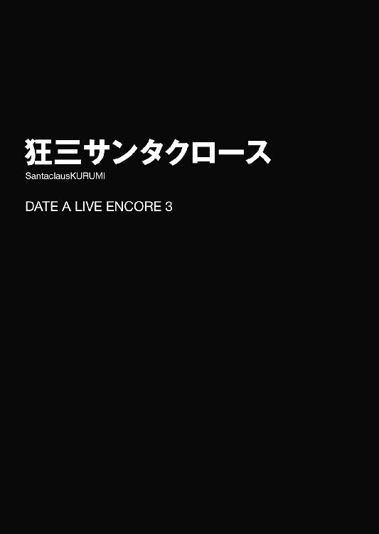
夜闇に光る灯りが、いつもよりも多い。
狂三はビルの屋上から、眼下に煌めく電灯の輝きを睥睨するように眺め、小さく伸びをした。口からこぼれた吐息が白く色づき、空気に溶けるように霧散していく。
一二月二四日。街はすっかりクリスマスムードだった。通りには煌びやかな電飾が踊り、夜の街を、行き交う人々を幻想的に照らしている。
「あら、あら......」
狂三は手すりにもたれかかるようにしながら目を細めた。
どうも、この時期は苦手である。別に嫌悪を覚えるとかそういったことはないのだが、あまり......得意ではないのだ。
なぜだろうか。自分でもよくわからない。冬の寒気が嫌いなのか。下品な電飾が見るに堪えないのか。それとも──
「............」
──きっと、祭りの気分に浮かれる人間たちの、脳天気極まる顔が気に障るだけだろう。狂三は自分に言い聞かせるように適当に結論づけて、くるりと身体の向きを変えた。
繁華街の片隅に建ったビルの屋上に、他に人影はない。否──正確に言うのなら少し違う。人はおらずとも、『影』だけは辺り一面に広がっていたのである。
そう。『影』だ。
夜でも闇でもなく──その屋上を満たしているのは、紛れもなく狂三の『影』であった。
「──わたくしたち」
狂三が呟くように言葉をこぼすと、それに応ずるように、屋上一面に広がった影から、白い手が幾本も顔を覗かせた。そしてその手たちは蠱惑的に指を蠢かせたかと思うと、そのまま、影の中から這い出るようにしてその身体を外気に晒した。
そこに現れたのは、全員が同じ顔をした少女の群れであった。左右不均等に括られた長い黒髪。夜闇に浮かぶ白い貌。そして──かちりかちりと時を刻む左目。
それらは、全員が『時崎狂三』そのものであった。
それもそのはず。彼女らは狂三の天使〈刻々帝〉の力によって再現された、狂三の過去の姿たちなのだから。
「いかがでして？」
狂三は、あごを撫でるようにしながら、分身体たちに問うた。すると、居並んだ『狂三』たちが、順に声を発してくる。
「ＤＥＭインダストリーに目立った動きは見られませんわ」
「ＡＳＴも同様に。大人しいものですわ」
「他の対精霊機関も同じく、ですわ」
「そうですの」
狂三は目を細めながらふうと息を吐いた。──おおよそ、予想通りである。
今ここに集結している分身体たちは、狂三が方々に放っている諜報用の『狂三』たちだった。敵の多い狂三にとって、情報は生命線である。狂三が今ここにいるのも、分身体たちから定期報告を受けるためだった。
「それで、第二の精霊の所在は？」
狂三が言うと、分身体たちが一斉に目を見合わせ、一様に首を振った。
これも......予想通りである。狂三はさして落胆するでもなく目を伏せた。
第二の精霊。その呼び名の通り、この世界に二番目に現界したと言われ、狂三の探す原初の精霊の情報を唯一握っているとされる精霊である。
分身体の調査の結果、どうやらその身柄がＤＥＭインダストリーに確保されているらしいことはわかったのだが......一体どの国のどの施設に囚われているかは未だに知ることができていないのだった。
「まあ......ＤＥＭ側からしても最重要機密、そう簡単に尻尾を摑ませてくれるとは思っていませんわ。引き続き、調査を頼みますわよ」
「ええ、ええ」
「承りましたわ、わたくし」
「わたくしたちの、悲願のために」
『狂三』たちが言ってくる。狂三はその言葉に、無言のままこくりとうなずいた。
そう。狂三は第二の精霊を見つけ出さねばならない。
そして知らねばならない。原初の精霊のことを。
確実に──その息の根を止めるために。
「ああ......そういえば」
と。そんな中、一人の分身体が何かを思い出したように声を発した。
「どうかしましたの、わたくし」
「ええ。一つ報告を忘れておりましたわ。士道さんのことなのですけれど」
「士道さん......？」
分身体が発した言葉に、狂三は眉をぴくりと動かした。
五河士道。精霊の力をその身に封印するという、信じられない能力を持った少年の名である。
狂三の目的を達するためには、彼がその身に蓄えた膨大な量の霊力が必要になってくるため、ＤＥＭやＡＳＴなどと同じく、分身体に動向を探らせていたのだ。
「何かありましたの？」
「ええ。どうやら士道さん──」
分身体が、何やら深刻そうな調子で言ってくる。そのただならぬ様子に、狂三は少し身構えた。
「今夜、サンタクロースに扮して十香さんたちにプレゼントを配り歩くそうですわ」
「............」
分身体の言葉に、狂三は一瞬目を丸くしたのち、はあと大きく息を吐きながら額に手を当てた。
「......何かと思えば。そんなことですの」
緊張して損をした。狂三はもう一度大仰にため息を吐いてみせた。
どうやら士道が力を封印しても、精霊たちの精神状態が乱れると、霊力の一部が逆流を起こすらしく、士道は様々な手法を以て精霊たちを楽しませようとすることがあった。今回もそんな活動の一環だろう。別に、特別気に留めねばならないことでもあるまい。
しかし。分身体はブンブンと首を振った。
「何を仰っていますの、わたくし。これがどういうことか気づきませんの？」
「......？ どういうことですの？」
「プレゼント交換ならまだしも、サンタクロースに扮して、ということは、士道さんは誰からもプレゼントをもらえないことになるではありませんの」
「それがどうかしまして？」
「頑張っているのに、可哀相ではありませんの」
「............」
狂三は幾度目とも知れないため息を吐いた。......〈刻々帝〉で作る分身体は狂三の過去の姿であるため、性格や格好に微妙な誤差が出るのだが......どうやらこの狂三は少々『若すぎる』らしい。
「まったく......余計なことばかり考えていないで、しっかりと務めを果たしてくださいまし。だいたい──」
が、狂三が分身体に苦言を呈そうとすると、
「あらあら、それは確かに可哀相ですわね」
「ええ、ええ、努力は報われるべきですわ」
「そうですわね。何とかしてさしあげたいところですけれど」
何ということだろうか、他の分身体たちが、その話に同調を示し始めた。
「何を言っていますの、わたくしたち」
狂三がやれやれといった調子で言うと、分身体たちが一斉に視線を寄越してきた。
「でも、わたくし。士道さんにも何かご褒美があってもよいとは思いませんこと？」
「そうですわよ。よくよく考えてみれば、先月士道さんが歴史改変の可能性を証明してくれたあと、何もお礼をしていないではありませんの」
分身体たちが言ってくる。その言葉に、狂三は小さく眉根を寄せた。
先月。狂三は士道に時間遡行の弾──【一二の弾】を撃ち込み、士道を五年前の世界に飛ばした。
そして、士道は証明してみせたのだ。
──歴史は、絶対不変のものではないと。
世界は、変えることができる。実際、士道は変えてみせた。絶望に満ちた悲劇を、なかったことにしてみせた。
ならば──狂三にもできるはずだ。原初の精霊を殺し、世界を変えることが。
確かにあの一件以来、狂三の中にあった決意はより強固なものとなった。歴史改変の可能性。その生きた証明が目の前に示されたことによって。だが──
「あれは、士道さんにとっても利のある話だったではありませんの。士道さんは折紙さんの運命を変えることを望み、代わりにわたくしに歴史改変の可能性を証明した。わたくしは歴史改変の証明を得ることを望み、代償として〈刻々帝〉秘中の秘、【一二の弾】を使って差し上げた。それでおあいこですわ」
そう。それで話は終わっているはずだ。狂三は目を伏せ、肩をすくめた。
しかし分身体たちは、腑に落ちないといった様子で唇を尖らせてくる。
「結果から言えばそうかもしれませんけれど、お互い納得ずくのこととは言い難かったと思いますわよ」
「そうですわね。完全に事後承諾でしたものね」
「それに、いくら【一二の弾】を撃って差し上げたとはいえ、その発動に使ったのは士道さんの霊力ではありませんの」
「まあもちろんわたくしのこと。別にそれ自体を責める気はありませんけれど、お礼の一つくらいしても罰は当たらないと思いますわよ」
「ですわよねー」
「ねー」
なんて、不満げにさえずり始める。狂三は困惑したように額に手を当てた。
「お礼って......一体何をしろと仰いますの？」
狂三が言うと、分身体たちは一瞬顔を見合わせてから視線を戻してきた。
「せっかくのクリスマスですもの。士道さんに何かプレゼントを用意しては？」
「とはいえ無論、直接渡せなどとは申しませんわ。わたくしと士道さんの微妙な関係は理解していますもの」
「ですから、夜中士道さんの枕元にプレゼントを置いてくればよいのですわ」
「............」
狂三は頰に汗を滲ませた。要は、狂三にサンタクロースになれと言っているらしい。
冗談ではない。呆れたように首を振ってみせる。
「ふざけていますの？ そんなにプレゼントがしたいのであれば、勝手に──」
言いかけて、狂三は言葉を止めた。
そんなことを言えば、若い分身体たちはこれ幸いと喜び勇んで士道のもとにプレゼントを届けにいくに違いない。
それだけでことが済めばよいのだが、こんなことを言い出すことからもわかる通り、若い分身体は精神が不安定であり──今の狂三よりも少し、情に絆されやすい。必要以上に士道と触れ合わせすぎては、特別な感情を抱かせてしまう恐れがあった。
もしそうなってしまえば、その分身体は処分する他ない。無論、『時間』がある限り分身体の補充は可能なのだが──やはり『自分』を殺すのはあまり気分のよいものではなかった。
かといって、無理矢理禁止を言い渡したところで、分身体たちが従うかどうかはわからない。狂三は諦めたように息を吐いた。
「......仕方ありませんわね。わたくしが行きますわ」
狂三の言葉に、分身体たちがわぁっと色めき立った。
「よく決断してくださいましたわ」
「うふふ、何を贈りましょうかしら」
「わたくしたち、何か案はありまして？」
「でも、決行は今夜でしてよ？ 今から用意できるものだなんて──」
と、分身体たちが言い合っていると、その中でビッ、と優雅に手が挙げられた。
「それならば、わたくしに任せてくださいまし」
「あ、あなたは！」
「五年前のわたくし！」
すると、手を挙げた分身体の姿を狂三に見せるかのように、集まっていた分身体たちがざざっと左右に割れる。まるで歌劇の舞台でも見ているかのような感覚である。
「......あら」
その姿を見て、狂三はぴくりと頰を動かした。
しかしそれも無理からぬことだろう。そこにいたのは確かに『狂三』だったのだが──他の『狂三』たちとは少し異なる格好をしていたのである。
髪は括っておらず、その代わり薔薇の意匠が施された髪飾りを着けている。装いはといえば、白と黒とで構成されたモノトーンのドレス、そして左目には、時計を隠すためにか医療用の眼帯が着けられていた。
今から五年くらい前、左目を隠す必要に迫られた際、試しに眼帯を着けてみたらなんとなく気に入ってしまった頃の狂三が再現された分身体であった。
......当時は格好いいと思っていたものの、今改めて見てみるととても恥ずかしい。正直、あまり顔を合わせたくない個体だった。
「任せろ、とはどういうことですの？」
「うふふ、言葉通りの意味ですわ」
言って、眼帯の狂三は懐から小さな箱を取り出してみせた。
「こんなこともあろうかと、既にプレゼントは用意してありますわ」
眼帯の狂三が得意げに言う。周りの分身体たちが『おおー』と声を上げた。
「用意周到ですわね、わたくし」
「さすがわたくしですわ」
奇妙な自画自賛の嵐が吹き荒れる。だが、狂三は頰に汗を垂らした。
理由は単純。五年前当時の狂三のセンスで選ばれたプレゼントに、そこはかとない不安を感じてしまったのである。
そんな狂三の思考に気づいているのかいないのか、眼帯の狂三は優雅に歩みを進めてくると、狂三にその箱を手渡してきた。
手のひらよりも少し小さいくらいのサイズではあるのだが、大きさの割にずっしりとしている。何か金属系のものが入っていることを思わせる重量感だった。
「......それで、この箱には何が入っていますの、わたくし」
「うふふ、それは、士道さんが開けてみるまでのお楽しみですわ」
「............」
考え得る限り最悪の回答である。狂三は軽い目眩に蹌踉めきかけた。
一体何をプレゼントにしたというのだろうか。狂三は五年前の自分の感覚を思い出しながら思案を巡らせた。
「もしわたくしの名前が刻まれた逆十字のシールドリングなどが入っていた場合、首から上と下が離ればなれになることを覚悟していただきますわよ、わたくし」
「ぎくっ」
「ぎくっ!? 今ぎくっと仰いまして!?」
狂三はたまらず叫びを上げた。が、すぐに眼帯の狂三がくすくすと笑ってくる。
「冗談ですわよ。中に入っているのは別のものですわ」
「............」
狂三は訝しげな視線を眼帯の狂三に向けた。
〈刻々帝〉【一〇の弾】を使えば、この中に何が入っているかを知ることは容易い。だが、こんなくだらないことのために貴重な『時間』を消費することはできなかった。
......まあ、何が入っていたとしても、狂三からの贈り物であると示すわけではないのだ。そう判断して、狂三は諦めたように息を吐いた。
「士道さんが寝ている間に、これを枕元に置いてくればよいのですわね？」
「ええ、ええ」
「その通りですわ」
「士道さんも大喜び間違いなしですわ」
分身体たちが、わいわいと盛り上がり始める。
だが、
「──果たして、そうですかしら」
そのとき。分身体の群れの中から、そんな声が聞こえた。
「あ、あなたは！」
「六年前、包帯が格好いいと思っていた頃のわたくし！」
その声に弾かれるように、分身体たちが一斉に顔を上げ、先ほどと同様にざざっと左右に割れて狂三にその分身体の姿を晒す。まるで海を割るモーセである。
そこから現れたのは、全身の至る所に包帯を巻いた狂三だった。右手、左足、そして無論──左目にも。
見るからに痛ましい有様だが、別にそんなに酷い怪我を負っていたわけではない。本来の怪我は右手のかすり傷のみなのだが、この程度の傷に【四の弾】を使うのももったいない、と包帯を巻いているうちに、なんだか楽しくなってしまって、怪我をしていない場所にも治療を施してしまったのである。
......これまた、眼帯の狂三と並んであまり目にしたくない時代の個体だった。
「どういう意味ですの、わたくし」
分身体が包帯の狂三に問う。すると包帯の狂三は意味深げに笑いながら狂三の方を指さしてきた。
「簡単なこと。わたくしの出で立ちですわ。まさか、その格好のまま士道さんのところへ行くつもりですの？」
「......まさか、包帯を巻けとでも仰いますの？」
狂三が言うと、包帯の狂三は一瞬目を丸くしてから大仰に肩をすくめた。
「そういう意味ではありませんわ。──プレゼントそのものにわたくしの痕跡を残さないとはいえ、もしそれを枕元に置くわたくしの姿が目撃されてしまったなら、意味がないのではありませんこと？」
包帯の狂三の言葉に、狂三はなるほどとうなずいた。確かにその通りである。無論、やる以上下手を打つつもりはないが、万一ということもある。この特徴的な霊装のままでは一目で狂三とばれてしまうだろう。
「そうですわね。ならば私服に着替えてから──」
「いえ。それよりも相応しい服装を用意してありますわ」
「え？」
狂三の声に、包帯の狂三はニッと唇の端を上げ、片手を横に掲げた。
するとその瞬間、影から一着の服が飛び出してきて、その手に握られる。──その、赤と白の、衣が。
「そ、それは......」
「サンタさん、ですの？」
分身体たちが目を丸くする。
そう。包帯の狂三が取り出したのは、モコモコの上着にズボン、赤い帽子、そして大きな袋という、いわゆるサンタ服だったのである。
「ええ。これならばもし見つかっても、サンタと思われるだけですわ」
「じ、冗談ではありませんわ！」
狂三はたまらず声を上げた。ただでさえ乗り気ではないというのに、なぜそんな浮かれた格好までせねばならないというのか。
しかし、狂三の声をよそに、分身体たちはさらに盛り上がっていた。
「ああ、素敵ですわね、素敵ですわね」
「ええ。わたくしによく似合いそうですわ」
「うふふ、わたくしは何を着ても似合いますもの」
「こ、こら、わたくしの話を──」
と、狂三が言いかけたところで、
「──駄目、ですわね」
分身体の群れの中から、そんな声が響いた。
「あ、あなたは！」
「七年前、甘ロリにかぶれていた時期のわたくし！」
三たび、分身体たちの波が割れる。
そこに立っていたのは、周囲の狂三とは対照的に、フリルとレースたっぷりの白いドレスに身を包んだ狂三だった。まるで童話の中のお姫様のような出で立ちである。頭には花のようなボンネット。手には、雨も日差しもろくに防げないであろう小さな傘を握っていた。ちなみに甘ロリとは、優しい色合いを主体とした、甘めのロリータファッションのことである。
「どういう意味ですの、わたくし」
「あのサンタ服であれば、条件にもぴったりではありませんの」
「何か不満がございまして？」
分身体たちが不思議そうに問う。すると甘ロリの狂三は嘆かわしい、というように首を振ってみせた。
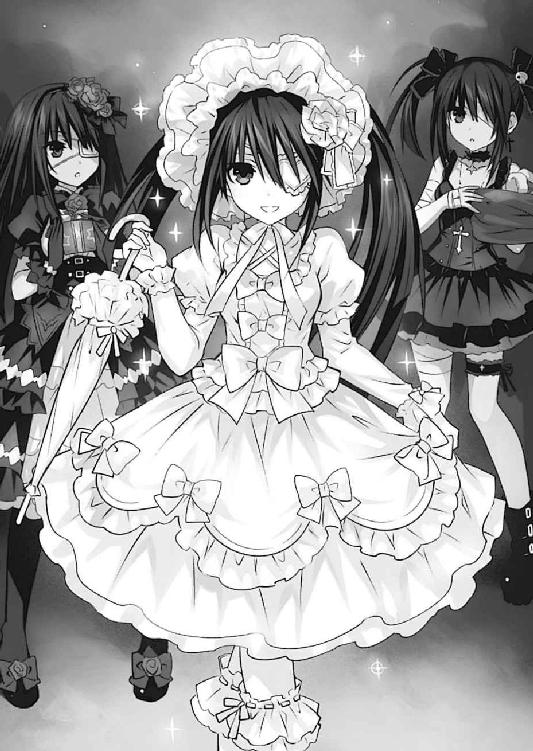
「確かに機能的に見れば十分なのかもしれませんわ。でも、乙女たる者、常に優雅さを忘れてはいけませんわよ？」
「では、どうしろと仰るんですの？」
「うふふ──」
分身体の声に、甘ロリの狂三は、包帯の狂三のもとに歩み寄っていった。
そして、帽子と袋のみを包帯の狂三に残したまま、上着とズボンを手に取ると、その場でくるりと身体を回転させた。
するといつの間にか、その手に持っていた衣服が、形状を変化させていた。色は変わらず赤と白。しかしその形は、先ほどのそれよりも明らかに布面積が少なく、尚且つ身体のラインを際立たせるように縫製されていた。そして、何よりも大きな変化はそのボトムスだ。ただのズボンだったそれが、可愛らしいミニスカートに変貌していたのである。
その存在感に、分身体たちが『おお......っ』とざわめく。
「な、なるほど......これは！」
「野暮ったいサンタルックが、一気に可愛らしいミニスカサンタに変貌しましたわ！」
「さすがは甘ロリ時代のわたくしですわ！」
目の前で起こった魔法のような出来事に、分身体たちが拍手をする。包帯の狂三もまた、「やれやれ、あなたには敵いませんわね」とでもいうように肩をすくめていた。
まあ、種を明かせば身体を回転させると同時に、手にした服と影の中にあった服を入れ替えただけなのだろうが......なんというか、七年前の狂三は今以上に凝った演出が好きだったのである。
「さ、ではわたくし。これを着て士道さんのところに行ってらっしゃいまし」
「ふ、ふざけないでくださいまし！ なぜわたくしがそんな格好を......」
「あら、では仕方ありませんわ。代わりにわたくしが」
甘ロリの狂三が、それならそれで構わない、といった様子で言ってくる。
「ぐ......」
狂三は、悔しげにうめきを上げた。
◇
「......では、行ってきますわ」
影の中で、狂三は疲れたような声を発した。
「あらあら、元気がありませんわね」
「そんなことでは、見つかってしまいますわよ」
「............」
吞気に言ってくる分身体たちの声を背に聞きながら、狂三はぎりと奥歯を嚙むと、観念したように息を吐いて影から顔を出した。
そして辺りの様子を探り、誰もいないことを確認して、ずるりと影から身体を引っ張り出す。
その装いは、お腹の部分がコルセットのように締め付けられ、大胆に肩が露出したサンタ服、可愛らしく広がったミニスカート、白いボンボンがついたブーツという、季節に合っているんだか合っていないんだかよくわからないコスチュームだった。結局分身体たちの要請を断り切れず、ミニスカサンタルックをさせられていたのである。衆愚にかかれば民主制は斯くの如く堕落する。民主主義の致命的な弱点を見た気がする狂三だった。
実際、サンタにしては過度に露出が多いため、非常に寒い。先ほどまで雪が降っていたのか、道がうっすらと白くなっていたものだからなおさらに。
とはいえ、いつまでも引きずっているわけにはいかなかった。こうなってしまった以上、できるだけ早く目的を達するのが得策だろう。そう考えて、狂三は顔を上げた。
狂三が影から出現したのは、士道の住む五河家の門の前だった。分身体からの報告が確かならば、士道は今、自宅隣のマンションにプレゼントを配りに行っているはずである。
本来ならばサンタクロースは寝ている間にやってくるものらしいが、それでは士道が途中で目を覚ましてしまう可能性がある。それならば、士道が部屋にいないうちにプレゼントを置いてきた方が確実だろう。それが、狂三がサンタコスチュームを着ることを承諾する代わりに分身体たちに飲ませた条件だった。士道が途中で目を覚ましてドキドキ！ 展開を期待していたらしい一部の分身体は不満そうだったが、狂三が本気の目で睨みつけると大人しくなった。視線には力があるのである。
「さ......早く済ませてしまいましょう」
言いながら、五河家の門に手を掛ける。
と、その瞬間。
「──まぁてぇぇぇぇ──」
「──、どこへ──」
「あら......？」
どこかから声のようなものが聞こえてきて、狂三は首を傾げた。周囲の住宅からだろうか。まるで何かを追いかけるような声が──
狂三がそんなことを考えていると、次いでバタバタという足音が、そして自動ドアが開く音が左方のマンションから聞こえてきた。
「くっ、どこへ逃げおったサンタめ！」
「探索。まだ遠くへは行っていないはずです」
マンションから瓜二つの顔をした双子が息を荒くしながら走り出てきて、キョロキョロと辺りを見回し始める。
「わっ、ていうか雪降ってたの!? すごっ！」
「驚愕。辺り一面真っ白です」
彼女らの顔には見覚えがあった。風を操る精霊、八舞耶俱矢・夕弦姉妹である。
どうやら、何かを探しているらしい。随分と鼻息が荒い様子で──
「──！ いたぞ、夕弦！」
「確認。あの赤と白、間違いありません」
「へっ？」
耶俱矢と夕弦が目をカッと見開いたかと思うと、狂三の方目がけて走ってくる。狂三は一瞬目を丸くしてしまった。
が、すぐに非常事態であることを察知する。狂三は慌てて道を走っていった。
「待ぁぁぁてぇぇぇぇぇっ！」
「追跡。逃がしません......！」
「な、なんですの、一体......っ？」
突然のことに、頭が混乱する。意味がわからない。だが、今足を止めたらいろいろと厄介なことになりそうなことだけは理解できた。
狂三はなぜ追われているかもわからないまま、夜の住宅街を駆け抜けていった。
「はぁ......っ、はぁ......っ」
それからどれくらい追いかけっこを続けただろうか。ようやく冷静になった狂三は影の中に逃げ込み、どうにか八舞姉妹を撒いた。
本来であれば、霊力を封印された精霊など狂三の敵ではないのだが、どういう形であれ今夜狂三の痕跡を残すのは望ましくなかったし、何よりこの程度のことで無駄に『時間』を消費するわけにもいかなかったのである。
呼吸を整えながらもときた道を歩き、再度士道の家の前まで至る。
「まったく......一体何だったんですの......」
言いながらも、一呼吸置いたことで思考は随分とクリアーになっていた。八舞姉妹の言葉から類推するに、士道扮するサンタを追いかけているところで狂三を見つけ、ターゲットがすり替わってしまったのだろう。とんだ災難である。
「だからこんな格好、嫌だったのですわ」
『あらあらあら』
狂三が愚痴るように言うと、影の中から分身体の声が聞こえてきた。
『でももしサンタ服を着ていなかったなら』
『八舞姉妹に正体がバレてしまっていたのではありませんこと？』
「く......」
狂三は微かに眉をひそめると、気を取り直すように五河家の方を向いた。
「とにかく、今度こそ行きますわよ」
言って狂三は門を開け、庭の中へと入っていった。
とはいえ、無論そのまま玄関を開けるような下手は打たない。先ほどから時間が経っている以上、士道が戻ってきているかもしれないし、士道の妹である炎の精霊、〈イフリート〉五河琴里がいるやもしれないのである。
狂三はひらりと身を翻すと、優雅な所作で五河家一階の屋根に上った。そしてそこから、士道の部屋の窓を覗き込む。
と、そこで狂三は違和感に気づいた。窓の鍵が、既に開いていたのである。
「あら......？」
狂三は首を捻ると、窓から部屋の中を覗き込み──一瞬、身体を硬直させた。
理由は単純。部屋に士道はいなかったのだが......その代わり、先客がいたのである。
「............」
士道のクラスメート、鳶一折紙が、部屋の真ん中で、いそいそと服を脱いでいたのだ。
カーディガン、ブラウス、スカート、靴下、さらにはブラにショーツまで。身につけていたあらゆる衣服を脱ぎ去り、一糸纏わぬ姿になる。
すると折紙は、持参していた鞄の中からテープのように纏められたリボンを取りだし、それをするすると伸ばして器用に身体に巻き付けていった。まるで──プレゼントを包装するように。
そして、裸身を可愛らしくラッピングした折紙は、満足げにうなずくと、鞄から人間が収まりそうなくらい大きな靴下を取り出すと、口を広げ、その中に入ろうとした。
と、そこで。
「............」
がちゃりと扉が開き、仕事を終えてきたと思しきサンタ姿の士道が入ってきた。
しばしの間、沈黙が流れる。
──あとの展開はまあ、予想通りのものだった。
折紙が巨大靴下に士道を詰め込んで連れ去ろうとし、士道が必死に逃れ、わかった、とりあえず一旦落ち着こう。な？ プレゼントが人ってのはまずいって。他のものならあげるから......え？ 実印？ いや何するつもりだよ!? 他の項目は記入済み......？ って何が記入済みなの!? などという士道の悲鳴じみた声が、外にまで響いてきた。
そして、およそ一時間後。狂三の身体が芯まで冷え切った頃、士道の着ているサンタ服をプレゼントにするということで二人が合意した（ちなみに折紙はそのプレゼントを承諾する代わりに、サンタ服を脱ぐ前に腕立て伏せ、腹筋、背筋、スクワットを各一〇〇回ずつすること、という条件を示していた。士道はちょっと意味がわからない様子だったがおとなしく従っていた）。
「よ、ようやく......終わりましたの......？」
折紙が去って行ったのを見送りながら、狂三はむき出しの肩をさすりながら声を発した。カタカタと歯が鳴る。寒さのため全身が小刻みに震えていた。
まだ部屋の中には入れない。それはそうだ。折紙が去っただけで、士道は眠りに就いていないのである。
とはいえ、士道ももう眠かったのだろう。追い剝ぎに遭ったようにサンタ服を奪われた士道は、くしゃみを一つしてからパジャマに袖を通し、眠そうなあくびをこぼすと、ベッドの中に潜り込み、すぐに寝息を立て始めた。
「............」
狂三は、士道が完全に眠りに就いたのを確認してから窓を開け、部屋の中に侵入した。
外よりは大分マシとはいえ、部屋の中もまだまだ寒い。狂三は早く用を終えて帰ろうと、震える手で袋の中を探り始めた。
と──そこで。
「ん......」
「......！」
士道が小さくのどを鳴らしながら寝返りを打つのを見て、狂三の中にある考えが浮かんでしまった。
士道が起きてしまう可能性がある以上、一刻も早く用を終えてこの場を去るのが得策である。だが、折紙が原因とはいえ寒空の下一時間以上も待たされたのである。これくらいの役得があってもいいだろう。
「......これだけ寒いんですもの。仕方ありませんわ」
狂三は言い訳をするように呟いてから、静かに士道の布団を捲り、その中にもぞもぞと入っていった。ちょうど、添い寝をするような格好である。
「ああ......っ」
士道の体温で暖められた布団が、全身を包み込む。狂三は思わず恍惚とした声を発してしまった。
「暖かい......ですわ......」
感覚がなくなるほど冷え切った指先が、徐々に暖められていく。それと一緒に、狂三の意識を、睡魔が襲い始めた。
「あ......ああ......」
このまま眠ったりしようものなら、翌朝大変なことになってしまう。それは狂三にもよく理解できていた。だが、暖かい布団と士道の温もりに、段々とそんな意識さえも溶かされていく。
「だ、駄目......ですわ......このままでは......ああ......でも......」
段々と意識が遠くなり、瞼がゆっくりと落ちていく。
だが、その瞬間。
「ん......、くる......み......」
「......!?」
士道が発した声に弾かれるように、狂三の意識は一瞬にして覚醒した。
士道が起きてしまったのかと思ったが──違う。寝言のようだ。
「もう、驚かせないでくださいまし......」
添い寝していた狂三の匂いで狂三のことを思い出したのか、それともまったくの偶然なのか──詳しいことはわからなかったが、夢に狂三が登場しているらしい。
「あらあら......どんな夢を見ていらっしゃるやら」
狂三は苦笑して、士道の鼻先を指で突いた。すると士道はむむうと唸り声のようにのどを鳴らしたあと、
「......おまえは......俺が......助け......やるから......」
辿々しく、そんな寝言を漏らした。
「............」
狂三はそんな士道の寝顔を見下ろしながら、しばしの間無言になったのち、小さく、息を吐き出した。
「......あら、あら」
そして、幾分か暖まった身体を布団から引っ張り出すと、士道に布団をかけ直したのち、その枕元に用意していたプレゼントを置いた。
「......夢でもそんなことを仰っていますの？ 本当に、お人好しですわね、士道さんは」
狂三は嘆息混じりにそう言うと、身を翻し、窓枠に足をかけた。
「それでは、ごきげん──」
言いかけて。狂三は言葉を止めた。
今このとき、今宵には、もっと相応しい言葉がある気がしたのである。
「──メリークリスマス、士道さん」
そう言って、狂三は窓から空に飛び立った。
◇
──一二月二五日、朝。五河士道は困惑していた。
それはそうだ。何しろ、自分の枕元に見知らぬプレゼントが置かれていたのだから。
「これは......一体......」
昨晩、サンタ役を演じたのは他ならぬ士道である。士道の枕元にプレゼントが置かれている道理はなかった。朝、サンタに貰ったプレゼントを持って士道の部屋に集結した精霊たちも、皆このプレゼントのことは知らないといった様子である。
──まさか、本物のサンタクロースが士道にプレゼントを置いていったとでもいうのだろうか。
と、あまりに現実味のない考えに士道が苦笑していると、十香が声を上げてきた。
「シドー、それで、中には何が入っているのだ？」
「え？ ああ......そういえば」
プレゼントが置かれている、という異常事態に気を取られていたが、プレゼントとは包装された箱のことではなく、その中に入っているもののことである。もしかしたら中身を見れば、渡し主が誰かわかるかもしれなかった。
「じゃあ......開けるぞ」
士道はそう言うと、箱に巻かれていたリボンに手を掛けた。精霊たちがごくりと息を吞み、士道の手元を注視する。
「な、なんか落ちつかねえな......」
言いながら、士道はリボンと包装紙を解き、ゆっくりと箱の蓋を開けた。
そして、その中に入っていたものを取り出してみる。
「これは......」
「時計......ですか？」
士道が手にしたものを見て、四糸乃が言ってくる。
そう。それは、手のひらに収まるくらいの、金の懐中時計だった。竜頭を押してみると細緻な意匠の施された蓋が開き、かちりかちりと規則的に時を刻む文字盤が姿を現す。
目利きができるわけではないが、安い品でないことは容易にわかった。一体誰がこんなものを置いていったのだろうか......？
だが。士道の頭には、それとは別種の疑問が生じていた。
「......なんか、この時計。どこかで見たことがあるような......？」
言いながら、時計を掲げてみせる。
かちり、かちり。時計は、静かに時を刻んでいた。
まるで──狂三の瞳のように。
あとがき
お久しぶりです橘公司です。『デート・ア・ライブ アンコール３』をお送りしました。いかがでしたでしょうか。お楽しみいただけたなら幸いです。
さて、今回もあまりページに余裕がないので、早速短編集恒例の各話所感に入りたいと思います。若干のネタバレを含みますので、未読の方はご注意ください。
○美九オンステージ
美九短編。美九と人気を二分するライバル・朝倉日依が登場します。短編オリジナルのキャラは自由に動かせるので結構好きです。ただ難点はイラストになりづらいところ。
宵待月乃の残したものと、美九の成長が垣間見えるお話となりました。余談ですが、朝倉日依と宵待月乃は『朝・宵』、『日・月』で名前が対応しています。もしかしたら、日依がデビューの際に月乃から名前をもらったのかもしれませんね。
○士織ペナルティ
まさかの士織ちゃん短編。士道が後戻りできない場所にまで来ている感が半端じゃありません。自然に「ちゃん」づけになってしまう辺り病巣は根深い。
一言で言うなら、「もしも士織ちゃんが学校にやってきたら」。なかなかできない話なので、イベントの取捨選択に苦慮した記憶がありますが、バスの中の折紙だけは最初から決めていた気がします。あれはなきゃ駄目だろう。折紙だもの。
○七罪ティーチング
やあみんな、ナツーミ。というわけで七罪短編です。見所はなんといっても、女教師ルックの七罪（大）と、〈贋造魔女〉で変身した大人四糸乃。四糸乃......こんなに大きくなって。〈贋造魔女〉の能力は『成長』ではなくあくまで『変身』なので、あの姿は七罪の思い描いた大人四糸乃ということになります。あと何気に、クラスの面々、特に亜衣麻衣美衣が活躍した回でした。まさかあの三人の親族の話を回収することになるとは。
○真那リサーチ
ようやく来ました真那短編。髪を解いたレアな真那が見られます。こうして見ると士織ちゃんに似てますね。さすが姉妹。じゃない。兄妹。
男前な真那、略して男真那な話。真那の兄妹愛は海よりも深いのでキャプテン・シドーでも受け入れてくれるのです。そのうち機会があれば士織と真那のお買い物とか書きたいのですが、需要ありますかね。
○キャットカフェ・ア・ライブ
Amazonの全巻購入特典についたショートストーリー。狂三の知られざる休日ですにゃ。語尾は「にょ」でもよかったのですが、何か危険なものを感じてやめましたにゃ。
○精霊メリークリスマス
書き下ろしその一。そう、今回は書き下ろしが二本あるのです。豪華！
タイトルの通りクリスマスの話です。皆思い思いのプレゼントをリクエストしていますが、夕弦のデジタルカメラっていうのは一体誰の影響なんでしょうね。そして、士道好きと美少女好きが合わさった美九の隙のなさがヤバイ。
○狂三サンタクロース
書き下ろしその二。『キャットカフェ・ア・ライブ』でもそうでしたが、短編の狂三は分身体に舐められ過ぎじゃないですかね。
とはいえ、いろいろ患っている頃の分身体はお気に入りです。たぶんあと一人くらい強烈な奴がいて、狂三四天王とか作っているに違いありません。くくく......眼帯狂三がやられたか。しかし奴なぞ我らの中では一番の小物......のあたりで狂三本体から強制ストップがかかります。
そして、クリスマス後の一二月二六日には、犬威赤彦さんのコミック版『デート・ア・ライブ 十香デッドエンド』３巻が発売されます！ 是非よろしくお願いします！ 最終巻となっておりますので、ご興味ある方は１、２巻も併せてどうぞ！
さて、今回も、様々な方々のお力添えによって本を出すことができました。
イラストのつなこさん、担当氏、デザイナーさんや編集部の皆様、出版、流通、販売に関わる皆様、そして、今この本を手にとってくださっている読者様。本当にありがとうございます。
次は、『デート・ア・ライブ12』でお会いできれば幸いです。
二〇一四年一一月 橘 公司
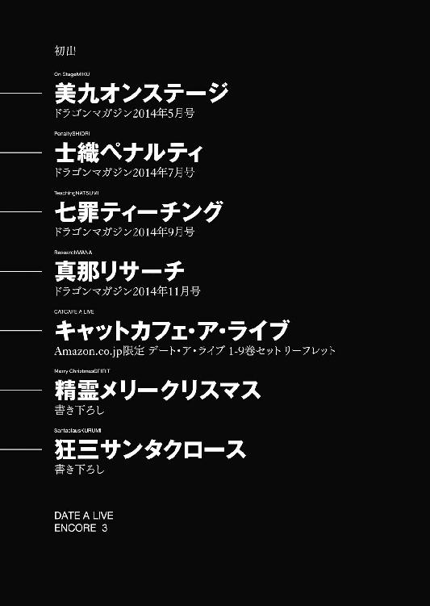
デート・ア・ライブ アンコール３
橘公司
平成26年12月25日 発行
発行者 郡司 聡
発行所 株式会社ＫＡＤＯＫＡＷＡ
〒102-8177 東京都千代田区富士見2-13-3
03-3238-8745（営業）
http://www.kadokawa.co.jp/
企画・編集 富士見書房
03-3238-8585（編集）
http://fujimishobo.jp
(C)Koushi Tachibana, Tsunako 2014
本電子書籍は下記にもとづいて制作しました
富士見ファンタジア文庫『デート・ア・ライブ アンコール３』平成26年12月25日初版発行